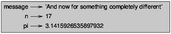

traduction du livre: Think Python, How To Think Like A Computer Scientist d’Allan Downey
par Abdur-Rahmaan Janhangeer de l’Ile Maurice
Le but de ce livre est de vous apprendre à penser comme un informaticien. Cette façon de penser combine certaines des meilleures caractéristiques des maths, de l’ingénierie et des sciences naturelles.
Comme les mathématiciens, les informaticiens utilisent des langages formels pour désigner des idées (en particulier les calculs). Comme les ingénieurs, ils conçoivent des choses, assemblent des composants dans des systèmes et évaluent les compromis entre les alternatives. Comme les scientifiques, ils observent le comportement des systèmes complexes, forment des hypothèses et testent des prédictions.
La compétence la plus importante pour un informaticien est la résolution de problèmes. La résolution des problèmes signifie la capacité de formuler des problèmes, réfléchir de manière créative aux solutions et exprimer une solution claire et précise. Dans l’affirmative, le processus d’apprentissage au programmation est une excellente occasion d’affiner ses compétences en matière de résolution de problèmes. C’est pourquoi ce chapitre s’appelle, “Le chemin de la programmation”.
À un niveau, vous apprendrez à programmer, une compétence utile en soi. Sur un autre niveau, vous utiliserez la programmation comme un moyen d’atteindre une fin. À mesure que nous progressons, cette fin deviendra plus claire.
Un programme est une séquence d’instructions qui spécifie comment effectuer un calcul. Le calcul peut être quelque chose de mathématique, comme la résolution d’un système d’équations ou trouver les racines d’un polynôme, mais il peut également s’agir d’un calcul symbolique, comme la recherche, remplacer du texte dans un document ou quelque chose de graphique, comme le traitement d’une image ou jouer une vidéo.
Les détails sont différents dépendant des langues, mais quelques instructions de base apparaissent dans la plupart des langues:
Entrée: Obtenez des données du clavier, d’un fichier, du réseau ou d’un autre appareil.
Sortie: afficher les données sur l’écran, l’enregistrer dans un fichier, envoie sur réseau, etc.
Maths: effectuez des opérations mathématiques de base comme addition et multiplication.
Exécution conditionnelle: vérifier certaines conditions et exécuter le code approprié.
Répétition: Effectuez une action répétée, habituellement avec une certaine variation.
Croyez-le ou non, c’est à peu près tout ce qu’il y a à faire. Chaque programme que vous avez déjà utilisé, quelle que soit la complexité, se compose d’instructions qui ressemblent à peu près à celles-ci. Ainsi, vous pouvez penser à la programmation en tant que processus de rupture d’une tâche complexe en de sous-tâches plus petites et plus petites jusqu’à ce que les sous-tâches soient assez simples pour être exécutées avec une de ces instructions de base.
L’un des défis de commencer avec Python est que vous devrez peut-être installer Python et logiciels relatifs sur votre ordinateur. Si vous connaissez votre système d’exploitation, et surtout si vous êtes à l’aise avec l’interface de ligne de commande, vous n’aurez aucun problème pour installer Python. Mais pour les débutants, il peut être douloureux d’apprendre l’administration du système et la programmation en même temps.
Pour éviter ce problème, je vous recommande de commencer à exécuter Python dans un navigateur. Plus tard, lorsque vous êtes à l’aise avec Python, je ferai des suggestions pour installer Python sur votre ordinateur.
Il existe un certain nombre de pages Web que vous pouvez utiliser pour exécuter Python. Si vous avez déjà un favori, allez-y et utilisez-le. Sinon, je recommande PythonAnywhere. Voyez les instructions sur http://tinyurl.com/thinkpython2e
Il existe deux versions de Python, appelées Python 2 et Python 3. Elles sont très similaires, donc si vous en apprendrez un, il est facile de passer à l’autre. En fait, il n’y a que quelques différences que vous rencontrerez en tant que débutant. Ce livre est écrit pour Python 3, mais j’ai inclu des notes sur Python 2.
L’interpréteur Python est un programme qui lit et exécute le code Python. En fonction de votre environnement, vous pouvez lancer l’interprète en cliquant sur une icône ou en tapant python sur une ligne de commande. Quand cela commence, vous devriez voir:
Python 3.4.0 (default, Jun 19 2015, 14:20:21)
[GCC 4.8.2] on linux
Type "help", "copyright", "credits" or "license" for more information.
>>>
Les trois premières lignes contiennent des informations sur l’interprète et le système d’exploitation actuel, donc il pourrait être différent pour vous. Mais vous devez vérifier que le numéro de version, qui est 3.4.0 dans cet exemple, commence par 3, ce qui indique que vous utilisez Python 3. Si cela commence avec 2, vous exécutez (vous l’avez deviné) Python 2.
La dernière ligne indique que l’interprète est prêt à recevoir le code. Si vous tapez une ligne de code et appuyez sur Entrée (sur le clavier), l’interprète affiche le résultat:
>>> 1 + 1
2
Maintenant, vous êtes prêt à commencer. À partir de là, je suppose que vous savez comment commencer l’interprète de Python et exécuter des lignes de code.
Traditionnellement, le premier programme que vous écrivez dans une nouvelle langue s’appelle “Hello, World!” Parce que tout ce qu’il fait, c’est d’afficher les mots “Hello, World!”. Dans Python, cela ressemble à ceci:
>>> print('Hello, World!')
Il s’agit d’un exemple d’une déclaration d’impression, bien qu’il n’imprime en réalité rien sur papier. Il affiche un résultat sur l’écran. Dans ce cas, le résultat est les mots
Hello, World!
Les guillemets dans le programme marquent le début et la fin du texte à afficher ; ils n’apparaissent pas dans le résultat.
Les parenthèses indiquent que l’impression est une fonction. Nous aborderons les fonctions du chapitre 3.
Dans Python 2, l’instruction d’impression est légèrement différente; ce n’est pas une fonction, donc les parenthèses, ça ne sert à rien.
>>> print 'Hello, World!'
Cette distinction aura plus de sens bientôt, mais c’est assez pour commencer.
Après " Hello, World!", la prochaine étape est l’arithmétique. Python fournit aux opérateurs, qui sont des symboles spéciaux qui représentent des calculs comme addition et multiplication.
Les opérateurs +, -, et * effectuent l’addition, la soustraction et la multiplication, comme suit exemples:
>>> 40 + 2
42
>>> 43 - 1
42
>>> 6 * 7
42
#L'opérateur / exécute la division:
>>> 84/2
42,0
Vous pourriez vous demander pourquoi le résultat est 42.0 au lieu de 42. Je vais vous expliquer dans la prochaine section.
Enfin, l’opérateur ** effectue une exponentiation; c’est-à-dire qu’il soulève un nombre à une puissance:
>>> 6 ** 2 + 6
42
Dans certaines autres langues, ^ est utilisé pour l’exponentiation, mais en Python, c’est un opérateur bit appelé XOR. Si vous n’êtes pas familiarisé avec les opérateurs bit, le résultat vous surprendra:
>>> 6 ^ 2
4
Je ne couvrirai pas les opérateurs bit à bit dans ce livre, mais vous pouvez les lire sur http://wiki.python.org/moin/BitwiseOperators.
Une valeur est l’une des choses de base avec laquelle un programme fonctionne, comme une lettre ou un numéro. Certains des valeurs que nous avons vues jusqu’ici sont 2, 42.0, et 'Hello, World!'.
Ces valeurs appartiennent à différents types: 2 est un nombre entier, 42.0 est un float alias nombre décimal et 'Hello, World!' est une chaîne de charactères (string en anglais), soi-disant parce que les lettres qu’il contient sont enfilées ensemble.
Si vous ne savez pas de quel type est une valeur, l’interprète peut vous dire:
>>> type (2)
<classe 'int'>
>>> type (42.0)
<classe 'float'>
>>> type (' Hello, World!')
<classe 'str'>
Dans ces résultats, le mot «class» est utilisé au sens d’une catégorie; un type est une catégorie de valeurs.
Il n’est pas surprenant que les entiers appartiennent au type int, les chaînes appartiennent à str et les nombres à virgule flottante à float.
Qu’en est-il des valeurs comme '2' et '42 .0 '? Ils ressemblent à des chiffres, mais ils sont en citations comme les strings.
>>> type ('2')
<classe 'str'>
>>> type ('42 .0 ')
<classe 'str'>
Ils sont des strings.
Lorsque vous tapez un grand nombre entier, vous pourriez être tenté d’utiliser des virgules entre les groupes de chiffres, soit 1 000 000. Ce n’est pas un entier juridiquement parlant en Python, mais c’est légal :
>>> 1,000,000
(1, 0, 0)
Ce n’est pas ce à quoi nous nous attendions du tout! Python interprète 1,000,000 comme une séquence d’entiers séparé par des virgules. Nous en apprendrons d’avantage sur ce genre de séquence plus tard.
Les langues sont les langues que les gens parlent, comme l’anglais, l’espagnol et le français. Ils n’étaient pas conçus par les gens (bien que les gens essayent d’imposer un ordre sur eux); ils évoluent naturellement.
Les langues formelles sont des langages conçus par des personnes pour des applications spécifiques. Par exemple, la notation utilisée par les mathématiciens est un langage formel qui est en particulier bien apte à dénoter les relations entre les nombres et les symboles. Les chimistes utilisent une langue formelle pour représenter la structure moléculaire des atomes. Et, surtout:
Les langages de programmation sont des langages formels conçus pour exprimer les calculs.
Les langues formelles ont tendance à avoir des règles de syntaxe strictes qui régissent la structure des déclarations. Par exemple, en mathématiques, la déclaration 3 + 3 = 6 a une syntaxe correcte, mais 3+ = 3 $ 6 ne l’est pas. En chimie H2O est une formule syntaxiquement correcte, mais 2Zz ne l’est pas.
Les règles de syntaxe comportent deux saveurs, relatives aux tokens et à la structure. Les tokens sont les éléments basiques de la langue, tels que les mots, les chiffres et les éléments chimiques. Un des problèmes avec 3+ = 3 $ 6 est que $ n’est pas un token juridique en mathématiques (du moins à ce que je sais). De même, 2Zz n’est pas légal car il n’y a aucun élément avec l’abréviation Zz.
Le second type de règle de syntaxe concerne la façon dont les tokens sont combinés. L’équation 3 += 3 est illégal car même si + et = sont des tokens légaux, vous ne pouvez pas avoir un après l’autre. De même, dans une formule chimique, l’indice vient après le nom de l’élément, pas avant.
Ceci une phr@se bien $tructurée avec t * kens invalide. Cette phrase valable tokens a, mais structure invalide avec.
Lorsque vous lisez une phrase ou une déclaration dans une langue officielle, vous devez identifier la structure (bien que dans une langue naturelle, vous faites cela de façon inconsciente). Ce processus s’appelle parsing (analyse).
Bien que les langages formels et naturels possèdent de nombreuses caractéristiques communs : les token, la structure, et la syntaxe - il y a des différences:
ambiguïté: les langues naturelles sont pleines d’ambiguïté, auxquelles les gens s’occupent en utilisant des indices contextuels et d’autres informations. Les langues officielles sont conçues pour être presque ou totalement sans ambiguïté, ce qui signifie que toute déclaration a exactement un sens, quel que soit le contexte.
redondance: afin de compenser l’ambiguïté et de réduire les malentendus, les langues naturelles utilisent beaucoup de redondance. En conséquence, ils sont souvent détaillés. Les langues formelles sont moins redondantes et plus concises.
littéralité: les langues naturelles sont pleines d’idiome et de métaphore. Si je dis en anglais: “The penny dropped” (litt. le penny est tombé), il n’y a probablement pas de penny et rien n’est tombé (cette idiome signifie que quelqu’un a compris quelque chose après une période de confusion). Les langues formelles signifient exactement ce qu’ils disent. Parce que nous grandissons tous en parlant des langues naturelles, il est parfois difficile de s’adapter à la forme langues. La différence entre langage formel et naturel est comme la différence entre la poésie et la prose, mais plus encore:
Poésie: les mots sont utilisés pour leurs sons aussi bien que pour leur signification, et le poème entier ensemble crée un effet ou une réponse émotionnelle. L’ambiguïté n’est pas seulement souvent mais aussi délibéré.
Prose: le sens littéral des mots est plus important, et la structure contribue davantage au sens. La prose est plus susceptible d’analyse que le poésie, mais toujours ambiguë.
Programmes: la signification d’un programme informatique est sans ambiguïté et littérale, et peut être entièrement compris par l’analyse des tokens et de la structure.
Les langues formelles sont plus denses que les langues naturelles, il faut donc plus de temps pour les lire. En outre, la structure est importante, donc il n’est pas toujours préférable de lire de haut en bas, de gauche à droite. Au lieu de cela, apprenez à analyser le programme dans votre tête, identifiant les tokens et l’interprétation de la structure. Enfin, les détails sont importants. De petites erreurs dans l’orthographe et la ponctuation, dont vous pouvez vous en sortir dans des langues naturelles, peut faire une grande différence dans une langue formelle.
Les programmeurs font des erreurs. Pour des raisons capricieuses, les erreurs de programmation sont appelées bugs et le processus de suivi est appelé débogage. La programmation, et en particulier le débogage, soulève parfois de fortes émotions. Si vous êtes en face d’un bug difficile, vous pouvez vous sentir en colère, découragé ou embarrassé.
Il existe des preuves que les gens répondent naturellement aux ordinateurs comme s’ils étaient des gens. Quand ils fonctionnent bien, on les considère comme des coéquipiers, et quand ils sont obstinés ou grossiers, nous répondons à eux de la même manière que nous répondons à des personnes grossières et obstinées (Reeves and Nass, The Media Equation: How People Treat Computers, Television, and New Media Like Real People and Places) .
Se préparer à ces réactions pourrait vous aider à les traiter. Une approche consiste à penser à l’ordinateur en tant qu’employé avec certaines forces, comme la vitesse et la précision, et en particulier les faiblesses, comme le manque d’empathie et l’incapacité de saisir l’image en gros.
Votre travail consiste à être un bon gestionnaire: trouver des moyens de tirer parti des atouts et atténuer les faiblesses. Et trouver des façons d’utiliser vos émotions pour s’engager dans le problème, sans laisser vos réactions interférer avec votre capacité à travailler efficacement.
Apprendre à déboguer peut être frustrant, mais c’est une compétence précieuse qui est utile pour de nombreuses activités au-delà de la programmation. À la fin de chaque chapitre, il y a une section, comme celle-ci, avec mes suggestions de débogage. J’espère qu’ils vous seront utiles!
résolution de problèmes / problem-solving: le processus de formulation d’un problème, la recherche d’une solution et l’exprimer.
langage haut niveau / high-level language: un langage de programmation comme Python conçu pour être facile pour les humains à lire et à écrire.
langage de bas niveau / low-level language: un langage de programmation conçu pour être facile pour un ordinateur de parcourir; également appelé “language machine” ou “langage assembly”.
portabilité: une propriété d’un programme qui peut fonctionner sur plus d’un type d’ordinateur.
interprète: un programme qui lit un autre programme et l’exécute
prompt: caractères affichés par l’interprète pour indiquer qu’il est prêt à prendre une entrée de l’utilisateur.
programme: un ensemble d’instructions qui spécifient un calcul.
print statement: une instruction qui amène l’interpréteur Python à afficher une valeur sur l’écran.
opérateur: un symbole spécial qui représente un calcul simple comme : addition, multiplication ou la concaténation de chaîne de caractères .
valeur: une des unités de base de données, comme un nombre ou une chaîne, qu’un programme manipule.
type: une catégorie de valeurs. Les types que nous avons vus jusqu’ici sont des entiers (type int), les nombres flottant (type float) et les chaînes (type str).
int: un type qui représente des nombres entiers.
float: un type qui représente des nombres décimaux.
string: un type qui représente des séquences de caractères. Langue naturelle: l’une des langues que les gens parlent et qui évolue naturellement.
langage formel: l’une des langues que les gens ont conçues à des fins spécifiques, tels que la représentation d’idées mathématiques ou de programmes informatiques; toute les langues de programmation sont des langues officielles.
token: l’un des éléments de base de la structure syntaxique d’un programme, analogue à un mot dans une langue naturelle.
syntax: les règles qui régissent la structure d’un programme.
parsing / analyse: examiner un programme et analyser la structure syntaxique.
bug / bogue: une erreur dans un programme.
débogage: processus de recherche et de correction de bogues.
Exercice 1
C’est une bonne idée de lire ce livre devant un ordinateur afin que vous puissiez essayer les exemples que vous allez lire.
Chaque fois que vous expérimentez avec une nouvelle fonctionnalité, vous devriez essayer de faire des erreurs. Par exemple, dans le programme «Hello World!», qu’arrive-t-il si vous laissez une des guillemets? Et qu’est-ce qui se passerait si vous quittez les deux? Que se passe-t-il si vous écrivez une mauvaise impression? Ce genre d’expérience vous aide à vous souvenir de ce que vous lisez. Cela vous aide également lorsque vous programmez, parce que vous comprenez ce que signifient les messages d’erreur. Il est préférable de faire des fautes maintenant et que plus tard et accidentellement.
Dans un print statement , que se passe-t-il si vous excluez l’une des parenthèses, ou les deux?
Si vous essayez d’imprimer une chaîne, que se passe-t-il si vous laissez une des guillemets, ou les deux?
Vous pouvez utiliser un signe moins pour créer un nombre négatif comme -2. Que se passe-t-il si vous mettez un + avant un nombre? Qu’en est-il de 2 ++ 2?
En notation mathématique, les zéros avancés sont corrects, comme en 02. Que se passe-t-il si vous essayez cela dans Python?
Que se passe-t-il si vous avez deux valeurs sans opérateur entre elles?
Exercice 2
Démarrez l’interpréteur Python et utilisez-le comme calculatrice.
Combien de secondes existe-t-il en 42 minutes 42 secondes?
Combien y a-t-il de miles en 10 kilomètres? Astuce: il y a 1.61 kilomètre dans un mile.
Si vous exécutez une course de 10 kilomètres en 42 minutes 42 secondes, quel est votre rythme moyen (temps par mile en minutes et secondes)? Quelle est votre vitesse moyenne en miles par heure?
Une affectation crée une nouvelle variable et lui donne une valeur
>>> message = 'And now for something completely different'
>>> n = 17
>>> pi = 3.141592653589793
Cet exemple fait trois affectations. Le premier attribue une chaîne à une nouvelle variable appelée message; la seconde donne l’entier 17 à n; le troisième attribue la valeur (approximative) de π à pi.
Une manière courante de représenter des variables sur du papier consiste à écrire le nom avec une flèche pointant vers sa valeur. Ce type de figure est appelé diagramme d’état car il indique l’état de chacune des variables (considérez-le comme l’état d’esprit de la variable). La figure 2.1 montre le résultat de l’exemple précédent.

Les programmeurs choisissent généralement des noms significatifs pour leurs variables - ils documentent l’utilisation de la variable.
Les noms de variables peuvent être aussi longs que vous le souhaitez. Ils peuvent contenir des lettres et des chiffres, mais ils ne peuvent pas commencer par un chiffre. Il est légal d’utiliser des lettres majuscules, mais il est conventionnel de n’utiliser que des minuscules pour les noms de variables.
Le caractère de soulignement _ peut apparaître dans un nom. Il est souvent utilisé dans les noms comportant plusieurs mots, tels que your_name ou airspeed_of_unladen_swallow .
Si vous attribuez un nom illégal à une variable, vous obtenez une erreur de syntaxe:
>>> 76trombones = 'grand défilé'
SyntaxError: invalid syntax
>>> more@ = 1000000
SyntaxError: invalid syntax
>>> class = 'Zymurgie théorique avancée'
SyntaxError: invalid syntax
76tromboneses est illégal car il commence par un nombre. more@ est illégal car il contient un caractère illégal, @. Mais quel est le problème avec class?
Il s’avère que class est l’un des mots clés de Python. L’interprète utilise des mots-clés pour reconnaître la structure du programme et ne peut pas être utilisé comme nom de variable.
Python 3 a ces mots-clés:
False class finally is return
None continue for lambda try
True def from nonlocal while
and del global not with
as elif if or yield
assert else import pass
break except in raise
Vous n’êtes pas obligé de mémoriser cette liste. Dans la plupart des environnements de développement, les mots-clés sont affichés dans une couleur différente. si vous essayez d’en utiliser un comme nom de variable, vous le saurez.
Une expression est une combinaison de valeurs, de variables et d’opérateurs. Une valeur en elle-même est considérée comme une expression, de même qu’une variable. Par conséquent ceux-là sont des expressions juridiques:
>>> 42
42
>>> n
17
>>> n + 25
42
Lorsque vous tapez une expression au prompt, l’interpréteur l’évalue, ce qui signifie qu’il trouve la valeur de l’expression. Dans cet exemple, n a la valeur 17 et n + 25 a la valeur 42.
Une instruction est une unité de code qui a un effet, comme créer une variable ou afficher une valeur.
>>> n = 17
>>> imprimer (n)
La première ligne est une instruction d’affectation qui donne une valeur à n. La deuxième ligne est une instruction print qui affiche la valeur de n.
Lorsque vous tapez une instruction, l’interprète l’exécute, ce qui signifie qu’il fait tout ce que dit l’instruction. En général, les déclarations n’ont pas de valeurs.
Jusqu’à présent, nous avons exécuté Python en mode interactif, ce qui signifie que vous interagissez directement avec l’interpréteur. Le mode interactif est un bon moyen de commencer, mais si vous travaillez avec plus de quelques lignes de code, il peut être maladroit.
L’alternative consiste à enregistrer le code dans un fichier appelé script, puis à exécuter l’interpréteur en mode script pour exécuter le script. Par convention, les scripts Python ont des noms qui se terminent par .py.
Si vous savez créer et exécuter un script sur votre ordinateur, vous êtes prêt. Sinon, je recommande d’utiliser PythonAnywhere à nouveau. J’ai posté des instructions pour l’exécution en mode script à l’adresse http://tinyurl.com/thinkpython2e.
Comme Python fournit les deux modes, vous pouvez tester des bouts de code en mode interactif avant de les insérer dans un script. Mais il existe des différences entre le mode interactif et le mode script qui peuvent prêter à confusion.
Par exemple, si vous utilisez Python comme calculatrice, vous pouvez taper
>>> miles = 26,2
>>> milles * 1,61
42.182
La première ligne attribue une valeur aux miles, mais elle n’a aucun effet visible. La deuxième ligne est une expression, donc l’interprète l’évalue et affiche le résultat. Il s’avère qu’un marathon est d’environ 42 kilomètres.
Mais si vous tapez le même code dans un script et que vous l’exécutez, vous n’obtenez aucune sortie. En mode script, une expression, par elle-même, n’a aucun effet visible. Python évalue réellement l’expression, mais il n’affiche pas la valeur sauf si vous lui indiquez:
miles = 26,2
print(miles * 1,61)
Ce comportement peut être déroutant au début.
Un script contient généralement une séquence d’instructions. S’il existe plusieurs instructions, les résultats s’affichent les uns après les autres au fur et à mesure de leur exécution.
Par exemple, le script
print(1)
x = 2
print(x)
produit la sortie
1
2
L’instruction d’affectation ne produit aucune sortie.
Pour vérifier votre compréhension, tapez les instructions suivantes dans l’interpréteur Python et voyez ce qu’elles font:
5
x = 5
x + 1
Maintenant, mettez les mêmes instructions dans un script et exécutez-le. Quelle est la sortie? Modifiez le script en transformant chaque expression en une instruction d’impression, puis réexécutez-la.
Lorsqu’une expression contient plusieurs opérateurs, l’ordre d’évaluation dépend de l’ordre des opérations. Pour les opérateurs mathématiques, Python respecte les conventions mathématiques. L’acronyme PEMDAS est un moyen utile de mémoriser les règles:
Les Parenthèses ont la priorité la plus élevée et peuvent être utilisées pour forcer l’évaluation d’une expression dans l’ordre que vous souhaitez. Comme les expressions entre parenthèses sont évaluées en premier, 2 * (3-1) est égal à 4 et (1 + 1) ** (5-2) est égal à 8. Vous pouvez également utiliser des parenthèses pour faciliter la lecture d’une expression, comme dans ( minute * 100) / 60, même si cela ne change pas le résultat.
L’Exponentiation a la priorité suivante, donc 1 + 2 ** 3 est égal à 9 et non 27 et2 * 3 ** 2 à 18 et non 36.
La Multiplication et la Division ont une priorité plus élevée que l’addition et la soustraction. Donc, 2 * 3-1 correspond à 5, pas 4, et 6 + 4/2 à 8, pas 5.
Les opérateurs avec la même priorité sont évalués de gauche à droite (sauf l’exponentiation). Ainsi, dans l’expression degrees / 2 * pi, la division se produit en premier et le résultat est multiplié par pi. Pour diviser par 2 π, vous pouvez utiliser des parenthèses ou écrire degrees / 2 / pi.
Je ne travaille pas très dur pour me souvenir de la préséance des opérateurs. Si je ne peux pas dire en regardant l’expression, j’utilise des parenthèses pour la rendre évidente.
Les opérateurs sont des symboles spéciaux qui représentent des calculs comme l’addition et multiplication. Les valeurs utilisées par l’opérateur sont appelées opérandes. Ce qui suit sont toutes les expressions Python légales dont la signification est plus ou moins claire: 20 + 32 heures-1 heure * 60 + minutes minute / 60 5 2 (5 + 9) * (15-7) Les symboles +, -, et /, et l’utilisation de parenthèses pour le regroupement signifient en Python ce qu’ils veulent dire en mathématiques. L’astérisque (*) est le symbole de multiplication, et est le symbole de l’exponentiation. Quand un nom de variable apparaît à la place d’un opérande, il est remplacé par sa valeur avant que l’opération soit effectuée. L’addition, la soustraction, la multiplication et l’exponentiation font toutes ce que vous attendez, mais vous pourriez être surpris par la division. L’opération suivante a un résultat inattendu:
minute = 59 minute / 60 0 La valeur de minute est 59, et en arithmétique conventionnelle 59 divisé par 60 est 0,98333, pas 0. La raison de l’écart est que Python effectue une division entière. Lorsque les deux opérandes sont des entiers, le résultat doit également être un entier, et par convention, la division entière arrondit toujours vers le bas, même dans des cas comme celui-ci où l’entier suivant est très proche. Une solution possible à ce problème consiste à calculer un pourcentage plutôt qu’un fraction: minute * 100/60 98 Encore une fois le résultat est arrondi vers le bas, mais au moins maintenant la réponse est environ correct. Une autre alternative est d’utiliser la division à virgule flottante, que nous parcourerons au Chapitre 3.
Lorsque plus d’un opérateur apparaît dans une expression, l’ordre d’évaluation dépend des règles de préséance. Python suit la même préséance règles pour ses opérateurs mathématiques que les mathématiques font. L’acronyme PEMDAS est un moyen utile de se souvenir de l’ordre des opérations : • Les parenthèses ont la plus haute priorité et peuvent être utilisées pour forcer un expression à évaluer dans l’ordre que vous voulez. Depuis les expressions entre parenthèses sont évalués en premier, 2 * (3-1) est 4, et (1 + 1) (5-2) est 8. Vous pouvez également utiliser des parenthèses pour rendre une expression plus facile à lire, comme dans (minute * 100) / 60, même si cela ne change pas le résultat. • L’exponentiation a la plus haute priorité suivante, donc 2 1 + 1 est 3 et non 4, et 3 * 1 ** 3 est 3 et non 27. • La multiplication et la division ont la même précédence, ce qui est plus élevé que l’addition et la soustraction, qui ont également la même priorité. Alors 2 * 3-1 donne 5 plutôt que 4, et 2 / 3-1 est -1, pas 1 (souvenez-vous que dans division entière, 2/3 = 0). • Les opérateurs ayant la même priorité sont évalués de gauche à droite. Donc dans l’expression minute * 100/60, la multiplication arrive en premier, produisant 5900/60, ce qui donne à son tour 98. Si les opérations avaient été évaluées de droite à gauche, le résultat aurait été 59 * 1, ce qui est 59, ce qui est faux.
En général, vous ne pouvez pas effectuer d’opérations mathématiques sur des chaînes, même si les chaînes ressemblent à des nombres. Les éléments suivants sont illégaux (en supposant que ce message a pour type string): message-1 “Bonjour” / 123 message * “Bonjour” “15” +2 Fait intéressant, l’opérateur + travaille avec des chaînes, bien qu’il ne le fasse pas exactement ce que vous pourriez attendre. Pour les chaînes, l’opérateur + représente la concaténation, ce qui signifie rejoindre les deux opérandes en les reliant bout à bout. Pour Exemple: fruit = “banane” bakedGood = ” pain aux noix” print fruits + bakedGood Le résultat de ce programme est “banane pain aux noix”. L’espace avant le mot noix fait partie de la chaîne, et est nécessaire pour produire l’espace entre le chaînes concaténées. L’opérateur * travaille également sur les chaînes; il effectue la répétition. Par exemple, “Fun” * 3 est “FunFunFun”. L’un des opérandes doit être une chaîne; l’autre doit être un nombre entier.
D’une part, cette interprétation de + et * a un sens par analogie avec l’addition et multiplication. Tout comme 4 * 3 équivaut à 4 + 4 + 4, nous nous attendons à ce que “Fun” * 3 être le même que “Fun” + “Fun” + “Fun”, et il est. D’un autre côté, il y a un façon significative dans laquelle la concaténation de chaînes et la répétition sont différentes de addition et multiplication entières. Pouvez-vous penser à une propriété que l’addition et la multiplication ont et que la concaténation et la répétition n’ont pas?
Jusqu’à présent, nous avons examiné les éléments d’un programme-variables, expressions,et déclarations - isolément, sans parler de la façon de les combiner. L’une des caractéristiques les plus utiles des langages de programmation est leur capacité à prendre de petits blocs de construction et de les composer. Par exemple, nous savons comment ajouter des chiffres et nous savons comment imprimer; il se trouve que nous pouvons faire les deux à la fois :
print 17 + 3 20 En réalité, l’ajout doit se produire avant l’impression, de sorte que les actions ne sont pas se passe réellement en même temps. Le fait est que toute expression impliquant les nombres, les chaînes et les variables peuvent être utilisés dans une instruction print. Vous avez déjà vu un exemple de ceci: print “Nombre de minutes écoulées depuis minuit:”, heure * 60 + minute Vous pouvez également placer des expressions arbitraires sur le côté droit d’une affectation : pourcentage = (minute * 100) / 60 Cette capacité peut ne pas sembler impressionnante maintenant, mais vous verrez d’autres exemples où la composition permet d’exprimer des calculs complexes et concise. Attention: Il y a des limites sur l’endroit où vous pouvez utiliser certaines expressions. Par exemple, le côté gauche d’une instruction d’affectation doit être un nom de variable, pas une expression. Donc, ce qui suit est illégal: minute + 1 = heure.
À mesure que les programmes deviennent plus gros et plus compliqués, ils deviennent plus difficiles à lire. Les langages formels sont denses, et il est souvent difficile de regarder un morceau de code et comprendre ce qu’il fait, ou pourquoi.
Pour cette raison, c’est une bonne idée d’ajouter des notes à vos programmes pour expliquer dans langage naturel ce que le programme fait. Ces notes sont appelées commentaires, et ils sont marqués du symbole #:
pourcentage = (minute * 100) / 60 Dans ce cas, le commentaire apparaît sur une ligne par lui-même. Vous pouvez également mettre des commentaires à la fin d’une ligne: pourcentage = (minute * 100) / 60 # attention: division entière Tout du # à la fin de la ligne est ignoré - il n’a aucun effet sur le programme. Le message est destiné au programmeur ou aux futurs programmeurs qui pourrait utiliser ce code. Dans ce cas, il rappelle au lecteur le comportement toujours surprenant de la division entière. Ce genre de commentaire est moins nécessaire si vous utilisez l’opération de division entière, //. Il a le même effet que l’opérateur de division1 , mais cela indique que l’effet est délibéré. pourcentage = (minute * 100) // 60 L’opérateur de division entier est comme un commentaire qui dit: “Je sais que c’est un nombre entier division, et je l’aime comme ça! “
value: Un nombre ou une chaîne (ou une autre chose à nommer plus tard) qui peut être stockée dans une variable ou calculé dans une expression. type: un ensemble de valeurs. Le type d’une valeur détermine comment elle peut être utilisée dans les expressions. Jusqu’à présent, les types que vous avez vus sont des entiers (type int), nombres flottants (type float) et chaînes (type string). floating-point: Un format pour représenter des nombres avec des parties fractionnaires. variable: un nom qui fait référence à une valeur. statement: Une section de code représentant une commande ou une action. Jusqu’à présent, les déclarations que vous avez vues sont des affectations et des déclarations print. affectation: une instruction qui affecte une valeur à une variable. 1Pour maintenant. Le comportement de l’opérateur de division peut changer dans les futures versions de Python. 20 Variables, expressions et déclarations state diagrams: Représentation graphique d’un ensemble de variables et des valeurs auquel ils se réfèrent. keyword : mot réservé utilisé par le compilateur pour analyser un programme; vous ne pouvez pas utiliser des mots-clés comme if, def et while comme noms de variables. operator: Un symbole spécial qui représente un calcul simple comme l’addition, multiplication, ou concaténation de chaîne. Opérande: Une des valeurs sur lesquelles un opérateur opère. expression: une combinaison de variables, d’opérateurs et de valeurs représentant une seule valeur de résultat. évaluer: Pour simplifier une expression en effectuant les opérations afin de donner une seule valeur. division entière: Opération qui divise un entier par un autre et donne un nombre entier. La division entière ne donne que le nombre entier de fois que Le numérateur est divisible par le dénominateur et rejette tout ce qui reste. règles de précédance: Ensemble de règles régissant l’ordre dans lequel les expressions impliquant plusieurs opérateurs et opérandes sont évalués. concaténer: Pour combiner deux opérandes. composition: La capacité de combiner des expressions simples et des déclarations dans expressions et expressions composées afin de représenter des calculs complexes avec concision. commentaire : Information dans un programme destiné à d’autres programmeurs (ou quiconque lit le code source) et n’a aucun effet sur l’exécution du programme.
Vous avez déjà vu un exemple d’appel de fonction:
>>> type ("32")
<type 'str'>
Le nom de la fonction est type, et il affiche le type d’une valeur ou d’une variable. La valeur ou variable, appelée argument de la fonction, doit être entouré de parenthèses. Il est courant de dire qu’une fonction “prend” un argument et “renvoie” un résultat. Le résultat est appelé la valeur de retour. Au lieu d’imprimer la valeur de retour, nous pourrions l’assigner à une variable:
>>> betty = type ("32")
>>> print betty
<type 'str'>
Comme un autre exemple, la fonction id prend une valeur ou une variable et retourne un entier qui agit comme un identifiant unique pour la valeur:
>>> id (3)
134882108
>>> betty = 3
>>> id (betty)
134882108
Chaque valeur a un identifiant, qui est un nombre unique lié à l’endroit où il est stocké dans la mémoire de l’ordinateur. L’identifiant d’une variable est l’identifiant de la valeur à auquel il se réfère.
Python fournit une collection de fonctions intégrée qui convertit les valeurs d’un int à un autre. La fonction int prend n’importe quelle valeur et la convertit en entier, si possible, ou se plaint autrement:
>>> int ("32")
32
>>> int ("Bonjour")
ValueError: invalid literal for int(): Hello
int peut également convertir des floats en entiers, mais rappelez-vous qu’il tronque la partie fractionnaire:
>>> int (3.99999)
3
>>> int (-2.3)
-2
La fonction float convertit les entiers et les chaînes en float:
>>> float (32)
32,0
>>> float ("3.14159")
3.14159
Enfin, la fonction str convertit en chaîne de caractères:
>>> str (32)
'32'
>>> str (3.14149)
'3.14149'
Il peut sembler étrange que Python distingue la valeur entière 1 du float 1,0. Ils peuvent représenter le même nombre, mais ils appartiennent à différents types. La raison en est qu’ils sont représentés différemment dans l’ordinateur.
Maintenant que nous pouvons convertir entre les types, nous avons une autre façon de faire face à la division entière. En revenant à l’exemple du chapitre précédent, supposons que nous voulons calculer la fraction d’une heure qui s’est écoulée. Le plus évident expression, minute / 60, fait l’arithmétique entière, donc le résultat est toujours 0, même à 59 minutes après l’heure.
Une solution consiste à convertir la minute en float et faire la division:
>>> minute = 59
>>> float (minute) / 60
0,983333333333
Alternativement, nous pouvons tirer parti des règles pour la conversion automatique de type, ce qui s’appelle la coercition de type. Pour les opérateurs mathématiques, si l’opérande est un float, l’autre est automatiquement converti en un float:
>>> minute = 59
>>> minute / 60.0
0,983333333333
En transformant le dénominateur en float, nous forçons Python à faire la division comme on souhaitait.
En mathématiques, vous avez probablement vu des fonctions comme le sin et le log, et on vous a apprit à évaluer des expressions comme sin (pi / 2) et log (1 / x). D’abord, vous évaluez l’expression entre parenthèses (l’argument). Par exemple, pi / 2 est approximativement 1.571, et 1 / x est 0.1 (si x arrive à être 10.0). Ensuite, vous évaluez la fonction elle-même, soit en la recherchant dans un tableau ou en effectuer divers calculs. Le sin de 1.571 est 1, et le log de 0.1 est -1 (en supposant que log indique la base logarithmique 10). Ce processus peut être appliqué à plusieurs reprises pour évaluer des expressions plus complexes comme log (1 / sin (pi / 2)). D’abord, vous évaluez l’argument le plus profond puis la fonction, et ainsi de suite. Python a un module de mathématiques qui fournit la plupart des fonctions mathématiques courantes. Un module est un fichier qui contient une collection de fonctions connectées mis ensemble. Avant de pouvoir utiliser les fonctions d’un module, nous devons les importer:
>>> import math
Pour appeler l’une des fonctions, nous devons spécifier le nom du module et le nom de la fonction, séparé par un point, également appelé période. Ce format est appelée dot notation.
>>> decibel = math.log10 (17.0)
>>> angle = 1.5
>>> height = math.sin (angle)
La première déclaration définit le décibel au logarithme de 17, base 10. Il y a aussi une fonction appelée log qui prend logarithme base e. La troisième déclaration trouve le sinus de la valeur de l’angle variable.Sin et les autres fonctions trigonométriques (cos, tan, etc.) prennent des arguments en radian. Pour convertir des degrés en radians, diviser par 360 et multiplier par 2 * pi. Pour par exemple, pour trouver le sinus de 45 degrés, d’abord calculer l’angle en radians et alors prenez le sinus:
>>> degrees = 45
>>> angle = degrés * 2 * math.pi / 360.0
>>> math.sin (angle)
0,707106781187
La constante pi fait également partie du module mathématique. Si vous connaissez votre géométrie, vous pouvez vérifier le résultat précédent en le comparant à la racine carrée de deux divisé par deux:
>>> math.sqrt (2) / 2.0
0,707106781187
Tout comme avec les fonctions mathématiques, les fonctions Python peuvent être composées, ce qui signifie que vous utilisez une expression dans le cadre d’une autre. Par exemple, vous pouvez utiliser toute expression en tant qu’argument à une fonction:
>>> x = math.cos (angle + math.pi / 2)
Cette instruction prend la valeur de pi, la divise par 2 et ajoute le résultat à ;a valeur de l’angle. La somme est ensuite passée en argument à la fonction cos. Vous pouvez également prendre le résultat d’une fonction et le passer en argument un autre:
>>> x = math.exp (math.log (10.0))
Cette instruction trouve la base de log e de 10, puis augmente e à cette puissance. le le résultat est assigné à x.
Jusqu’à présent, nous utilisons uniquement les fonctions fournies avec Python, mais est également possible d’ajouter de nouvelles fonctions. Créer de nouvelles fonctions pour résoudre votre problèmes particuliers est l’une des choses les plus utiles à propos d’un usage général langage de programmation. Dans le contexte de la programmation, une fonction est une suite de déclarations nommés qui effectue une opération souhaitée. Cette opération est spécifiée dans la définition du fonction. Les fonctions que nous avons utilisées jusqu’ici ont été définies pour nous, et ces définitions ont été cachées. C’est une bonne chose, car cela nous permet d’utiliser les fonctions sans se soucier des détails de leurs définitions. La syntaxe pour une définition de fonction est:
def NOM (LISTE DES PARAMETRES):
DECLARATIONS
Vous pouvez choisir les noms que vous voulez pour les fonctions que vous créez, sauf que vous ne pouvez pas utiliser un nom qui est un mot clé Python. La liste des paramètres spécifie quelles informations, le cas échéant, vous devez fournir pour utiliser la nouvella fonction. Il peut y avoir un certain nombre d’instructions à l’intérieur de la fonction, mais elles doivent être en retrait de la marge de gauche. Dans les exemples de ce livre, nous utiliserons un indentation de deux espaces. Le premier couple de fonctions que nous allons écrire n’a pas de paramètres, de sorte que le la syntaxe ressemble à ceci:
def nouvelleLigne():
print
Cette fonction s’appelle nouvelleLigne. Les parenthèses vides indiquent qu’il n’a pas de paramètres. Il contient seulement une seule instruction, qui génère une nouvelle ligne (C’est ce qui se passe lorsque vous utilisez une commande print sans aucun arguments.) La syntaxe d’appel de la nouvella fonction est la même que celle de la fonction intégrée les fonctions:
print "Premiere ligne"
nouvelleLigne()
print "Deuxieme ligne"
La sortie de ce programme est: Premiere ligne.
Deuxieme ligne. Notez l’espace supplémentaire entre les deux lignes. Et si nous voulions plus d’espace entre les lignes? Nous pourrions appeler la même fonction à plusieurs reprises:
print "Premiere ligne"
nouvelleLigne()
nouvelleLigne()
nouvelleLigne()
print "Deuxieme ligne"
Nous pourrions écrire une nouvella fonction appelée trois lignes qui imprime trois nouveaux lignes:
def troisLignes():
nouvelleLigne()
nouvelleLigne()
nouvelleLigne()
print "Premiere ligne"
troisLignes()
print "Deuxieme ligne"
Cette fonction contient trois instructions, toutes indentées par deux espaces. Puisque la déclaration suivante n’est pas indentée, Python sait qu’elle ne fait pas partie de la fonction. Vous devriez noter quelques choses à propos de ce programme: 1. Vous pouvez appeler la même procédure plusieurs fois. En fait, c’est assez commun et utile de le faire. 2. Vous pouvez avoir une fonction appeler une autre fonction; dans ce cas trois lignes appelle nouvelleLigne. Jusqu’à présent, il n’est peut-être pas clair pourquoi il vaut la peine de créer tous ces nouveaux fonctions. En fait, il y a beaucoup de raisons, mais cette exemple démontre deux: • La création d’une nouvella fonction vous donne l’opportunité de nommer un groupe de déclarations. Les fonctions peuvent simplifier un programme en cachant un calcul complexe derrière une seule commande et en utilisant des mots anglais à la place du codage arcane.
• Créer une nouvella fonction peut réduire la taille d’un programme en éliminant les répétitions. Par exemple, un court chemin pour imprimer neuf nouvelles lignes consécutives est d’appeler troisLignes trois fois. Comme un exercice, écrivez une fonction appelée neufLignes qui utilise troisLignes pour imprimer neuf lignes vides. Comment voulez-vous imprimer vingt-sept nouvelles lignes? En rassemblant les fragments de code de la section 3.6, l’ensemble du programme semble comme cela:
def nouvelleLigne ():
print
def troisLignes ():
nouvelle ligne()
nouvelle ligne()
nouvelle ligne()
print "Premiere ligne"
troisLignes ()
print "Deuxieme ligne"
Ce programme contient deux définitions de fonctions: nouvelleLigne et troisLignes. Les définitions de fonctions sont exécutées comme les autres instructions, mais l’effet est de créer la nouvella fonction. Les instructions à l’intérieur de la fonction ne sont pas exécutés jusqu’à ce que la fonction est appelée, et la définition de la fonction ne génère pas de output. Comme vous pouvez vous y attendre, vous devez créer une fonction avant de pouvoir l’exécuter. En d’autres termes, la définition de la fonction doit être exécutée avant la première fois qu’on l’appelle. Comme un exercice, déplacez les trois dernières lignes de ce programme vers le haut, donc les appels de fonction apparaissent avant les définitions. Lancer le programme et voyez quel message d’erreur vous obtenez. Comme un autre exercice, commencez avec la version de travail du programme et déplacer la définition de nouvelleLigne après la définition de trois lignes. Que se passe-t-il lorsque vous exécutez ce programme?
Afin de s’assurer qu’une fonction est définie avant sa première utilisation, vous devez connaître l’ordre dans lequel les instructions sont exécutées, ce que l’on appelle le flux d’exécution. L’exécution commence toujours à la première déclaration du programme. Les déclarations sont exécutés un à la fois, dans l’ordre de haut en bas. Les définitions de fonctions ne modifient pas le déroulement de l’exécution du programme, mais rappelez-vous que les instructions à l’intérieur de la fonction ne sont pas exécutées avant que la fonction soit appelé. Bien que ce ne soit pas commun, vous pouvez définir une fonction dans une autre. Dans ce cas, la définition interne n’est pas exécutée tant que la fonction externe n’est pas appelée. Les appels de fonction sont comme un détour dans le flux d’exécution. Au lieu d’aller à la déclaration suivante, le flux saute à la première ligne de la fonction appelée, exécute toutes les déclarations là-bas, puis revient pour reprendre là où il s’est arrêté. Cela semble assez simple, jusqu’à ce que vous vous souveniez qu’une fonction peut appeler un autre. Alors qu’au milieu d’une fonction, le programme peut devoir exécuter les déclarations dans une autre fonction. Mais en exécutant cette nouvella fonction, le programme pourrait devoir exécuter encore une autre fonction! Heureusement, Python est capable de garder la trace de l’endroit où il se trouve, donc à chaque fois un fonction complètée, le programme reprend là où il s’est arrêté dans la fonction appelé. Quand il arrive à la fin du programme, il se termine. Quelle est la morale de ce conte sordide? Lorsque vous lisez un programme, ne lisez pas du haut en bas. Au lieu de cela, suivez le flux d’exécution.
Certaines des fonctions intégrées que vous avez utilisées nécessitent des arguments, les valeurs qui contrôlent comment la fonction fait son travail. Par exemple, si vous voulez trouver le sinus d’un nombre, vous devez indiquer quel est le nombre. Ainsi, sin prend un valeur numérique en tant qu’argument. Certaines fonctions prennent plus d’un argument. Par exemple, pow prend deux arguments, la base et l’exposant. Dans la fonction, les valeurs passées qui sont affectées à des variables appelées paramètres. Voici un exemple de fonction définie par l’utilisateur qui a un paramètre:
def printDouble(bruce):
print bruce, bruce
Cette fonction prend un seul argument et l’affecte à un paramètre nommé bruce. La valeur du paramètre (à ce stade, nous n’avons aucune idée de ce que cela va être) est imprimé deux fois, suivi d’une nouvelle ligne. Le nom bruce a été choisi pour suggérer que le nom que vous donnez un paramètre est à vous, mais en général, vous voulez choisir quelque chose de plus illustratif que Bruce. La fonction printDoubla fonctionne pour tous les types qui peuvent être imprimés:
>>> printDouble ('Spam')
Spam Spam
>>> printDouble (5)
5 5
>>> printDouble (3.14159)
3.14159 3.14159
Dans le premier appel de fonction, l’argument est une chaîne. Dans la seconde, c’est un nombre entier. Dans le troisième, c’est un float. Les mêmes règles de composition qui s’appliquent aux fonctions intégrées s’appliquent également aux fonctions définies par l’utilisateur, de sorte que nous pouvons utiliser n’importe quel type d’expression comme argument de printDouble:
>>> printDouble ('Spam' * 4)
SpamSpamSpamSpam SpamSpamSpamSpam
>>> printDouble (math.cos (math.pi))
-1,0 -1,0
Comme d’habitude, l’expression est évaluée avant l’exécution de la fonction, donc printDouble imprime SpamSpamSpamSpam SpamSpamSpamSpam au lieu de ‘Spam’ * 4 ‘Spam’ * 4. Comme exercice, écrivez un appel à printDouble qui imprime ‘Spam’ * 4 ‘Spam’ * 4. Astuce: les strings peuvent être enfermées en simple ou en double guillemets, et le type de citation non utilisé pour entourer la chaîne peut être utilisé à l’intérieur comme une partie de la chaîne. Nous pouvons également utiliser une variable comme argument:
>>> michael = 'Eric, la demi-abeille.'
>>> printDouble (michael)
Eric, la demi-abeille. Eric, la demi-abeille.
Remarquez quelque chose de très important ici. Le nom de la variable que nous transmettons argument (michael) n’a rien à voir avec le nom du paramètre (bruce). Peu importe ce que la valeur a été rappelée à la maison (dans l’appelant); ici dans printDouble, nous appelons tout le monde bruce.
Lorsque vous créez une variable locale à l’intérieur d’une fonction, elle n’existe que dans la fonction, et vous ne pouvez pas l’utiliser à l’extérieur. Par exemple:
def chatDouble (partie1, partie2):
chat = partie1 + partie2
printDouble (chat)
Cette fonction prend deux arguments, les concatène, puis imprime le résultat deux fois. Nous pouvons appeler la fonction avec deux chaînes:
>>> chant1 = "Pie Jesu domine"
>>> chant2 = "Dona eis requiem."
>>> chatDouble (chant1, chant2)
Pie Jesu domine, Dona eis requiem. Pie Jesu domine, Dona eis requiem.
Lorsque chatDouble se termine, la variable chat est détruite. Si nous essayons de l’imprimer, nous avons une erreur:
>>> print chat
NameError: chat
Les paramètres sont également locaux. Par exemple, en dehors de la fonction printDouble, il y n’y a pa une telle chose que bruce. Si vous essayez de l’utiliser, Python va se plaindre.
Pour garder une trace des variables qui peuvent être utilisées où, il est parfois utile de dessiner un diagramme de pile. Comme les diagrammes d’état, les diagrammes de pile montrent la valeur de chaque variable, mais ils montrent également la fonction à laquelle chaque variable appartient. Chaque fonction est représentée par un cadre. Un cadre est une boîte avec le nom de fonction à côté d’elle et les paramètres et les variables de la fonction à l’intérieur. Le diagramme de pile de l’exemple précédent ressemble à ceci:
L’ordre de la pile montre le déroulement de l’exécution. printDouble a été appelé par chatDouble, et chatDouble a été appelé par main, qui est un nom spécial pour la fonction la plus haute. Lorsque vous créez une variable en dehors de toute fonction, elle appartient à main. Chaque paramètre fait référence à la même valeur que son argument correspondant. Alors, partie1 a la même valeur que chant1, partie2 a la même valeur que chant2, et bruce a la même valeur que le chat. Si une erreur survient lors d’un appel de fonction, Python imprime le nom de la fonction, et le nom de la fonction qui l’a appelée, ainsi que le nom de la fonction appelé cela, tout le chemin du retour à la principale. Par exemple, si nous essayons d’accéder à chat depuis printDouble, nous obtenons un
NameError:
Traceback (innermost last):
File "test.py", ligne 13, in __main__
chatDouble (chant1, chant2)
File "test.py", ligne 5, in chatDouble
printDouble (chat)
File "test.py", ligne 9, in printDouble
print chat
NameError: chat
Cette liste de fonctions est appelée traceback. Il vous indique dans quel fichier de programme l’erreur s’est produite, et quelle ligne, et quelles fonctions étaient en cours d’exécution à ce moment. Il montre également la ligne de code qui a provoqué l’erreur. Notez la similarité entre le traceback et le diagramme de pile. Ce n’est pas un coïncidence.
Vous avez peut-être remarqué maintenant que certaines des fonctions que nous utilisons, comme les fonctions mathématiques, donnent des résultats. D’autres fonctions, comme nouvelleLigne, effectuent un action mais ne renvoie pas de valeur. Cela soulève quelques questions:
Que se passe-t-il si vous appelez une fonction et que vous ne faites rien avec le résultat (c’est-à-dire que vous ne l’attribuez pas à une variable ou que vous ne l’utilisez pas dans le cadre d’une plus grande expression)?
Que se passe-t-il si vous utilisez une fonction sans résultat dans le cadre d’une expression, comme nouvelleLigne () + 7?
Pouvez-vous écrire des fonctions qui donnent des résultats, ou êtes-vous coincé avec simple Fonctionne comme nouvelleLigne et printDouble? La réponse à la dernière question est que vous pouvez écrire des fonctions qui donnent des résultats, et nous le ferons au chapitre 5. Comme exercice, répondez aux deux autres questions en les essayant. Lorsque vous avez une question sur ce qui est légal ou illégal en Python, un bon moyen de savoir est de demander à l’interprète.
function call / appel de fonction: une instruction qui exécute une fonction. Il se compose du nom de la fonction suivie d’une liste d’arguments entre parenthèses.
argument: Une valeur fournie à une fonction lorsque la fonction est appelée. Ce La valeur est affectée au paramètre correspondant dans la fonction.
return value: Le résultat d’une fonction. Si un appel de fonction est utilisé comme une expression, la valeur de retour est la valeur de l’expression.
type conversion: Une instruction explicite qui prend une valeur d’un type et calcule une valeur correspondante d’un autre type. coercition de type: Une conversion de type qui se produit automatiquement selon les règles de coercition de Python.
module: un fichier qui contient une collection de fonctions et de classes associées.
dot notation: La syntaxe pour appeler une fonction dans un autre module, en spécifiant le nom du module suivi d’un point (periode) et du nom de la fonction.
function: Une séquence nommée d’instructions qui effectue une opération utile. Les fonctions peuvent ou non prendre des arguments et peuvent ou non produire un résultat.
définition de fonction: une instruction qui crée une nouvelle fonction, en spécifiant sa nom, les paramètres et les instructions qu’il exécute. flux d’exécution: ordre dans lequel les instructions sont exécutées pendant un programme courir.
paramètre: Un nom utilisé dans une fonction pour faire référence à la valeur passée en tant que argument.
variable locale: Une variable définie à l’intérieur d’une fonction. Une variable locale peut seulement être utilisé à l’intérieur de sa fonction.
diagramme de pile: représentation graphique d’une pile de fonctions, leurs variables, et les valeurs auxquelles ils se réfèrent.
frame: Une boîte dans un diagramme de pile qui représente un appel de fonction. Il contient les variables locales et les paramètres de la fonction.
traceback: une liste des fonctions en cours d’exécution, imprimées lors d’une exécution erreur se produit.
Ce chapitre présente une étude de cas qui illustre un processus de conception de fonctions qui travaillent ensemble.
Il présente le module tortue, qui vous permet de créer des images à l’aide de graphiques tortue. Le module tortue est inclus dans la plupart des installations Python, mais si vous utilisez Python en utilisant PythonAnywhere, vous ne pourrez pas exécuter les exemples de tortue (au moins vous ne pouviez pas quand j’ai écrit ceci). Si vous avez déjà installé Python sur votre ordinateur, vous devriez pouvoir exécuter les exemples. Sinon, c’est le bon moment pour l’installer. J’ai posté des instructions sur http: //tinyurl.com/thinkpython2e. Des exemples de code de ce chapitre sont disponibles sur http://thinkpython2.com/code/ polygon.py.
Pour vérifier si vous avez le module tortue, ouvrez l’interpréteur Python et tapez
>>> import turtle
>>> bob = turtle.Turtle()
Lorsque vous exécutez ce code, il doit créer une nouvelle fenêtre avec une petite flèche qui représente la tortue. Fermez la fenêtre. Créez un fichier nommé mypolygon.py et tapez le code suivant:
import turtle
bob = turtle.Turtle()
print(bob)
turtle.mainloop()
Le module turtle (avec un ‘t’ minuscule) fournit une fonction appelée Turtle (avec un ‘T’ majuscule) qui crée un objet Turtle, que nous assignons à une variable nommée bob. print bob affiche quelque chose comme:
<turtle.Turtle object at 0xb7bfbf4c>
Cela signifie que bob fait référence à un objet de type Turtle tel que défini dans la tortue de module.
mainloop indique à la fenêtre d’attendre que l’utilisateur fasse quelque chose, bien que dans ce cas il n’y a pas grand chose à faire pour l’utilisateur, sauf fermer la fenêtre. Une fois que vous créez une tortue, vous pouvez appeler une méthode pour la déplacer dans la fenêtre. Une méthode est similaire à une fonction, mais utilise une syntaxe légèrement différente. Par exemple, pour déplacer la tortue vers l’avant:
bob.fd (100)
La méthode, fd, est associée à l’objet tortue que nous appelons bob. L’appel d’une méthode est comme faire une demande: vous demandez à Bob d’avancer. L’argument de fd étant une distance en pixels, la taille réelle dépend de votre affichage. Les autres méthodes que vous pouvez appeler sur une tortue sont bk pour reculer, lt pour tourner à gauche et rt virage à droite. L’argument pour lt et rt est un angle en degrés. En outre, chaque tortue tient un stylo, qui est soit en bas soit en haut; si le stylo est en panne, la tortue laisse une trace quand il bouge. Les méthodes pu et pd représentent “pen up” et “pen down”. Pour dessiner un angle droit, ajoutez ces lignes au programme (après avoir créé bob et avant d’appeler la boucle principale):
bob.fd (100)
bob.lt (90)
bob.fd (100)
Lorsque vous exécutez ce programme, vous devriez voir Bob se déplacer vers l’est puis vers le nord, laissant deux segments de ligne derrière. Modifiez maintenant le programme pour dessiner un carré. Ne continuez pas tant que vous ne l’avez pas fait fonctionner!
Les chances sont que vous avez écrit quelque chose comme ceci:
bob.fd (100)
bob.lt (90)
bob.fd (100)
bob.lt (90)
bob.fd (100)
bob.lt (90)
bob.fd (100)
Nous pouvons faire la même chose de manière plus concise avec une déclaration. Ajouter cet exemple à mypolygon.py et lancez-le à nouveau:
for i in range(4):
print('Hello!')
Vous devriez voir quelque chose comme ceci:
Hello!
Hello!
Hello!
Hello!
C’est l’utilisation la plus simple de la déclaration for; nous verrons plus tard. Mais cela devrait être de quoi vous permettre de réécrire votre programme de dessin en carré. Ne continuez pas jusqu’à ce que vous fassiez. Voici une déclaration qui dessine un carré:
for i in range(4):
bob.fd(100)
bob.lt(90)
La syntaxe d’une instruction for est similaire à une définition de fonction. Il a un en-tête qui se termine avec un colon et un corps en retrait. Le corps peut contenir n’importe quel nombre d’instructions. Un déclaration for est également appelé une boucle parce que le flux d’exécution traverse le corps puis retourne au sommet. Dans ce cas, il court le corps quatre fois. Cette version est en fait un peu différente du précédent code de dessin car fait un autre tour après avoir dessiné le dernier côté de la place. Le tour supplémentaire prend plus temps, mais cela simplifie le code si nous faisons la même chose à chaque fois dans la boucle. Ce version la a également pour effet de laisser la tortue dans la position de départ, face à la direction de départ.
Ce qui suit est une série d’exercices utilisant TurtleWorld. Ils sont censés êtres amusants, mais ils ont un point aussi. Pendant que vous y travaillez, réfléchissez à la question. Les sections suivantes proposent des solutions aux exercices, ne regardez donc pas avant d’avoir terminé (ou au moins essayé).
Ecrivez une fonction appelée carré qui prend un paramètre nommé t, qui est une tortue. Il doit utiliser la tortue pour dessiner un carré. Écrivez un appel de fonction qui passe Bob en argument à square, puis exécutez le programme à nouveau.
Ajoutez un autre paramètre, nommé length, au carré. Modifier le corps si long de la les côtés est la longueur, puis modifiez l’appel de la fonction pour fournir un second argument. Executer le programme à nouveau. Testez votre programme avec une plage de valeurs de longueur.
Faites une copie du carré et changez le nom en polygone. Ajouter un autre paramètre nommée n et modifie le corps pour dessiner un polygone régulier à n côtés. Indice: le les angles extérieurs d’un polygone régulier à n côtés sont de 360 / n degrés.
Écrivez une fonction appelée cercle qui prend comme paramètres une tortue, t et rayon, et qui trace un cercle approximatif en appelant le polygone avec une longueur appropriée et nombre de côtés. Testez votre fonction avec une plage de valeurs de r. Astuce: déterminez la circonférence du cercle et assurez-vous que cette longueur * n = circonférence.
Faire une version plus générale du cercle appelé arc qui prend un paramètre supplémentaire angle, qui détermine quelle fraction de cercle dessiner. l’angle est en unités de degrés, Ainsi, lorsque l’angle = 360, l’arc doit dessiner un cercle complet.
Le premier exercice vous demande de mettre votre code de dessin carré dans une définition de fonction et puis appelez la fonction, en passant la tortue en paramètre. Voici une solution:
def square(t):
for i in range(4):
t.fd(100)
t.lt(90)
square(bob)
Les instructions les plus internes, fd et lt, sont en retrait deux fois pour montrer qu’elles sont à l’intérieur du for loop, qui se trouve dans la définition de la fonction. La ligne suivante, square (bob), est alignée avec la marge de gauche, qui indique la fin de la boucle for et la définition de la fonction. À l’intérieur de la fonction, t fait référence au même bob tortue, donc t.lt (90) a le même effet que bob.lt (90). Dans ce cas, pourquoi ne pas appeler le paramètre bob? L’idée est que t peut être n’importe quel tortue, pas seulement bob, vous pouvez donc créer une deuxième tortue et la passer en argument
alice = turtle.Turtle()
square(alice)
L’encapsulation d’un morceau de code dans une fonction est appelée encapsulation. Un des avantages de l’encapsulation consiste à attacher un nom au code, qui sert de type de documentation. Un autre avantage est que si vous réutilisez le code, il est plus concis d’appeler une fonction deux fois que de copier et coller le corps!
L’étape suivante consiste à ajouter un paramètre de longueur à square. Voici une solution:
def square(t, length):
for i in range(4):
t.fd(length)
t.lt(90)
square(bob, 100)
L’ajout d’un paramètre à une fonction s’appelle la généralisation car elle fait la fonction plus général: dans la version précédente, le carré a toujours la même taille; dans cette version c’est peut être n’importe quelle taille. L’étape suivante est également une généralisation. Au lieu de dessiner des carrés, le polygone dessine des polygones régulière avec un nombre quelconque de côtés. Voici une solution:
def polygon(t, n, length):
angle = 360 / n
for i in range(n):
t.fd(length)
t.lt(angle)
polygon(bob, 7, 70)
Cet exemple dessine un polygone à sept côtés avec une longueur de côté 70. Si vous utilisez Python 2, la valeur de l’angle peut être désactivée en raison de la division entière. Une solution simple est de calculer l’angle = 360.0 / n. Le numérateur étant un nombre à virgule flottante, le résultat est un nombre à virgule flottante. Lorsqu’une fonction a plus que quelques arguments numériques, il est facile d’oublier ce qu’ils sont, ou dans quel ordre ils devraient être. Dans ce cas, il est souvent utile d’inclure les noms de les paramètres de la liste d’arguments:
polygon(bob, n=7, length=70)
Ceux-ci sont appelés des arguments de mots-clés car ils incluent les noms de paramètres en tant que “mots-clés” (à ne pas confondre avec les mots-clés Python comme while et def). Cette syntaxe rend le programme plus lisible. C’est aussi un rappel sur la façon dont les arguments et paramètres fonctionnent: lorsque vous appelez une fonction, les arguments sont affectés aux paramètres.
L’étape suivante consiste à écrire le cercle, qui prend un rayon, r, en tant que paramètre. Voici un simple solution qui utilise un polygone pour dessiner un polygone à 50 côtés:
import math
def circle(t, r):
circumference = 2 * math.pi * r
n = 50
length = circumference / n
polygon(t, n, length)
length = circumference / n
polygon(t, n, longueur)
La première ligne calcule la circonférence d’un cercle de rayon r en utilisant la formule 2πr. Puisque nous utilisons math.pi, nous devons importer des mathématiques. Par convention, les instructions d’importation sont généralement au début du script.
n est le nombre de segments de droite dans notre approximation d’un cercle, donc la longueur est la longueur de chaque segment. Ainsi, le polygone dessine un polygone à 50 côtés qui se rapproche d’un cercle avec rayon r. Une des limites de cette solution est que n est une constante, ce qui signifie que pour de très grands cercles, les segments de ligne sont trop longs et pour les petits cercles, nous perdons du temps à dessiner très petit segments. Une solution consisterait à généraliser la fonction en prenant n comme paramètre. Cela donnerait à l’utilisateur (celui qui appelle le cercle) plus de contrôle, mais l’interface serait moins propre. L’interface d’une fonction est un résumé de son utilisation: quels sont les paramètres? Quelle la fonction fait-elle? Et quelle est la valeur de retour? Une interface est “propre” si elle permet au appelant à faire ce qu’il veut sans traiter les détails inutiles. Dans cet exemple, r appartient à l’interface car il spécifie le cercle à dessiner. n est moins approprié car cela concerne les détails de la façon dont le cercle doit être rendu. Plutôt que d’encombrer l’interface, il est préférable de choisir une valeur appropriée de n en fonction de la circonférence:
def circle(t, r):
circumference = 2 * math.pi * r
n = int(circumference / 3) + 3
length = circumference / n
polygon(t, n, length)
Maintenant, le nombre de segments est un entier proche de la circumference/3, donc la longueur de chaque le segment est d’environ 3, ce qui est assez petit pour que les cercles semblent bons, mais gros suffisamment pour être efficace et acceptable pour tout cercle de taille. L’ajout de 3 à n garantit que le polygone a au moins 3 côtés.
Lorsque j’ai écrit le cercle, j’ai pu réutiliser un polygone car un polygone à plusieurs côtés est un bon approximation d’un cercle. Mais l’arc n’est pas aussi coopératif; nous ne pouvons pas utiliser polygone ou cercle pour dessine un arc. Une alternative consiste à commencer par une copie du polygone et à le transformer en arc. Le résultat pourrait ressembler à ceci:
def arc(t, r, angle):
arc_length = 2 * math.pi * r * angle / 360
n = int(arc_length / 3) + 1
step_length = arc_length / n
step_angle = angle / n
for i in range(n):
t.fd(step_length)
t.lt(step_angle)
La seconde moitié de cette fonction ressemble à un polygone, mais nous ne pouvons pas réutiliser un polygone sans changer l’interface. On pourrait généraliser le polygone pour prendre un angle comme troisième argument, mais alors le polygone ne serait plus un nom approprié! Au lieu de cela, appelons le plus fonction générale polyligne:
def polyline(t, n, length, angle):
for i in range(n):
t.fd(length)
t.lt(angle)
Maintenant, nous pouvons réécrire le polygone et l’arc pour utiliser la polyligne:
def polygon(t, n, length):
angle = 360.0 / n
polyline(t, n, length, angle)
def arc(t, r, angle):
arc_length = 2 * math.pi * r * angle / 360
n = int(arc_length / 3) + 1
step_length = arc_length / n
step_angle = float(angle) / n
polyline(t, n, step_length, step_angle)
Enfin, nous pouvons réécrire le cercle pour utiliser l’arc:
def circle(t, r):
arc(t, r, 360)
Ce processus de réorganisation d’un programme pour améliorer les interfaces et faciliter la réutilisation du code est appelé refactoring. Dans ce cas, nous avons remarqué qu’il y avait un code similaire en arc et en polygone, donc nous avons “factorisé” en polyligne. Si nous avions prévu à l’avance, nous aurions peut-être écrit la polyligne d’abord et évité la refactorisation, mais souvent vous ne savez pas assez au début d’un projet pour concevoir toutes les interfaces. Une fois que vous commencez à coder, vous comprenez mieux le problème. Parfois, le refactoring est un signe que vous avez appris quelque chose.
Un plan de développement est un processus d’écriture de programmes. Le processus utilisé dans ce cas l’étude d’ “encapsulation et généralisation”. Les étapes de ce processus sont les suivantes: 1. Commencez par écrire un petit programme sans définition de fonction. 2. Une fois que le programme fonctionne, identifiez-en un élément cohérent, encapsulez le pièce dans une fonction et lui donner un nom. 3. Généraliser la fonction en ajoutant les paramètres appropriés. 4. Répétez les étapes 1 à 3 jusqu’à ce que vous ayez un ensemble de fonctions de travail. Copier et coller le travail code pour éviter de retaper (et re-déboguer). 5. Recherchez les possibilités d’améliorer le programme en procédant à un remaniement. Par exemple, si vous avez un code similaire à plusieurs endroits, envisagez de le prendre en compte avec une fonction générale. Ce processus a quelques inconvénients - nous verrons des alternatives plus tard - mais cela peut être utile si vous ne savez pas à l’avance comment diviser le programme en fonctions. Cette approche vous permet de concevoir au fur et à mesure.
Un docstring est une chaîne au début d’une fonction qui explique l’interface (“doc” est abréviation de “documentation”). Voici un exemple:
def polyline(t, n, length, angle):
"""Draws n line segments with the given length and
angle (in degrees) between them. t is a turtle.
"""
for i in range(n):
t.fd(length)
t.lt(angle)
Par convention, toutes les chaînes de caractères sont des chaînes entre guillemets, également appelées chaînes multilignes. car les triples guillemets permettent à la chaîne de s’étendre sur plusieurs lignes.
C’est concis, mais il contient l’information essentielle dont quelqu’un aurait besoin pour utiliser cette fonction. Il explique de manière concise ce que la fonction fait (sans entrer dans les détails de la façon dont il le fait). Il explique quel effet chaque paramètre a sur le comportement de la fonction et quel type chaque paramètre devrait être (si ce n’est pas évident). L’écriture de ce type de documentation est une partie importante de la conception de l’interface. Une interface bien conçue devrait être simple à expliquer; si vous avez du mal à en expliquer un de vos fonctions, peut-être l’interface pourrait être améliorée.
Une interface est comme un contrat entre une fonction et un appelant. L’appelant accepte de fournir certains paramètres et la fonction accepte de faire certains travaux. Par exemple, polyligne nécessite quatre arguments: t doit être une tortue; n doit être un entier; la longueur doit être un nombre positif; et l’angle doit être un nombre, ce qui est compris être en degrés. Ces exigences sont appelées conditions préalables car elles sont supposées être vraies avant la fonction commence à s’exécuter. Inversement, les conditions à la fin de la fonction sont des conditions postconduites. Les post-conditions incluent l’effet prévu de la fonction (comme dessiner une ligne segments) et tout effet secondaire (comme déplacer la tortue ou apporter d’autres modifications). Les conditions préalables sont la responsabilité de l’appelant. Si l’appelant viole une condition préalable (correctement documentée!) Et que la fonction ne fonctionne pas correctement, le bogue se trouve dans l’appelant, pas la fonction. Si les conditions préalables sont satisfaites et que les conditions de postconditions ne le sont pas, le bogue est dans la fonction. Si vos conditions préalables et postérieures sont claires, elles peuvent aider au débogage.
method: Fonction associée à un objet et appelée à l’aide de la notation par points.
loop: Partie d’un programme pouvant être exécutée à plusieurs reprises.
encapsulation: processus de transformation d’une séquence d’instructions en une définition de fonction.
généralisation: processus de remplacement de quelque chose d’inutile (comme un nombre) avec quelque chose de façon générale (comme une variable ou un paramètre).
keyword argument: argument qui inclut le nom du paramètre en tant que “mot-clé”.
interface: description de l’utilisation d’une fonction, y compris le nom et les descriptions de les arguments et la valeur de retour.
refactoring: Processus de modification d’un programme de travail pour améliorer les interfaces de fonction et d’autres qualités du code. plan de développement: Un processus pour écrire des programmes.
docstring: Chaîne qui apparaît en haut d’une définition de fonction pour documenter l’interface de la fonction.
condition préalable: exigence qui doit être satisfaite par l’appelant avant le démarrage d’une fonction.
postcondition: Une exigence qui devrait être satisfaite par la fonction avant sa fin.
Exercice 4.1. Téléchargez le code dans ce chapitre à partir de http: // thinkpython2. com / code / polygone. py. 1. Dessinez un diagramme de pile qui montre l’état du programme pendant l’exécution du cercle (bob, rayon). Vous pouvez faire l’arithmétique à la main ou ajouter des instructions d’impression au code. 2. La version de l’arc de la section 4.7 n’est pas très précise car l’approximation linéaire de cercle est toujours en dehors du vrai cercle. En conséquence, la tortue se retrouve à quelques pixels de la bonne destination. Ma solution montre un moyen de réduire l’effet de cette erreur. Lis le code et voir si cela a du sens pour vous. Si vous dessinez un diagramme, vous pourriez voir comment cela fonctionne. Exercice 4.2. Écrivez un ensemble de fonctions qui peut dessiner des fleurs comme dans la figure 4.1. Solution: http: // thinkpython2. com / code / flower. py, nécessite également http: // thinkpython2. com / code / polygone. py. Exercice 4.3. Ecrivez un ensemble de fonctions qui peut dessiner des formes comme dans la Figure 4.2. Solution: http: // thinkpython2. com / code / tarte. py. Exercice 4.4. Les lettres de l’alphabet peuvent être construites à partir d’un nombre modéré d’éléments de base, tels que des lignes verticales et horizontales et quelques courbes. Concevoir un alphabet qui peut être dessiné avec un nombre minimal d’éléments de base, puis écrivez les fonctions qui dessinent les lettres. Vous devriez écrire une fonction pour chaque lettre, avec les noms draw_a, draw_b, etc., et mettre votre fonctions dans un fichier nommé letters.py. Vous pouvez télécharger une “machine à écrire tortue” sur http: // thinkpython2. com / code / machine à écrire. py pour vous aider à tester votre code.
Vous pouvez obtenir une solution à partir de http: // thinkpython2. com / code / lettres. py; il faut aussi http: // thinkpython2. com / code / polygone. py. Exercice 4.5. Lisez à propos des spirales sur http: // fr. Wikipedia. org / wiki / Spiral; puis écrire un programme qui dessine une spirale archimédienne (ou l’une des autres sortes). Solution: http: // thinkpython2. com / code / spirale. py.
Le sujet principal de ce chapitre est l’instruction if, qui exécute un code différent en fonction de l’état du programme. Mais je veux d’abord présenter deux nouveaux opérateurs: la division floor et le modulus.
L’opérateur de division floor, //, divise deux nombres et arrondit à un entier. Par exemple, supposons que le temps d’exécution d’un film est de 105 minutes. Vous voudrez peut-être savoir le temps en heures. La division conventionnelle renvoie un nombre à virgule flottante:
>>> minutes = 105
>>> minutes / 60
1.75
Mais normalement, nous n’écrivons pas des heures avec des points décimaux. La division d’étage renvoie le nombre d’heures en entier, en laissant tomber la fraction:
>>> minutes = 105
>>> hours = minutes // 60
>>> hours
1
Pour obtenir le reste, vous pouvez soustraire une heure en minutes:
>>> remainder = minutes - hours * 60
>>> remainder
45
Une alternative consiste à utiliser l’opérateur de modulus,%, qui divise deux nombres et renvoie le reste.
>>> remainder = minutes % 60
>>> remainder
45
L’opérateur modulus est plus utile qu’il n’y paraît. Par exemple, vous pouvez vérifier si un nombre est divisible par un autre - si x% y est zéro, alors x est divisible par y.
Vous pouvez également extraire le chiffre ou les chiffres les plus à droite d’un nombre. Par exemple, x%10 donne le chiffre le plus à droite de x (en base 10). De même, x%100 fournit les deux derniers chiffres. Si vous utilisez Python 2, la division fonctionne différemment. L’opérateur de division, /, effectue la division de plancher si les deux opérandes sont des nombres entiers, et la division en virgule flottante si l’un des opérandes est un flotteur.
Une expression booléenne est une expression vraie ou fausse. Les exemples suivants utilisent l’opérateur ==, qui compare deux opérandes et produit True s’ils sont égaux et False sinon:
>>> 5 == 5
True
>>> 5 == 6
False
True et False sont des valeurs spéciales appartenant au type bool; ce ne sont pas des strings:
>>> type(True)
<class 'bool'>
>>> type(False)
<class 'bool'>
L’opérateur == est l’un des opérateurs relationnels; les autres sont:
<<>rewrite here<>>
Bien que ces opérations vous soient probablement familières, les symboles Python sont différents des symboles mathématiques. Une erreur courante consiste à utiliser un seul signe égal (=) au lieu d’un double signe égal (==). Rappelez-vous que = est un opérateur d’affectation et == est un opérateur relationnel. Il n’y a pas de chose comme =< ou =>.
Il existe trois opérateurs logiques: and, or, et not. La sémantique (signification) de ces opérateurs sont similaires à leur signification en anglais. Par exemple, x>0 et x<10 est vrai seulement si x est supérieur à 0 et inférieur à 10.
n%2 == 0 ou n%3 == 0 est vrai si l’une ou les deux conditions est vraie, c’est-à-dire si le nombre est divisible par 2 ou 3. Enfin, l’opérateur not nie une expression booléenne, donc pas (x>y) est vrai si x>y est False, c’est-à-dire si x est inférieur ou égal à y. Strictement parlant, les opérandes des opérateurs logiques doivent être des expressions booléennes, mais Python n’est pas très strict. Tout nombre différent de zéro est interprété comme True:
>>> 42 and True
True
Cette flexibilité peut être utile, mais certaines subtilités peuvent être déroutantes. Vous voudrez peut-être l’éviter (sauf si vous savez ce que vous faites).
Pour écrire des programmes utiles, nous avons presque toujours besoin de pouvoir vérifier les conditions et modifier le comportement du programme en conséquence. Les déclarations conditionnelles nous donnent ceci aptitude. La forme la plus simple est l’instruction if:
if x > 0:
print('x is positive')
L’expression booléenne après if s’appelle la condition. Si c’est vrai, la déclaration en retrait s’exécute. Sinon, rien ne se passe.
les instructions if ont la même structure que les définitions de fonctions: un en-tête suivi d’un corps en retrait. Des déclarations comme celles-ci sont appelées des déclarations composées. Il n’y a pas de limite au nombre de déclarations pouvant apparaître dans le corps, mais il doit y avoir au moins un. À l’occasion, il est utile d’avoir un corps sans déclaration (généralement placekeeper pour le code que vous n’avez pas encore écrit). Dans ce cas, vous pouvez utiliser la déclaration de passage, qui ne fait rien.
if x < 0:
pass
TODO: besoin de gérer des valeurs négatives!
Une deuxième forme de l’instruction if est “exécution alternative”, dans laquelle il existe deux possibilités et la condition détermine celle qui s’exécute. La syntaxe ressemble à ceci:
if x % 2 == 0:
print('x is even')
else:
print('x is odd')
Si le restant lorsque x est divisé par 2 est 0, alors nous savons que x est pair, et le programme affiche un message approprié. Si la condition est fausse, la deuxième série de déclarations s’exécute. Comme la condition doit être vraie ou fausse, l’une des alternatives s’exécutera exactement. Les alternatives sont appelées branches, car elles sont des branches dans le flux d’exécution.
Parfois, il y a plus de deux possibilités et nous avons besoin de plus de deux branches. Une façon d’exprimer un calcul comme celui-là est un chaîne conditionnel:
if x < y:
print('x is less than y')
elif x > y:
print('x is greater than y')
else:
print('x and y are equal')
elif est une abréviation de “else if”. Encore une fois, exactement une branche sera exécutée. Il n’y a pas de limite sur le nombre de déclarations elif. S’il y a une clause else, elle doit être à la fin, mais cela est facultatif.
if choice == 'a':
draw_a()
elif choice == 'b':
draw_b()
elif choice == 'c':
draw_c()
Chaque condition est vérifiée dans l’ordre. Si le premier est faux, le suivant est coché, et ainsi de suite. Si un d’entre eux est vrai, la branche correspondante s’exécute et l’instruction se termine. Même si plus de une condition est vraie, seule la première branche vraie s’exécute.
Un conditionnel peut aussi être imbriqué dans un autre. Nous aurions pu écrire l’exemple dans la section précédente comme ceci:
if x == y:
print('x and y are equal')
else:
if x < y:
print('x is less than y')
else:
print('x is greater than y')
Le conditionnel externe contient deux branches. La première branche contient une simple déclaration. La seconde branche contient une autre instruction if, qui comporte deux branches. Ces deux branches sont toutes deux des déclarations simples, bien qu’elles aient pu être conditionnelles. Bien que l’indentation des déclarations rendent la structure apparente, les conditionnels imbriqués deviennent difficiles à lire très rapidement. C’est une bonne idée de les éviter quand vous pouvez. Les opérateurs logiques permettent souvent de simplifier les instructions conditionnelles imbriquées. Par exemple, nous pouvons réécrire le code suivant en utilisant un seul conditionnel:
if 0 < x:
if x < 10:
print('x is a positive single-digit number.')
L’instruction print ne s’exécute que si nous passons les deux conditions, afin que nous puissions obtenir la même chose effet avec l’opérateur et:
if 0 < x and x < 10:
print('x is a positive single-digit number.')
Pour ce type de condition, Python fournit une option plus concise:
if 0 < x < 10:
print('x is a positive single-digit number.')
Il est légal qu’une fonction appelle une autre; il est également légal qu’une fonction s’appelle elle-même. Cela pourrait ne pas être évident pourquoi c’est une bonne chose, mais il s’avère être l’un des choses les plus magiques qu’un programme puisse faire. Par exemple, regardez la fonction suivante:
def countdown(n):
if n <= 0:
print('Blastoff!')
else:
print(n)
countdown(n-1)
Si n est 0 ou négatif, il affiche le mot “Blastoff!” Sinon, il affiche n puis appelle une fonction nommée countdown (soi-même) en passant n-1 en argument. Que se passe-t-il si nous appelons cette fonction comme ceci?
>>> countdown(3)
L’exécution du compte à rebours commence par n = 3, et comme n est supérieur à 0, il sort le valeur 3, puis appelle lui-même … L’exécution du compte à rebours commence par n = 2, et comme n est supérieur à 0, il génère la valeur 2 et appelle ensuite lui-même … L’exécution du compte à rebours commence par n = 1, et comme n est supérieur à 0, il affiche la valeur 1, puis s’appelle lui-même … L’exécution du compte à rebours commence par n = 0, et comme n est pas supérieur à 0, il affiche le mot “Blastoff!” et retorne ensuite.
The countdown that got n=1 returns.
The countdown that got n=2 returns.
The countdown that got n=3 returns.
Et puis vous êtes de retour dans main. Ainsi, la sortie totale ressemble à ceci:
3
2
1
Blastoff!
Une fonction qui s’appelle elle-même est récursive; le processus d’exécution est appelé récursivité. Comme autre exemple, nous pouvons écrire une fonction qui imprime une chaîne n fois.
def print_n(s, n):
if n <= 0:
return
print(s)
print_n(s, n-1)
Figure 5.1: Diagramme de pile
Si n <= 0, l’instruction de retour quitte la fonction. Le flux d’exécution retourne immédiatement à l’appelant et les lignes restantes de la fonction ne s’exécutent pas. Le reste de la fonction est similaire au compte à rebours: il affiche s puis appelle lui-même pour afficher s n - 1 fois supplémentaires. Donc, le nombre de lignes de sortie est 1 + (n - 1), ce qui totalise à n. Pour des exemples simples comme celui-ci, il est probablement plus facile d’utiliser une boucle for. Mais on verra des exemples plus tard qui sont difficiles à écrire avec une boucle for et facile à écrire avec la récursivité, de sorte qu’il est bon de commencer tôt.
Dans la section 3.9, nous avons utilisé un diagramme de pile pour représenter l’état d’un programme au cours d’une fonction appel. Le même type de diagramme peut aider à interpréter une fonction récursive. Chaque fois qu’une fonction est appelée, Python crée un cadre pour contenir les variables et paramètres. locaux de la fonction. Pour une fonction récursive, il peut y avoir plus d’une image sur la pile en même temps. La figure 5.1 montre un diagramme de pile pour le compte à rebours appelé avec n = 3. Comme d’habitude, le haut de la pile est dans le cadre de main. C’est vide parce que nous n’avons pas créer des variables dans main ou lui transmettre des arguments. Les quatres images du compte à rebours ont des valeurs différentes pour le paramètre n. Le fond de la pile, où n = 0, est appelé le cas de base. Il ne fait pas un appel récursif, donc il n’y a pas plus de cadres. Comme exercice, dessinez un diagramme de pile pour print_n appelé avec s = ‘Hello’ et n = 2. alors écrivez une fonction appelée do_n qui prend un objet fonction et un nombre, n, comme arguments, et qui appelle la fonction donnée n fois.
Si une récursivité n’atteint jamais un cas de base, elle continue à faire des appels récursifs pour toujours et le programme ne se termine jamais. Ceci est connu comme la récursion infinie, et ce n’est généralement pas une bonne idée. Voici un programme minimal avec une récursion infinie:
def recurse ():
recurse ()
Dans la plupart des environnements de programmation, un programme avec une récursion infinie ne fonctionne pas vraiment pour toujours. Python signale un message d’erreur lorsque la profondeur de récursivité maximale est atteinte:
maximum recursion depth is reached:
File "<stdin>", line 2, in recurse
File "<stdin>", line 2, in recurse
File "<stdin>", line 2, in recurse
.
.
.
File "<stdin>", line 2, in recurse
RuntimeError: Maximum recursion depth exceeded
Cette traceback est un peu plus grande que celle que nous avons vue dans le chapitre précédent. Quand l’erreur se produit, il y a 1000 cadres de recurse sur la pile! Si vous rencontrez une récursion infinie par accident, révisez votre fonction pour confirmer que il y a un cas de base qui ne fait pas un appel récursif. Et s’il y a un cas de base, vérifiez si vous êtes assuré d’y accéder.
Les programmes que nous avons écrits jusqu’à présent n’acceptent aucune contribution de l’utilisateur. Ils font juste la même chose chose à chaque fois. Python fournit une fonction intégrée appelée entrée qui arrête le programme et attend la utilisateur de taper quelque chose. Lorsque l’utilisateur appuie sur Entrée ou Retour, le programme reprend et input renvoie ce que l’utilisateur a tapé en tant que chaîne. Dans Python 2, la même fonction est appelée input.
code here
Avant d’obtenir les commentaires de l’utilisateur, il est conseillé d’imprimer une invite indiquant à l’utilisateur taper input peut prendre une invite en argument:
>>> name = input('What...is your name?\n')
What...is your name?
Arthur, King of the Britons!
>>> name
'Arthur, King of the Britons!'
La séquence \ n à la fin de l’invite représente une nouvelle ligne, qui est un caractère spécial cela provoque un saut de ligne. C’est pourquoi l’entrée de l’utilisateur apparaît sous l’invite. Si vous vous attendez à ce que l’utilisateur tape un entier, vous pouvez essayer de convertir la valeur de retour en int:
>>> prompt = 'What...is the airspeed velocity of an unladen swallow?\n'
>>> speed = input(prompt)
Qu'est-ce que la vitesse de vitesse d'une hirondelle à vide?
42
>>> int(speed)
42
Mais si l’utilisateur tape autre chose qu’une chaîne de chiffres, vous obtenez une erreur:
>>> speed = input(prompt)
Qu'est-ce que la vitesse de vitesse d'une hirondelle à vide?
Qu'est-ce que vous voulez dire, une hirondelle africaine ou européenne?
>>> int(speed)
ValueError: invalid literal for int() with base 10
Nous verrons comment gérer ce type d’erreur plus tard.
Lorsqu’une erreur de syntaxe ou d’exécution se produit, le message d’erreur contient beaucoup d’informations, mais cela peut être accablant. Les parties les plus utiles sont généralement les suivantes: - Quel type d’erreur était-ce et - où il s’est produit. Les erreurs de syntaxe sont généralement faciles à trouver, mais il y a quelques pièges. Les erreurs d’espacement peuvent être difficile parce que les espaces et les onglets sont invisibles et nous sommes habitués à les ignorer.
>>> x = 5
>>> y = 6
File "<stdin>", line 1
y = 6
^
IndentationError: unexpected indent
Dans cet exemple, le problème est que la deuxième ligne est en retrait d’un espace. Mais l’erreur le message indique y, ce qui est trompeur. En général, les messages d’erreur indiquent où problème a été découvert, mais l’erreur réelle peut être antérieure dans le code, parfois sur un ligne précédente La même chose est vraie pour les erreurs d’exécution. Supposons que vous essayiez de calculer un rapport signal / bruit ratio en décibels. La formule est SNRdb = 10 log10 ( Psignal /Pnoise ). En python, vous pourriez écris quelque chose comme ceci:
import math
signal_power = 9
noise_power = 10
ratio = signal_power // noise_power
decibels = 10 * math.log10(ratio)
print(decibels)
Lorsque vous exécutez ce programme, vous obtenez une exception:
Traceback (most recent call last):
File "snr.py", line 5, in ?
decibels = 10 * math.log10(ratio)
ValueError: math domain error
Le message d’erreur indique la ligne 5, mais il n’y a rien de mal avec cette ligne. Pour trouver le erreur réelle, il pourrait être utile d’imprimer la valeur du ratio, qui se révèle être 0. Le problème est à la ligne 4, qui utilise la division au sol au lieu de la division en virgule flottante. Vous devriez prendre le temps de lire attentivement les messages d’erreur, mais ne présumez pas que tout ils disent est correct.
5.13. Glossaire
opérateur de module / modulus operator: un opérateur, noté avec un signe de pourcentage (%), qui fonctionne sur des nombres entiers et renvoie le reste lorsqu’un nombre est divisé par un autre.
expression booléenne: expression dont la valeur est True ou False.
opérateur relationnel: Un des opérateurs qui compare ses opérandes: ==,! =,>, <,> = et <=.
opérateur logique: un des opérateurs combinant des expressions booléennes: et, ou ne pas.
instruction conditionnelle: une instruction qui contrôle le flux d’exécution en fonction de certains conditions.
condition: expression booléenne dans une instruction conditionnelle qui détermine une branche court.
déclaration composée: déclaration composée d’un en-tête et d’un corps. L’en-tête se termine
avec deux points (:). Le corps est en retrait par rapport à l’en-tête.
branch: une des séquences alternatives d’instructions dans une instruction conditionnelle.
chained conditionnel: une instruction conditionnelle avec une série de branches alternatives.
conditionnel imbriqué: instruction conditionnelle qui apparaît dans l’une des branches d’une autre déclaration conditionnelle.
instruction de retour: instruction qui entraîne la fin immédiate d’une fonction et le retour à la votre interlocuteur.
récursivité: processus d’appel de la fonction en cours d’exécution.
cas de base: branche conditionnelle dans une fonction récursive qui ne fait pas un appel récursif.
récursion infinie: récursivité qui n’a pas de cas de base ou ne l’atteint jamais. Finalement, une récursion infinie provoque une erreur d’exécution.
Exercice 5.1. Le time fournit une fonction, également nommée time, qui renvoie le Greenwich Mean Time en tant “the epoch”, qui est un temps arbitraire utilisé comme point de référence. Sur Systèmes UNIX, epoch est le 1er janvier 1970.
import time time.time() 1437746094.5735958 Écrivez un script qui lit l’heure actuelle et le convertit en heure, en minutes et en minutes. secondes, plus le nombre de jours écoulés depuis l’époque.
Exercice 5.2. Le dernier théorème de Fermat dit qu’il n’y a pas d’entiers positifs a, b et c tels que an + bn = cn pour toute valeur de n supérieure à 2. 1. Écrivez une fonction nommée check_fermat qui prend quatre paramètres-a, b, c et n-et vérifie si le théorème de Fermat est valide. Si n est supérieur à 2 et an + bn = cn le programme devrait imprimer, “Holy smokes, Fermat was wrong!” Sinon, le programme devrait imprimer, “No, that doesn’t work.” 2. Écrivez une fonction qui invite l’utilisateur à saisir des valeurs pour a, b, c et n, les convertir en entiers, et utilise check_fermat pour vérifier s’ils violent le théorème de Fermat. Exercice 5.3. Si on vous donne trois bâtons, vous pouvez ou non être en mesure de les organiser en triangle. Par exemple, si l’un des bâtons fait 12 pouces de long et que les deux autres ont un pouce de long, vous ne pourrez pas être en mesure de faire en sorte que les bâtons courts se rencontrent au milieu. Pour trois longueurs, il existe un test simple pour voir s’il est possible de former un triangle: Si l’une des trois longueurs est supérieure à la somme des deux autres, vous ne pouvez pas former un triangle. Sinon, vous pouvez. (Si la somme de deux longueurs est égale à la troisième, elles forme ce qu’on appelle un triangle “dégénéré”.) 1. Écrivez une fonction nommée is_triangle qui prend trois nombres entiers comme arguments et qui imprime soit “Yes” ou “No”, selon que vous pouvez ou ne pouvez pas former un triangle à partir de bâtons avec les longueurs données. 2. Écrivez une fonction qui invite l’utilisateur à saisir trois longueurs de bâtons, à les convertir en nombres entiers, et utilise is_triangle pour vérifier si les bâtons de longueur donnée peuvent former un triangle. Exercice 5.4. Quelle est la sortie du programme suivant? Dessine un diagramme de pile qui montre le état du programme lorsqu’il imprime le résultat.
def recurse(n, s):
if n == 0:
print(s)
else:
recurse(n-1, n+s)
recurse(3, 0)
Figure 5.2: Une courbe de Koch/ Koch curve.
def draw(t, length, n):
if n == 0:
return
angle = 50
t.fd(length*n)
t.lt(angle)
draw(t, length, n-1)
t.rt(2*angle)
draw(t, length, n-1)
t.lt(angle)
t.bk(length*n)
Exercice 5.6. La courbe de Koch est une fractale qui ressemble à la figure 5.2. Dessiner un Koch courbe avec longueur x, tout ce que vous avez à faire est de 1. Tracez une courbe de Koch avec une longueur x / 3. 2. Tourner à gauche de 60 degrés. 3. Tracez une courbe de Koch avec une longueur x / 3. 4. Tournez à droite de 120 degrés. 5. Tracez une courbe de Koch avec une longueur x / 3. 6. Tournez à gauche de 60 degrés. 7. Tracez une courbe de Koch avec une longueur x / 3. L’exception est si x est inférieur à 3: dans ce cas, vous pouvez simplement tracer une ligne de longueur x. 1. Écrivez une fonction appelée koch qui prend une tortue et une longueur comme paramètres, et qui utilise la tortue pour dessiner une courbe de Koch avec la longueur donnée. 2. Écrivez une fonction appelée flocon de neige qui dessine trois courbes de Koch pour dessiner le contour d’un flocon de neige. Solution: http: // thinkpython2. com / code / koch. py. 3. La courbe de Koch peut être généralisée de plusieurs manières. Voir http: // en. wikipedia. org/ wiki/ Koch_ snowflake pour des exemples et implémentez votre favori.
Beaucoup de fonctions Python que nous avons utilisées, telles que les fonctions mathématiques, produisent des valeurs de retour. Mais les fonctions que nous avons écrites sont toutes vides: elles ont un effet, comme imprimer un valeur ou le déplacement d’une tortue, mais ils n’ont pas de valeur de retour. Dans ce chapitre, vous apprendrez à écrire des fonctions fructueuses.
L’appel de la fonction génère une valeur de retour, que nous l’affectons généralement à une variable ou à une utilisation. dans le cadre d’une expression.
e = math.exp (1.0)
height = radius * math.sin (radians)
Les fonctions que nous avons écrites jusqu’à présent sont nulles. Parlant avec désinvolture, ils n’ont aucun valeur de retour; plus précisément, leur valeur de retour est None. Dans ce chapitre, nous allons (enfin) écrire des fonctions fructueuses. Le premier exemple est la zone, qui renvoie l’aire d’un cercle du rayon donné:
def area(radius):
a = math.pi * radius**2
return a
Nous avons vu la déclaration de retour avant, mais dans une fonction fructueuse la déclaration de retour comprend une expression. Cette déclaration signifie: “Retourner immédiatement de cette fonction et utilisez l’expression suivante comme valeur de retour. “L’expression peut être arbitrairement compliqué, nous aurions pu écrire cette fonction de manière plus concise:
def area(radius):
return math.pi * radius**2
En revanche, des variables temporaires telles que a peuvent faciliter le débogage. Parfois, il est utile d’avoir plusieurs instructions de retour, une dans chaque branche d’un conditionnel:
def absolute_value(x):
if x < 0:
return -x
else:
return x
Comme ces instructions de retour sont dans une autre condition, une seule est exécutée. Dès qu’une instruction de retour s’exécute, la fonction se termine sans exécuter les instructions suivantes. Partie de code qui apparaît après une déclaration de retour, ou tout autre endroit que le flux de l’exécution ne peut jamais atteindre, s’appelle le code mort. Dans une fonction fructueuse, il est conseillé de s’assurer que chaque chemin possible du programme rencontre une déclaration de retour. Par exemple:
def absolute_value(x):
if x < 0:
return -x
if x > 0:
return x
Cette fonction est incorrecte car si x se trouve être 0, ni la condition est vraie, et le fonction se termine sans frapper une déclaration de retour. Si le flux d’exécution arrive à la fin d’une fonction, la valeur de retour est None, ce qui n’est pas la valeur absolue de 0.
>>> print(absolute_value(0))
None
Par ailleurs, Python fournit une fonction intégrée appelée abs qui calcule des valeurs absolues. Comme exercice, écrire une fonction de comparaison prend deux valeurs, x et y, et renvoie 1 si x> y, 0 si x == y et -1 si x < y.
Au fur et à mesure que vous écrivez des fonctions plus grandes, vous risquez de devoir passer plus de temps à déboguer. Pour gérer des programmes de plus en plus complexes, vous pouvez essayer un processus appelé développement incrémentiel. Le développement incrémentiel a pour but d’éviter le débogage de long sessions en ajoutant et en testant seulement une petite quantité de code à la fois. Par exemple, supposons que vous souhaitiez trouver la distance entre deux points, donnée par les coordonnées (x1, y1) et (x2, y2). Par le théorème de Pythagore, la distance est:
distance = (x2 - x1) ** 2 + (y2 - y1) ** 2
La première étape consiste à examiner à quoi devrait ressembler une fonction de distance en Python. En d’autre mots, quelles sont les entrées (paramètres) et quelle est la sortie (valeur de retour)? Dans ce cas, les entrées sont deux points que vous pouvez représenter en utilisant quatre chiffres. La valeur de retour est la distance représentée par une valeur à virgule flottante. Immédiatement, vous pouvez écrire un aperçu de la fonction:
def distance(x1, y1, x2, y2):
return 0.0
Evidemment, cette version ne calcule pas les distances; il retourne toujours zéro. Mais il est syntaxiquement correct et fonctionne, ce qui signifie que vous pouvez le tester avant de le rendre plus compliqué. Pour tester la nouvelle fonction, appelez-la avec des exemples d’arguments:
>>> distance(1, 2, 4, 6)
0.0
J’ai choisi ces valeurs pour que la distance horizontale soit de 3 et la distance verticale de 4; ainsi, le résultat est 5, l’hypoténuse d’un triangle 3-4-5. Lors du test d’une fonction, il est utile de connaître la bonne réponse. A ce stade, nous avons confirmé que la fonction est syntaxiquement correcte, et nous pouvons commencer ajouter du code au corps. Une prochaine étape raisonnable consiste à trouver les différences x2 - x1 et y2 - y1. La prochaine version stocke ces valeurs dans des variables temporaires et les imprime.
def distance(x1, y1, x2, y2):
dx = x2 - x1
dy = y2 - y1
print('dx is', dx)
print('dy is', dy)
return 0.0
Si la fonction fonctionne, elle devrait afficher dx 3 et dy 4. Si oui, nous savons que le la fonction consiste à obtenir les bons arguments et à effectuer le premier calcul correctement. Si non, il n’y a que quelques lignes à vérifier. Ensuite, nous calculons la somme des carrés de dx et dy:
def distance(x1, y1, x2, y2):
dx = x2 - x1
dy = y2 - y1
dsquared = dx**2 + dy**2
print('dsquared is: ', dsquared)
return 0.0
Encore une fois, vous devez exécuter le programme à ce stade et vérifier le résultat (qui doit être 25). Enfin, vous pouvez utiliser math.sqrt pour calculer et renvoyer le résultat:
def distance(x1, y1, x2, y2):
dx = x2 - x1
dy = y2 - y1
dsquared = dx**2 + dy**2
result = math.sqrt(dsquared)
return result
Si cela fonctionne correctement, vous avez terminé. Sinon, vous pouvez imprimer la valeur du résultat avant la déclaration de retour. La version finale de la fonction n’affiche rien quand elle s’exécute; il ne fait que retourner une valeur. Les instructions d’impression que nous avons écrites sont utiles pour le débogage, mais une fois que vous obtenez le fonction de travail, vous devez les supprimer. Les codes comme cela s’appellent échafaudage car ils sont utiles pour construire le programme mais ne fait pas partie du produit final. Lorsque vous commencez, vous ne devez ajouter qu’une ligne ou deux de code à la fois. Comme vous gagnez plus d’expérience, vous pourriez vous retrouver à écrire et à déboguer de plus gros morceaux. D’une manière ou d’une autre, le développement incrémentiel peut vous faire économiser beaucoup de temps de débogage. Les aspects clés du processus sont les suivants:
Comme exercice, utilisez le développement incrémental pour écrire une fonction appelée hypoténuse qui renvoie la longueur de l’hypoténuse d’un triangle rectangle étant donné la longueur des deux autres jambes comme arguments. Enregistrez chaque étape du processus de développement au fur et à mesure.
Comme vous vous en doutez, vous pouvez appeler une fonction depuis une autre. Par exemple, nous allons écrire une fonction qui prend deux points, le centre du cercle et un point sur le périmètre, et calcule l’aire du cercle. Supposons que le point central est stocké dans les variables xc et yc et que le point de périmètre est dans xp et yp. La première étape consiste à trouver le rayon du cercle, qui est la distance entre les deux points. Nous venons écrire une fonction, distance, qui fait cela:
radius = distance(xc, yc, xp, yp)
L’étape suivante consiste à trouver l’aire d’un cercle avec ce rayon; nous venons d’écrire cela aussi:
result = area(radius)
En encapsulant ces étapes dans une fonction, nous obtenons:
def circle_area(xc, yc, xp, yp):
radius = distance(xc, yc, xp, yp)
result = area(radius)
return result
Les variables temporaires radius et result sont utiles pour le développement et le débogage, mais une fois que le programme fonctionne, nous pouvons le rendre plus concis en composant les fonctions d’appels:
def circle_area(xc, yc, xp, yp):
return area(distance(xc, yc, xp, yp))
Les fonctions peuvent renvoyer des valeurs booléennes, ce qui est souvent pratique pour cacher des tests compliqués à l’intérieur de fonctions. Par exemple:
def is_divisible(x, y):
if x % y == 0:
return True
else:
return False
Il est courant de donner des noms de fonctions booléens qui sonnent comme des questions oui / non; is_divisible renvoie True ou False pour indiquer si x est divisible par y. Voici un exemple:
>>> is_divisible(6, 4)
False
>>> is_divisible(6, 3)
True
Le résultat de l’opérateur == est un booléen, de sorte que nous pouvons écrire la fonction de manière plus concise en le retournant directement:
def is_divisible(x, y):
return x % y == 0
Les fonctions booléennes sont souvent utilisées dans les instructions conditionnelles:
if is_divisible(x, y):
print('x is divisible by y')
Il pourrait être tentant d’écrire quelque chose comme:
if is_divisible(x, y) == True:
print('x is divisible by y')
Mais la comparaison supplémentaire est inutile. En tant qu’exercice, écrivez une fonction is_between (x, y, z) qui renvoie True si x ≤ y ≤ z ou Faux sinon.
Nous avons seulement couvert un petit sous-ensemble de Python, mais vous pourriez être intéressé de savoir que ce sous-ensemble est un langage de programmation complet, ce qui signifie que tout ce qui peut être calculé peut être exprimé dans cette langue. Tout programme jamais écrit pourrait être réécrit en utilisant uniquement les fonctionnalités de langue que vous avez apprises jusqu’à présent (en fait, vous auriez besoin de quelques commandes pour contrôler les périphériques comme la souris, les disques, etc., mais c’est tout). Prouver que cette affirmation n’est pas banale, voici un exercice accompli d’abord par Alan Turing, un des premiers informaticiens (certains diront qu’il était mathématicien, mais beaucoup d’informaticiens ont commencé comme mathématiciens). En conséquence, il est connu sous le nom du Thèse Turing. Pour une discussion plus complète (et précise) de la thèse de Turing, je vous recommande le livre de Michael Sipser Introduction to the Theory of Computation. Pour vous donner une idée de ce que vous pouvez faire avec les outils que vous avez appris jusqu’à présent, nous évaluerons quelques fonctions mathématiques définies récursivement. Une définition récursive est similaire à une définition circulaire, en ce sens que la définition contient une référence à la chose défini. Une définition vraiment circulaire n’est pas très utile: vorpal: un adjectif utilisé pour décrire quelque chose qui est vorpal. Si vous avez vu cette définition dans le dictionnaire, vous pourriez être ennuyé. D’autre part, si vous avez regardé la définition de la fonction factorielle, notée avec le symbole!, vous pourrait obtenir quelque chose comme ça:
0! = 1
n! = n (n - 1)!
Cette définition dit que la factorielle de 0 est 1 et que la factorielle de toute autre valeur, n, est n multiplié par la factorielle de n - 1. Donc 3! est 3 fois 2 !, ce qui correspond à 2 fois 1 !, soit 1 fois 0 !. Tout rassembler, 3! est égal à 3 fois 2 fois 1 fois 1, soit 6. Si vous pouvez écrire une définition récursive de quelque chose, vous pouvez écrire un programme Python sur l’évaluez La première étape consiste à décider quels devraient être les paramètres. Dans ce cas, il devrait être clair que factorial prend un entier:
def factorial(n):
Si l’argument arrive à 0, il suffit de retourner 1:
def factorial(n):
if n == 0:
return 1
Sinon, et ceci est la partie intéressante, nous devons faire un appel récursif pour trouver le factorielle de n - 1 puis multiplie-la par n:
def factorial(n):
if n == 0:
return 1
else:
recurse = factorial(n-1)
result = n * recurse
return result
Le flux d’exécution de ce programme est similaire au flux de compte à rebours de la section 5.8. Si nous appelons factorial avec la valeur 3: Puisque 3 n’est pas 0, nous prenons la deuxième branche et calculons la factorielle de n-1 … Puisque 2 n’est pas 0, nous prenons la deuxième branche et calculons la factorielle de n-1 … Puisque 1 n’est pas 0, nous prenons la deuxième branche et calculons la factorielle de n-1 … Puisque 0 est égal à 0, nous prenons la première branche et retournons 1 sans faire plus d’appels récursifs. La valeur de retour, 1, est multipliée par n, qui est 1, et le résultat est revenu. La valeur de retour, 1, est multipliée par n, qui est 2, et le résultat est renvoyé. La valeur de retour (2) est multipliée par n, qui est 3, et le résultat 6 devient le retour valeur de l’appel de fonction qui a démarré tout le processus. La figure 6.1 montre à quoi ressemble le diagramme de la pile pour cette séquence d’appels de fonction. Les valeurs de retour sont affichées lors de la remontée de la pile. Dans chaque cadre, le retour valeur est la valeur du résultat, qui est le produit de n et recurse. Dans la dernière exemple, les variables locales recurse et result n’existent pas, car la branche qui les a crée ne fonctionne pas.
6.6 Acte de foi
57
main 6 factorial
n
3
recurse
2
result
6
factorial
n
2
recurse
1
result
2
factorial
n
1
recurse
1
result
1
factorial
n
0
2 1 1
Figure 6.1: Diagramme de pile.
Suivre le flux d’exécution est une façon de lire les programmes, mais elle peut rapidement devenir accablant. Une alternative est ce que j’appelle le “leap of faith”. Quand vous arrivez à un fonction appel, au lieu de suivre le flux d’exécution, vous supposez que la fonction fonctionne correctement et renvoie le bon résultat. En fait, vous pratiquez déjà cet acte de foi lorsque vous utilisez des fonctions intégrées. Quand vous appelez math.cos ou math.exp, vous n’examinez pas les corps de ces fonctions. Nous supposons qu’ils fonctionnent parce que les personnes qui ont écrit les fonctions intégrées étaient de bons programmeurs. La même chose est vraie lorsque vous appelez l’une de vos propres fonctions. Par exemple, dans la section 6.4, nous avons écrit une fonction appelée is_divisible qui détermine si un nombre est divisible par un autre. Une fois que nous nous sommes convaincus que cette fonction est correcte, en examinant le code et test - nous pouvons utiliser la fonction sans regarder à nouveau le corps. La même chose est vraie pour les programmes récursifs. Lorsque vous arrivez à l’appel récursif, au lieu de suivre le flux d’exécution, vous devez supposer que l’appel récursif fonctionne (retourne le résultat correct) et puis demandez-vous, “En supposant que je peux trouver la factorielle de n - 1, puis-je calculer la factorielle de n? “Il est clair que vous pouvez, en multipliant par n. Bien sûr, c’est un peu étrange de supposer que la fonction fonctionne correctement lorsque vous n’avez pas fini de l’écrire, mais c’est pourquoi on appelle cela un acte de foi!
Après factorielle, l’exemple le plus commun d’une fonction mathématique définie récursivement est fibonacci, qui a la définition suivante (voir http://en.wikipedia.org/ wiki / Fibonacci_number):
fibonacci(0) = 0
fibonacci(1) = 1
fibonacci(n) = fibonacci(n − 1) + fibonacci(n − 2)
Traduit en Python, il ressemble à ceci:
def fibonacci(n):
if n == 0:
return 0
elif n == 1:
return 1
else:
return fibonacci(n-1) + fibonacci(n-2)
Si vous essayez de suivre le flux d’exécution ici, même pour des valeurs assez petites de n, votre tête explose. Mais selon le saut de foi, si vous supposez que les deux appels récursifs fonctionnent correctement, il est clair que vous obtenez le bon résultat en les ajoutant ensemble.
Que se passe-t-il si nous appelons factorial et lui donnons 1,5 comme argument?
>>> factorial(1.5)
RuntimeError: Maximum recursion depth exceeded
Cela ressemble à une récursion infinie. Comment ça peut survenir? La fonction a un cas de base lorsque n == 0. Mais si n n’est pas un nombre entier, nous pouvons rater le cas de base et récurer pour toujours. Dans le premier appel récursif, la valeur de n est 0,5. Dans le prochain, c’est -0.5. De là, ça devient plus petit (plus négatif), mais il ne sera jamais 0. Nous avons deux choix. Nous pouvons essayer de généraliser la fonction factorielle pour travailler avec les nombres à virgule flottante, ou nous pouvons faire factoriel vérifier le type de son argument. le La première option est appelée fonction gamma et dépasse un peu la portée de ce livre. Alors nous irons pour le second. Nous pouvons utiliser la fonction intégrée isinstance pour vérifier le type de l’argument. Tandis que nous y sommes, nous pouvons également nous assurer que l’argument est positif:
def factorial(n):
if not isinstance(n, int):
print('Factorial is only defined for integers.')
return None
elif n < 0:
print('Factorial is not defined for negative integers.')
return None
elif n == 0:
return 1
else:
return n * factorial(n-1)
Le premier cas de base gère les non-entiers; le second traite les entiers négatifs. À la fois Dans certains cas, le programme imprime un message d’erreur et renvoie None pour indiquer que quelque chose s’est mal passé:
>>> print(factorial('fred'))
Factorial is only defined for integers.
None
>>> print(factorial(-2))
Factorial is not defined for negative integers.
None
Si nous passons les deux vérifications, nous savons que n est positif ou nul, nous pouvons donc prouver que le la récursivité se termine. Ce programme montre un modèle parfois appelé un tuteur. Les deux premières conditions agissent comme des gardiens, protégeant le code qui découle des valeurs susceptibles de provoquer Erreur. Les gardiens permettent de prouver l’exactitude du code. Dans la section 11.4, nous verrons une alternative plus flexible à l’impression d’un message d’erreur: une exception.
Briser un grand programme en fonctions plus petites crée des points de contrôle naturels pour le débogage. Si une fonction ne fonctionne pas, vous avez trois possibilités: - Il y a quelque chose qui ne va pas dans les arguments obtenus par la fonction. une condition préalable est violé. - il y a quelque chose qui ne va pas dans la fonction; une post-condition est violée. - Il y a un problème avec la valeur de retour ou la manière dont elle est utilisée. Pour exclure la première possibilité, vous pouvez ajouter un relevé d’impression au début du fonction et afficher les valeurs des paramètres (et peut-être leurs types). Ou vous pouvez écrire le code qui vérifie explicitement les conditions préalables. Si les paramètres sont corrects, ajoutez une instruction print avant chaque instruction de retour et afficher la valeur de retour. Si possible, vérifiez le résultat à la main. Envisagez d’appeler la fonction avec des valeurs facilitant la vérification du résultat (comme dans la section 6.2). Si la fonction semble fonctionner, regardez l’appel de fonction pour vous assurer que la valeur de retour est utilisé correctement (ou utilisé du tout!). L’ajout d’instructions d’impression au début et à la fin d’une fonction peut aider à exécution plus visible. Par exemple, voici une version de factorial avec des instructions d’impression:
def factorial(n):
space = ' ' * (4 * n)
print(space, 'factorial', n)
if n == 0:
print(space, 'returning 1')
return 1
else:
recurse = factorial(n-1)
result = n * recurse
print(space, 'returning', result)
return result
```
L'espace est une chaîne de caractères d'espace qui contrôle l'indentation de la sortie. Voici la
résultat de la factorielle (4):
factorial 4 factorial 3 factorial 2 factorial 1 factorial 0 returning 1 returning 1 returning 2 returning 6 returning 24
Si vous ne comprenez pas le déroulement de l'exécution, ce type de résultat peut être utile. Ça prend
un peu de temps pour développer des échafaudages efficaces, mais un petit échafaudage peut économiser beaucoup de
débogage.
### 6.10 Glossaire
- variable temporaire: variable utilisée pour stocker une valeur intermédiaire dans un calcul complexe.
- code mort: partie d'un programme qui ne peut jamais s'exécuter, souvent parce qu'il apparaît après un déclaration de
retour.
- développement incrémental: Un plan de développement de programme destiné à éviter le débogage par
ajouter et tester seulement une petite quantité de code à la fois.
- échafaudage: code utilisé lors du développement du programme mais ne faisant pas partie de la finale
version.
- guardian: Un modèle de programmation qui utilise une instruction conditionnelle pour rechercher et gérer des circonstances pouvant provoquer une erreur.
### 6.11 Des exercices
Exercice 6.1. Dessinez un diagramme de pile pour le programme suivant. Qu'est-ce que le programme imprime?
```python
def b(z):
prod = a(z, z)
print(z, prod)
return prod
def a(x, y):
x = x + 1
return x * y
def c(x, y, z):
total = x + y + z
square = b(total)**2
return square
x = 1 y = x + 1 print(c(x, y+3, x+y)) Exercise 6.2. The Ackermann function, A(m, n), is defined:
n + 1 A(m, n) = A(m − 1, 1) A(m − 1, A(m, n − 1))
if m = 0 if m > 0 and n = 0 if m > 0 and n > 0.
Voir http: // en. Wikipédia. Fonction org / wiki / Ackermann_. Ecrire une fonction nommée ack qui évalue la fonction Ackermann. Utilisez votre fonction pour évaluer ack (3, 4), qui devrait être 125. Que se passe-t-il pour les plus grandes valeurs de m et n? Solution: http: // thinkpython2. com / code / ackermann. py. Exercice 6.3. Un palindrome est un mot qui est orthographié de la même façon, comme “noon” et “redivider”. Récursivement, un mot est un palindrome si les première et dernière lettres sont identiques et le milieu est un palindrome. Les fonctions suivantes prennent un argument de type chaîne et renvoient les lettres du premier, du dernier et du milieu:
def first(word):
return word[0]
def last(word):
return word[-1]
def middle(word):
return word[1:-1]
Nous verrons comment ils fonctionnent dans le chapitre 8. 1. Saisissez ces fonctions dans un fichier nommé palindrome.py et testez-les. Ce qui se passe si vous appelez le milieu avec une chaîne avec deux lettres? Une lettre? Qu’en est-il de la chaîne vide, qui est écrit ‘’ et ne contient pas de lettres? 2. Écrivez une fonction appelée is_palindrome qui prend un argument de chaîne et renvoie True si elle est un palindrome et faux autrement. Rappelez-vous que vous pouvez utiliser la fonction intégrée len pour vérifier la longueur d’une chaîne. Solution: http: // thinkpython2. com / code / palindrome_ soln. py. Exercice 6.4. Un nombre, a, est une puissance de b s’il est divisible par b et a / b est une puissance de b. Écrire un fonction appelée is_power qui prend les paramètres a et b et renvoie True si a est une puissance de b. Remarque: vous devrez penser au cas de base. Exercice 6.5. Le plus grand diviseur commun (GCD) de a et b est le plus grand nombre qui divise les deux sans reste. Une façon de trouver le GCD de deux nombres est basée sur l’observation que si r est le reste a est divisé par b, alors gcd(a, b) = gcd (b, r). En tant que cas de base, nous pouvons utiliser gcd (a, 0) = a. Ecrivez une fonction appelée gcd qui prend les paramètres a et b et retourne leur plus grand commun diviseur. Crédit: Cet exercice est basé sur un exemple tiré de la structure et de l’interprétation des programmes informatiques d’Abelson et Sussman.
Ce chapitre concerne l’itération, qui permet d’exécuter un bloc d’instructions à plusieurs reprises. Nous avons vu une sorte d’itération, en utilisant la récursivité, dans la section 5.8. Nous avons aussi vu un autre type, en utilisant un boucle for, dans la section 4.2. Dans ce chapitre, nous verrons un autre type, en utilisant une instruction while. Mais je veux d’abord en dire un peu plus sur l’affectation de variables.
Comme vous avez pu le constater, il est légal de confier plusieurs affectations à la même variable. Une nouvelle affectation fait qu’une variable existante se réfère à une nouvelle valeur (et arrête de faire référence à l’ancienne valeur).
>>>
5
>>>
>>>
7
x = 5
X
x = 7
X
La première fois que nous affichons x, sa valeur est 5; la deuxième fois, sa valeur est 7. Le dessin 7.1 montre à quoi ressemble la réaffectation dans un diagramme d’état. À ce stade, je veux aborder une source commune de confusion. Parce que Python utilise le signe égal (=) pour l’affectation, il est tentant d’interpréter un énoncé comme a = b comme une proposition mathématique d’égalité; c’est-à-dire que a et b sont égaux. Mais cette interprétation est fausse. Tout d’abord, l’égalité est une relation symétrique et l’affectation ne l’est pas. Par exemple, en mathématiques, si a = 7 alors 7 = a. Mais en Python, l’instruction a = 7 est légale de 7 = a est faux. De plus, en mathématiques, une proposition d’égalité est vraie ou faux pour tous les temps. Si a = b maintenant, alors b sera toujours égal à a. En Python, une instruction d’affectation peut faire deux variables égales, mais ils ne doivent pas rester comme ça:
64
Chapitre 7. Itération
X
5 7
Figure 7.1: Diagramme d’état.
5
a = 5 b = a a = 3 b
La troisième ligne change la valeur de a mais ne change pas la valeur de b, donc elles ne sont pas plus égal La réaffectation des variables est souvent utile, mais vous devez l’utiliser avec prudence. Si les valeurs des variables changent fréquemment, cela peut rendre le code difficile à lire et à déboguer.
Un type courant de réaffectation est une mise à jour, où la nouvelle valeur de la variable dépend sur l’ancien
x = x + 1 Cela signifie “obtenir la valeur actuelle de x, ajouter un, puis mettre à jour x avec la nouvelle valeur.” Si vous essayez de mettre à jour une variable qui n’existe pas, vous obtenez une erreur, car Python évalue le côté droit avant d’assigner une valeur à x:
>>> x = x + 1
NameError: name 'x' is not defined
Avant de pouvoir mettre à jour une variable, vous devez l’initialiser, généralement avec une affectation simple:
>>> x = 0
>>> x = x + 1
La mise à jour d’une variable en ajoutant 1 est appelée un incrément; soustraire 1 est appelé décrément.
Les ordinateurs sont souvent utilisés pour automatiser des tâches répétitives. Répéter des tâches identiques ou similaires sans faire d’erreurs est quelque chose que les ordinateurs font bien et que les gens font mal. Dans un programme informatique, la répétition est aussi appelée itération. Nous avons déjà vu deux fonctions, countdown et print_n, qui itèrent en utilisant la récursivité. Comme l’itération est si courante, Python fournit des fonctionnalités de langage pour le rendre plus facile. Un est la déclaration for que nous avons vue à la section 4.2. Nous y reviendrons plus tard. Une autre est la boucle while. Voici une version du compte à rebours qui utilise une instruction while:
def countdown(n):
while n > 0:
print(n)
n = n - 1
print('Blastoff!')
Vous pouvez presque lire la déclaration while comme si c’était l’anglais. Cela signifie que “Alors que n est plus grand que 0, affiche la valeur de n puis décrémente n. Lorsque vous arrivez à 0, affichez le mot blastoff” Plus formellement, voici le déroulement de l’exécution: 1. Déterminez si la condition est vraie ou fausse. 2. Si la valeur est false, quittez l’instruction while et continuez l’exécution à l’instruction suivante. 3. Si la condition est vraie, lancez le corps et retournez à l’étape 1. Ce type de flux est appelé une boucle car la troisième étape est bouclée vers le haut. Le corps de la boucle devrait changer la valeur d’une ou plusieurs variables pour que la condition devient finalement faux et la boucle se termine. Sinon, la boucle se répètera pour toujours, qui s’appelle une boucle infinie. Une source d’amusement sans fin pour les informaticiens est l’observation que les instructions sur le shampooing, “Lather, rinse, repeat”, est une boucle infinie. Dans le cas du compte à rebours, on peut prouver que la boucle se termine: si n est zéro ou négatif, le boucle ne fonctionne jamais. Sinon, n diminue chaque fois à travers la boucle, donc finalement nous doivent arriver à 0. Pour d’autres boucles, ce n’est pas si facile à dire. Par exemple:
def sequence(n):
while n != 1:
print(n)
if n % 2 == 0:
# n is even
n = n / 2
else:
# n is odd
n = n*3 + 1
La condition pour cette boucle est n! = 1, donc la boucle continuera jusqu’à ce que n soit 1, ce qui rend la condition fausse. À chaque fois dans la boucle, le programme affiche la valeur de n et vérifie ensuite si c’est pair ou impair. Si c’est pair, n est divisé par 2. S’il est impair, la valeur de n est remplacée par n * 3 + 1. Par exemple, si l’argument passé à la séquence est 3, les valeurs résultantes de n sont 3, 10, 5, 16, 8, 4, 2, 1. Comme n augmente et diminue parfois, il n’ya pas de preuve évidente que n atteindra 1, ou que le programme se termine. Pour certaines valeurs particulières de n, nous pouvons prouver la términaison. Par exemple, si la valeur de départ est une puissance de deux, n sera pair à chaque fois dans la boucle jusqu’à ce qu’il atteigne 1. L’exemple précédent se termine par une telle séquence, à partir de 16. La question difficile est de savoir si nous pouvons prouver que ce programme se termine pour toutes les valeurs positives de n. Jusqu’à présent, personne n’a été capable de le prouver ou de le réfuter! (Voir http: //en.wikipedia.org/wiki/Collatz_conjecture.)
En guise d’exercice, réécrivez la fonction print_n de la section 5.8 en utilisant l’itération au lieu de récursivité.
7,4
Pause
Parfois, vous ne savez pas qu’il est temps de terminer une boucle jusqu’à ce que vous atteigniez la moitié du corps. Dans ce cas, vous pouvez utiliser l’instruction break pour sortir de la boucle. Par exemple, supposons que vous souhaitiez saisir les informations de l’utilisateur jusqu’à ce qu’elles soient saisies. Vous pourriez écrire:
while True:
line = input('> ')
if line == 'done':
break
print(line)
print('Done!')
La condition de la boucle est True, ce qui est toujours vrai, donc la boucle s’exécute jusqu’à ce qu’elle atteigne la déclaration de rupture. À chaque fois, l’utilisateur est invité à choisir une option. Si l’utilisateur type ‘done’ (terminé), l’ instruction break quitte la boucle. Sinon, le programme reimprime ce que l’utilisateur type et retourne au sommet de la boucle. Voici un exemple:
not done not done done Done! Cette façon d’écrire des boucles est commune car vous pouvez vérifier la condition n’importe où dans la boucle (pas seulement en haut) et vous pouvez exprimer la condition d’arrêt de manière affirmative (“arretez quand cela se produit “) plutôt que négativement (” continuez jusqu’à ce que cela arrive “).
Les boucles sont souvent utilisées dans les programmes qui calculent des résultats numériques en commençant par une réponse approximative et en l’améliorant de manière itérative. Par exemple, une méthode de calcul des racines carrées est la méthode de Newton. Supposons que vous voulez savoir la racine carrée de a. Si vous commencez avec presque n’importe quelle estimation, x, vous pouvez calculer une meilleure estimation avec la formule suivante: y = Par exemple, si a est 4 et que x est 3:
>>> a = 4
>>> x = 3
>>> y = (x + a / x) / 2
>>> y
2.16666666667
x + a / x
2
Le résultat est plus proche de la réponse correcte (4 = 2). Si nous répétons le processus avec le nouveau estimation, il devient encore plus proche:
>>> x = y
>>> y = (x + a / x) / 2
>>> y
2.00641025641
Après quelques mises à jour supplémentaires, l’estimation est presque exacte:
>>> x = y
>>> y = (x + a / x) / 2
>>> y
2.00001024003
>>> x = y
>>> y = (x + a / x) / 2
>>> y
2.00000000003
En général, nous ne savons pas combien de temps il faut pour arriver à la bonne réponse, mais on sait quand on arrive là-bas car le devis cesse de changer:
>>> x = y
>>> y = (x + a / x) / 2
>>> y
2.0
>>> x = y
>>> y = (x + a / x) / 2
>>> y
2.0
Lorsque y == x, on peut s’arrêter. Voici une boucle qui commence par une estimation initiale, x, et l’améliore jusqu’à ce qu’elle cesse de changer: alors que vrai:
while True:
print(x)
y = (x + a/x) / 2
if y == x:
break
x = y
Pour la plupart des valeurs de a, cela fonctionne bien, mais en général, il est dangereux de tester l’égalité des flottants. Les valeurs à virgule flottante sont approximativement correctes: la plupart des nombres rationnels, comme 1/3, et les nombres irrationnels, comme 2, ne peuvent pas être représentés exactement avec un flottant. Plutôt que de vérifier si x et y sont exactement égaux, il est préférable d’utiliser la fonction intégrée abs pour calculer la valeur absolue, ou l’ampleur, de la différence entre eux:
if abs(y-x) < epsilon:
break
Où epsilon a une valeur comme 0.0000001 qui détermine la proximité est assez proche.
La méthode de Newton est un exemple d’algorithme: c’est un processus mécanique pour résoudre un catégorie de problèmes (dans ce cas, calcul des racines carrées).
Pour comprendre ce qu’est un algorithme, il peut être utile de commencer par quelque chose qui n’est pas un algorithme. Lorsque vous avez appris à multiplier des nombres à un chiffre, vous avez probablement mémorisé la table de multiplication. En effet, vous avez mémorisé 100 solutions spécifiques. Ce genre de connaissance n’est pas algorithmique. Mais si vous étiez “paresseux”, vous avez peut-être appris quelques astuces. Par exemple, pour trouver le produit de n et 9, vous pouvez écrire n-1 comme premier chiffre et 10-n comme deuxième chiffre. Cette astuce est une solution générale pour multiplier un nombre à un chiffre par 9. C’est un algorithme! De même, les techniques que vous avez apprises pour l’addition avec transport, la soustraction avec emprunt et la division longue sont toutes des algorithmes. L’une des caractéristiques des algorithmes est que ils n’ont besoin d’aucune intelligence pour effectuer. Ce sont des processus mécaniques où chaque étape découle de la dernière selon un ensemble simple de règles. L’exécution d’algorithmes est ennuyeuse, mais leur conception est intéressante, un défi intellectuel et constitue un élément central de l’informatique. Certaines des choses que les gens font naturellement, sans difficulté, ni pensée consciente, sont: le plus difficile à exprimer algorithmiquement. Comprendre le langage naturel est un bon exemple. Nous le faisons tous, mais jusqu’à présent, personne n’a pu expliquer comment nous le faisons, du moins pas sous la forme d’un algorithme.
Lorsque vous commencez à écrire de plus gros programmes, vous risquez de devoir passer plus de temps à déboguer. Plus de code signifie plus de chances de faire une erreur et plus d’endroits où les bogues peuvent se cacher. Un moyen de réduire votre temps de débogage est le “débogage par bissection”. Par exemple, s’il y a sont 100 lignes dans votre programme et vous les vérifiez un par un, cela prendrait 100 étapes. Au lieu de cela, essayez de briser le problème en deux. Regardez au milieu du programme, ou à proximité, pour une valeur intermédiaire que vous pouvez vérifier. Ajouter un relevé d’impression (ou autre chose qui a un effet vérifiable) et exécuter le programme. Si la vérification à mi-parcours est incorrecte, il doit y avoir un problème dans la première moitié du programme. Si c’est correct, le problème est dans la seconde moitié. Chaque fois que vous effectuez une vérification comme celle-ci, vous divisez par deux le nombre de lignes à rechercher. Après six étapes (moins de 100), vous seriez réduit à une ou deux lignes de code, au moins en théorie. En pratique, il n’est pas toujours évident de savoir ce que le “milieu du programme” est et n’est pas toujours possible de vérifier. Cela n’a aucun sens de compter les lignes et de trouver le point médian exact. Au lieu, penser à des endroits du programme où il peut y avoir des erreurs et des endroits faciles à mettre un checkpoint. Ensuite, choisissez un endroit où vous pensez que les chances sont à peu près les mêmes le bug est avant ou après la vérification.
update: Affectation où la nouvelle valeur de la variable dépend de l’ancienne. initialization: une affectation qui donne une valeur initiale à une variable qui sera mise à jour.
increment: une mise à jour qui augmente la valeur d’une variable (souvent par une seule).
décrément: une mise à jour qui diminue la valeur d’une variable.
iteration: exécution répétée d’un ensemble d’instructions à l’aide d’un appel de fonction récursif ou une boucle.
boucle infinie: boucle dans laquelle la condition de terminaison n’est jamais satisfaite.
algorithme: un processus général pour résoudre une catégorie de problèmes.
Exercice 7.1. Copiez la boucle de la section 7.5 et encapsulez-la dans une fonction appelée mysqrt prend un comme paramètre, choisit une valeur raisonnable de x et renvoie une estimation de la racine carrée de une. Pour le tester, écrivez une fonction nommée test_square_root qui imprime un tableau comme celui-ci:
a
mysqrt (a)
math.sqrt (a) diff
-------------------- --- 1.0 1.0
1.0
0.0
2,0 1,41421356237 1,41421356237 2,22044604925e-16
3,0 1,73205080757 1,73205080757 0,0
4.0 2.0
2.0
0.0
5,0 2.2360679775 2.2360679775 0.0
6.0 2.44948974278 2.44948974278 0.0
7.0 2.64575131106 2.64575131106 0.0
8.0 2.82842712475 2.82842712475 4.4408920985e-16
9.0 3.0
3.0
0.0
La première colonne est un nombre, a; la deuxième colonne est la racine carrée d’un calcul avec mysqrt; la troisième colonne est la racine carrée calculée par math.sqrt; la quatrième colonne est la valeur absolue de la différence entre les deux estimations. Exercice 7.2. La fonction intégrée eval prend une chaîne et l’évalue à l’aide de l’interpréteur Python. Par exemple:
>>> eval('1 + 2 * 3')
7
>>> import math
>>> eval('math.sqrt(5)')
2.2360679774997898
>>> eval('type(math.pi)')
<class 'float'>
Ecrire une fonction appelée eval_loop qui invite de manière itérative l’utilisateur, prend l’entrée résultante et l’évalue en utilisant eval et imprime le résultat. Il doit continuer jusqu’à ce que l’utilisateur entre “done”, puis renvoyer la valeur de la dernière expression évalué.
Exercice 7.3. Le mathématicien Srinivasa Ramanujan a trouvé une série infinie qui peut être utilisée pour générer une approximation numérique de 1 / π:
√ 2 2 ∞ (4k)!(1103 + 26390k ) 1 = π 9801 k∑ (k!)4 3964k =0 Ecrivez une fonction appelée estimation_pi qui utilise cette formule pour calculer et renvoyer une estimation de π. Il devrait utiliser une boucle while pour calculer les termes de la sommation jusqu’à ce que le dernier terme soit plus petit que 1e-15 (qui est la notation Python pour 10-15). Vous pouvez vérifier le résultat en le comparant à math.pi. Solution: http: // thinkpython2. com / code / pi. py.
Les chaînes ne sont pas des entiers, des flottants et des booléens. Une chaîne est une séquence, ce qui signifie qu’elle est une collection ordonnée d’autres valeurs. Dans ce chapitre, vous verrez comment accéder aux caractères qui constituent une chaîne, et vous apprendrez certaines des méthodes fournies par les chaînes.
Une chaîne est une séquence de caractères. Vous pouvez accéder aux personnages un par un avec le opérateur de support:
>>> fruit = 'banana'
>>> letter = fruit[1]
La deuxième instruction sélectionne le numéro 1 du fruit et l’affecte à la lettre. L’expression entre parenthèses s’appelle un index. L’index indique quel caractère dans le séquence que vous voulez (d’où le nom). Mais vous pourriez ne pas avoir ce que vous attendez:
>>> letter
'a'
Pour la plupart des gens, la première lettre de «banane» est b, pas a. Mais pour les informaticiens, le index est un décalage par rapport au début de la chaîne et le décalage de la première lettre est zéro.
>>> letter = fruit[0]
>>> letter
'b'
Donc b est la 0ème lettre (“zero-eth”) de “banane”, a est la 1ère lettre (“one-eth”), et n est le 2eme lettre (“two-eth”). En tant qu’index, vous pouvez utiliser une expression contenant des variables et des opérateurs:
>>> i = 1
>>> fruit[i]
'a'
>>> fruit[i+1]
'n'
Mais la valeur de l’index doit être un entier. Sinon, vous obtenez:
>>> letter = fruit[1.5]
TypeError: string indices must be integers
8.2
len
len est une fonction intégrée qui renvoie le nombre de caractères d’une chaîne:
>>> fruit = 'banana'
>>> len(fruit)
Pour obtenir la dernière lettre d’une chaîne, vous pourriez être tenté d’essayer quelque chose comme ceci:
>>> length = len(fruit)
>>> last = fruit[length]
IndexError: string index out of range
La raison de l’indexError est qu’il n’ya pas de lettre dans «banana» avec l’index 6. nous avons commencé à compter à zéro, les six lettres sont numérotées de 0 à 5. Pour obtenir le dernier caractère, vous devez soustraire 1 de la longueur:
>>> last = fruit[length-1]
>>> last
'a'
Ou vous pouvez utiliser des index négatifs, qui comptent à partir de la fin de la chaîne. le expression fruit [-1] donne la dernière lettre, fruit [-2] renvoie la seconde à la dernière, et ainsi de suite.
De nombreux calculs impliquent le traitement d’une chaîne par caractère. Ils commencent souvent au début, sélectionnez chaque personnage à son tour, faites-lui quelque chose et continuez jusqu’à la fin. Ce modèle de traitement s’appelle une traversée. Une façon d’écrire une traversée est d’utiliser un un boucle:
index = 0
while index < len(fruit):
letter = fruit[index]
print(letter)
index = index + 1
Cette boucle traverse la chaîne et affiche chaque lettre sur une ligne. La condition de la boucle est index < len(fruit), donc quand index est égal à la longueur de la chaîne, la condition est false et le corps de la boucle ne s’exécute pas. Le dernier personnage accédé est celui avec le index len (fruit) -1, qui est le dernier caractère de la chaîne. En tant qu’exercice, écrivez une fonction qui prend une chaîne comme argument et affiche les lettres en arrière, un par ligne. Une autre façon d’écrire une traversée consiste à utiliser une boucle for:
for letter in fruit:
print(letter)
8.4. Tranches de chaîne
73 fruit
’ banana’
index 0
1
2
3
4
5
6
Figure 8.1: Indices de tranches.
A chaque fois dans la boucle, le caractère suivant de la chaîne est assigné à la variable lettre. La boucle continue jusqu’à ce qu’il ne reste plus aucun caractère. L’exemple suivant montre comment utiliser la concaténation (ajout de chaîne) et une boucle for pour générer une série abécédaire (c’est-à-dire par ordre alphabétique). Dans le livre de Robert McCloskey’s Make Way for Ducklings, les noms des canetons sont Jack, Kack, Lack, Mack, Nack, Ouack, Pack et Quack. Cette boucle génère ces noms dans l’ordre:
prefixes = 'JKLMNOPQ'
suffix = 'ack'
for letter in prefixes:
print(letter + suffix)
The output is:
Jack
Kack
Lack
Mack
Nack
Oack
Pack
Qack
Bien sûr, ce n’est pas tout à fait correct, car “Ouack” et “Quack” sont mal orthographiés. En tant qu’exercice, modifiez le programme pour corriger cette erreur.
Un segment d’une chaîne est appelé une tranche. La sélection d’une tranche est similaire à la sélection d’un caractère:
>>> s = 'Monty Python'
>>> s [0: 5]
'Monty'
>>> s [6:12]
'Python'
L’opérateur [n: m] renvoie la partie de la chaîne du caractère “n-eth” au “m-eth” , y compris le premier mais excluant le dernier. Ce comportement est contre-intuitif, mais il pourrait être utile d’imaginer les indices pointant entre les caractères, comme dans la figure 8.1. Si vous omettez le premier index (avant les deux points), la tranche commence au début de la chaîne. Si vous omettez le deuxième index, la tranche va à la fin de la chaîne:
>>> fruit = 'banana'
>>> fruit[:3]
'ban'
>>> fruit[3:]
'ana'
Si le premier index est supérieur ou égal au second, le résultat est une chaîne vide, représentée par deux guillemets: ]
>>> fruit = 'banana'
>>> fruit[3:3]
''
Une chaîne vide ne contient aucun caractère et a la longueur 0, mais à part ça, c’est la même chose comme toute autre chaîne. Poursuivant cet exemple, à votre avis, que veut dire fruit [:]? Essayez-le et voyez.
8.5
Les caractères sont immuables
Il est tentant d’utiliser l’opérateur [] à gauche d’une affectation, avec l’intention de changer un caractère dans une chaîne. Par exemple:
>>> greeting = 'Hello, world!'
>>> greeting[0] = 'J'
TypeError: 'str' object does not support item assignment
Le “objet” dans ce cas est la chaîne et “l’élément” est le caractère que vous avez essayé d’attribuer. Pour l’instant, un objet est la même chose qu’une valeur, mais nous affinerons cette définition ultérieurement (Section 10.10). La raison de l’erreur est que les chaînes sont immuables, ce qui signifie que vous ne pouvez pas changer un chaîne existante. Le mieux que vous puissiez faire est de créer une nouvelle chaîne qui est une variante de l’original:
>>> greeting = 'Hello, world!'
>>> new_greeting = 'J' + greeting[1:]
>>> new_greeting
'Jello, world!'
Cet exemple concatène une nouvelle première lettre sur une tranche de message d’accueil. Cela n’a aucun effet sur le chaîne originale.
8.6
Recherche
Que fait la fonction suivante?
def find(word, letter):
index = 0
while index < len(word):
if word[index] == letter:
return index
index = index + 1
return -1
En un sens, find est l’inverse de l’opérateur []. Au lieu de prendre un index et d’extraire le caractère correspondant, il prend un caractère et trouve l’index où ce caractère apparaît. Si le caractère n’est pas trouvé, la fonction renvoie -1. C’est le premier exemple que nous avons vu d’une déclaration de retour dans une boucle. Si mot [index] == lettre, la fonction sort de la boucle et revient immédiatement. Si le caractère n’apparaît pas dans la chaîne, le programme quitte la boucle normalement et renvoie -1. Ce modèle de calcul-traversant une séquence et retournant quand on trouve ce que l’on sont à la recherche-est appelé une recherche. En tant qu’exercice, modifiez la recherche pour qu’elle ait un troisième paramètre, l’index dans le mot où devrait commencer à regarder.
Le programme suivant compte le nombre de fois que la lettre a apparaît dans une chaîne:
word = 'banana'
count = 0
for letter in word:
if letter == 'a':
count = count + 1
print(count)
Ce programme montre un autre modèle de calcul appelé compteur. La variable count est initialisé à 0 puis incrémenté chaque fois qu’un a est trouvé. Lorsque la boucle se termine, count contient le résultat - le nombre total de a. En guise d’exercice, encapsulez ce code dans une fonction nommée count et généralisez-le pour que il accepte la chaîne et la lettre comme arguments. Ensuite, réécrivez la fonction de sorte que, au lieu de parcourir la chaîne, elle utilise la version à trois paramètres de find de la section précédente.
Les chaînes fournissent des méthodes permettant d’effectuer diverses opérations utiles. Une méthode est similaire à une fonction, elle prend des arguments et retourne une valeur, mais la syntaxe est différente. Pour Par exemple, la méthode upper prend une chaîne et retourne une nouvelle chaîne avec toutes les majuscules des lettres. Au lieu de la syntaxe de fonction supérieure (mot), elle utilise la syntaxe de la méthode word.upper ().
>>> word = 'banana'
>>> new_word = word.upper()
>>> new_word
'BANANA'
Cette forme de notation par points spécifie le nom de la méthode, supérieure et le nom de la chaîne pour appliquer la méthode à, mot. Les parenthèses vides indiquent que cette méthode ne prend aucun argument. Un appel de méthode est appelé une invocation; dans ce cas, nous dirions que nous invoquons supérieur sur le mot. Comme il se trouve, il existe une méthode de chaîne nommée find qui est remarquablement similaire à la fonction nous avons écrit:
>>> word = 'banana'
>>> index = word.find('a')
>>> index
1
Dans cet exemple, nous invoquons find sur word et transmettons la lettre que nous recherchons en tant que paramètre. En fait, la méthode de recherche est plus générale que notre fonction; il peut trouver des sous-chaînes, pas seulement personnages:
>>> word.find ('na')
2
Par défaut, find commence au début de la chaîne, mais il peut prendre un deuxième argument, le index où il devrait commencer:
>>> word.find ('na', 3)
4
Ceci est un exemple d’un argument optionnel; find peut aussi prendre un troisième argument, l’index où il devrait s’arrêter:
>>> name = 'bob'
>>> name.find ('b', 1, 2)
-1
Cette recherche échoue car b n’apparaît pas dans la plage d’index de 1 à 2, sans inclure 2. Recherche jusqu’au, mais non compris, le deuxième index rend la recherche cohérente avec l’opérateur de tranche.
Le mot in est un opérateur booléen qui prend deux chaînes et renvoie True si le premier apparaît comme une sous-chaîne dans le second:
>>> 'a' in 'banana'
True
>>> 'seed' in 'banana'
False
Par exemple, la fonction suivante imprime toutes les lettres de word1 qui apparaissent également dans mot2:
def in_both(word1, word2):
for letter in word1:
if letter in word2:
print(letter)
Avec des noms de variables bien choisis, Python se lit parfois comme l’anglais. Vous pouvez lire cette boucle, “pour (chaque) lettre dans (le premier) mot, si (la) lettre (apparaît) dans (le second) mot, imprimer la lettre. ” Voici ce que vous obtenez si vous comparez des pommes et des oranges:
>>> in_both('apples', 'oranges')
a
e
s
Comparaison de chaîne
Les opérateurs relationnels travaillent sur des chaînes. Pour voir si deux chaînes sont égales:
if word == 'banana':
print('All right, bananas.')
D’autres opérations relationnelles sont utiles pour mettre les mots en ordre alphabétique:
if word < 'banana':
print('Your word, ' + word + ', comes before banana.')
elif word > 'banana':
print('Your word, ' + word + ', comes after banana.')
else:
print('All right, bananas.')
Python ne gère pas les lettres majuscules et minuscules de la même manière que les gens. Tous les les lettres majuscules viennent avant toutes les lettres minuscules, donc:
Votre mot, ananas, vient avant la banane. Une méthode courante pour résoudre ce problème consiste à convertir des chaînes en un format standard, tel que tout en minuscule, avant d’effectuer la comparaison. Gardez cela à l’esprit au cas où vous devriez Défendez-vous contre un homme armé d’un Ananas.
Lorsque vous utilisez des indices pour parcourir les valeurs dans une séquence, il est difficile de commencer et fin du parcours à droite. Voici une fonction censée comparer deux mots et retourner True si l’un des mots est l’inverse de l’autre, mais il contient deux erreurs:
def is_reverse(word1, word2):
if len(word1) != len(word2):
return False
i = 0
j = len(word2)
while j > 0:
if word1[i] != word2[j]:
return False
i = i+1
j = j-1
return True
La première instruction if vérifie si les mots ont la même longueur. Sinon, nous pouvons retourner False immédiatement Sinon, pour le reste de la fonction, on peut supposer que les mots sont la même longueur Ceci est un exemple du modèle de gardien dans la section 6.8. i et j sont des indices: i traverse mot1 en avant tandis que j traverse mot2 en arrière. Si nous trouver deux lettres qui ne correspondent pas, nous pouvons retourner False immédiatement. Si nous passons à travers le boucle entière et toutes les lettres correspondent, nous retournons True. Si nous testons cette fonction avec les mots “pots” et “stop”, nous attendons la valeur de retour True, mais nous obtenons un IndexError:
>>> is_reverse('pots', 'stop')
...
File "reverse.py", line 15, in is_reverse
if word1[i] != word2[j]:
IndexError: string index out of range
Pour déboguer ce genre d’erreur, je commence par imprimer les valeurs des indices immédiatement avant la ligne où l’erreur apparaît.
while j > 0:
print(i, j)
# print here
if word1[i] != word2[j]:
return False
i = i+1
j = j-1
Maintenant, lorsque je relance le programme, je reçois plus d’informations:
>>> is_reverse ('pots', 'stop')
0 4
...
IndexError: index de chaîne hors limites
La première fois dans la boucle, la valeur de j est 4, ce qui est hors de portée pour le chaîne ‘pots’. L’index du dernier caractère est 3, donc la valeur initiale de j devrait être len (word2) -1. Si je corrige cette erreur et lance à nouveau le programme, j’obtiens:
>>> is_reverse ('pots', 'stop')
0 3
1 2
2 1
True
Cette fois, nous obtenons la bonne réponse, mais il semble que la boucle ne soit exécutée que trois fois, ce qui est méfiant. Pour avoir une meilleure idée de ce qui se passe, il est utile de dessiner un diagramme d’état. Au cours de la première itération, le cadre de is_reverse est illustré à la figure 8.2. J’ai pris une licence en organisant les variables dans le cadre et en ajoutant des lignes pointillées pour montrer que les valeurs de i et j indiquent des caractères dans word1 et word2. À partir de ce diagramme, lancez le programme sur papier en changeant les valeurs de i et j lors de chaque itération. Recherchez et corrigez la deuxième erreur dans cette fonction.
word1 i
’pots’ 0
word2
’stop’ j
3
Figure 8.2: Diagramme d’état.
objet: quelque chose auquel une variable peut se référer. Pour l’instant, vous pouvez utiliser “objet” et “valeur” indifféremment.
sequence: Collection ordonnée de valeurs où chaque valeur est identifiée par un entier indice.
item: Une des valeurs d’une séquence. index: valeur entière utilisée pour sélectionner un élément dans une séquence, tel qu’un caractère dans une chaîne. Dans Python, les index commencent à 0.
slice: partie d’une chaîne spécifiée par une plage d’indices. Chaîne vide: Chaîne sans caractères et longueur 0, représentée par deux guillemets des notes.
immutable: La propriété d’une séquence dont les éléments ne peuvent pas être modifiés.
traverse: pour parcourir les éléments d’une séquence, en effectuant une opération similaire sur chaque.
search: Un modèle de parcours qui s’arrête lorsqu’il trouve ce qu’il cherche.
counter: variable utilisée pour compter quelque chose, généralement initialisée à zéro puis incrémentée.
invocation: une instruction qui appelle une méthode. argument optionnel: argument de fonction ou de méthode non requis.
Exercice 8.1. Lisez la documentation des méthodes de chaîne à l’adresse http: // docs. python. org / 3 / bibliothèque / stdtypes. html # string-methods. Vous pourriez vouloir expérimenter avec certains d’entre eux pour vous assurer que vous comprenez comment ils fonctionnent. strip et replace sont particulièrement utiles. La documentation utilise une syntaxe qui peut être source de confusion. Par exemple, dans find (sub [, start [, end]]), les crochets indiquent des arguments facultatifs. Donc sub est requis, mais start est optionnel, et si vous incluez start, alors end est optionnel. Exercice 8.2. Il existe une méthode de chaîne appelée count qui est similaire à la fonction de la section 8.7. Lisez la documentation de cette méthode et écrivez une invocation qui compte le nombre de ‘banane’. Exercice 8.3. Une tranche de chaîne peut prendre un troisième index qui spécifie la “taille de pas”; c’est-à-dire le nombre des espaces entre les caractères successifs. Un pas de 2 signifie tous les autres caractères; 3 signifie tous les troisième, etc.
>>> fruit = 'banana'
>>> fruit[0:5:2]
'bnn'
Une taille de pas de -1 traverse le mot en arrière, de sorte que la tranche [:: - 1] génère une chaîne inversée. Utilisez cet idiome pour écrire une version d’une ligne de is_palindrome à partir de l’exercice 6.3. Exercice 8.4. Les fonctions suivantes sont toutes destinées à vérifier si une chaîne contient des lettres minuscules, mais au moins certaines d’entre elles sont fausses. Pour chaque fonction, décrivez ce que la fonction fait (en supposant que le paramètre est une chaîne).
def any_lowercase1(s):
for c in s:
if c.islower():
return True
else:
return False
def any_lowercase2(s):
for c in s:
if 'c'.islower():
return 'True'
else:
return 'False'
def any_lowercase3(s):
for c in s:
flag = c.islower()
return flag
def any_lowercase4(s):
flag = False
for c in s:
flag = flag or c.islower()
return flag
def any_lowercase5(s):
for c in s:
if not c.islower():
return False
return True
Exercice 8.5. Un cryptage César est une forme de cryptage faible qui consiste à “faire tourner” chaque lettre de un nombre fixe de places. Faire pivoter une lettre signifie la déplacer dans l’alphabet au début si nécessaire, ‘A’ pivoté de 3 est ‘D’ et ‘Z’ tourné de 1 est ‘A’. Pour faire pivoter un mot, faites pivoter chaque lettre du même montant. Par exemple, “cheer” pivoté de 7 est “jolly” et “melon” tourné de -10 est “cubed”. Dans le film 2001: Odyssée de l’espace, l’ordinateur de bord est appelée HAL, qui est tournée de -1 par IBM. Ecrire une fonction appelée rotate_word qui prend une chaîne et un entier comme paramètres et renvoie une nouvelle chaîne contenant les lettres de la chaîne d’origine pivotée par la quantité donnée. Vous voudrez peut-être utiliser la fonction intégrée ord, qui convertit un caractère en code numérique, et
8.13. Des exercices
81
chr, qui convertit les codes numériques en caractères. Les lettres de l’alphabet sont codées par ordre alphabétique ordre, par exemple:
>>> ord ('c') - ord ('a')
2
Parce que “c” est la lettre de deux éthiques de l’alphabet. Mais attention: les codes numériques pour les majuscules les lettres sont différentes. Les blagues potentiellement choquantes sur Internet sont parfois encodées dans ROT13, qui est une César cypher avec rotation 13. Si vous n’êtes pas facilement offensé, trouvez et décodez certains d’entre eux. Solution: http: // thinkpython2. com / code / rotate. py.
Ce chapitre présente la deuxième cas d’étude, qui consiste à résoudre des énigmes de mots en rechercher des mots qui ont certaines propriétés. Par exemple, nous trouverons les palindromes les plus longs en anglais et rechercherons des mots dont les lettres apparaissent dans l’ordre alphabétique. Et Je présenterai un autre plan de développement de programme: réduction à un problème déjà résolu.
Pour les exercices de ce chapitre, nous avons besoin d’une liste de mots anglais. Il y a beaucoup de mot listes disponibles sur le Web, mais celle qui convient le mieux à notre objectif est l’une des listes de mots collecté et contribué au domaine public par Grady Ward dans le cadre du projet de lexique Moby (voir http://wikipedia.org/wiki/Moby_Project). C’est une liste de 113 809 mots croisés officiels; c’est-à-dire des mots considérés comme valides dans les mots croisés et autres jeux de mots. Dans la collection Moby, le nom de fichier est 113809of.fic; vous pouvez télécharger une copie, avec le simple nom words.txt, de http://thinkpython2.com/code/words.txt. Ce fichier est en texte brut, vous pouvez donc l’ouvrir avec un éditeur de texte, mais vous pouvez également le lire à partir de Python. La fonction intégrée open prend le nom du fichier comme paramètre et retourne un objet fichier que vous pouvez utiliser pour lire le fichier.
>>> fin = open('words.txt')
fin est un nom commun pour un objet fichier utilisé pour la saisie. L’objet de fichier fournit plusieurs méthodes pour lire, y compris readline, qui lit les caractères du fichier jusqu’à ce qu’il soit à une nouvelle ligne et renvoie le résultat sous forme de chaîne:
>>> fin.readline()
'aa\r\n'
Le premier mot de cette liste est “aa”, qui est une sorte de lave. La séquence \ r \ n représente deux caractères d’espacement, un retour chariot et une nouvelle ligne, qui séparent cette mot du suivant. L’objet fichier garde une trace de son emplacement dans le fichier, donc si vous appelez à nouveau readline, vous obtenez le mot suivant:
>>> fin.readline()
'aah\r\n'
Le mot suivant est “aah”, qui est un mot parfaitement légitime, alors arrête de me regarder comme ça. Ou, si c’est le blanc qui vous dérange, on peut s’en débarrasser avec un string bande de méthode:
>>> line = fin.readline()
>>> word = line.strip()
>>> word
'aahed'
Vous pouvez également utiliser un objet fichier dans le cadre d’une boucle for. Ce programme lit words.txt et imprime chaque mot, un par ligne:
fin = open('words.txt')
for line in fin:
word = line.strip()
print(word)
Il y a des solutions à ces exercices dans la section suivante. Vous devriez au moins essayer chacun un avant de lire les solutions. Exercice 9.1. Ecrire un programme qui lit des mots.txt et imprime seulement les mots avec plus de 20 caractères (sans compter les espaces). Exercice 9.2. En 1939, Ernest Vincent Wright a publié un roman de 50 000 mots intitulé Gadsby ne contient pas la lettre “e”. Puisque “e” est la lettre la plus courante en anglais, ce n’est pas facile de faire. En fait, il est difficile de construire une pensée solitaire sans utiliser ce symbole le plus commun. C’est ralentir au début, mais avec prudence et des heures d’entraînement, vous pouvez progressivement gagner de la facilité. D’accord, je vais m’arrêter maintenant. Ecrivez une fonction appelée has_no_e qui renvoie True si le mot donné n’a pas la lettre “e” dans il. Modifiez votre programme à partir de la section précédente pour n’imprimer que les mots sans “e” et calculez le pourcentage des mots de la liste sans “e”. Exercice 9.3. Ecrire une fonction nommée évite qui prend un mot et une chaîne de lettres interdites, et qui renvoie True si le mot n’utilise aucune des lettres interdites. Modifiez votre programme pour inviter l’utilisateur à entrer une chaîne de lettres interdites, puis imprimez le nombre de mots qui n’en contiennent aucun. Pouvez-vous trouver une combinaison de 5 lettres interdites cela exclut le plus petit nombre de mots? Exercice 9.4. Écrivez une fonction nommée uses_only qui prend un mot et une chaîne de lettres, et qui renvoie True si le mot ne contient que des lettres dans la liste. Pouvez-vous faire une phrase en utilisant seulement les lettres acefhlo? Autre que “Hoe alfalfa?” Exercice 9.5. Écrivez une fonction nommée uses_all qui prend un mot et une chaîne de lettres requises, et qui renvoie True si le mot utilise toutes les lettres requises au moins une fois. Combien de mots sont là qui utilisent toutes les voyelles aeiou? Pourquoi pas aeiouy? Exercice 9.6. Ecrire une fonction appelée is_abecedarian qui renvoie True si les lettres d’un mot apparaissent dans l’ordre alphabétique (les lettres doubles sont correctes). Combien de mots abecedarian y a-t-il?
Tous les exercices de la section précédente ont quelque chose en commun. ils peuvent être résolus avec le modèle de recherche que nous avons vu dans la section 8.6. L’exemple le plus simple est:
def has_no_e(word):
for letter in word:
if letter == 'e':
return False
return True
La boucle for traverse les caractères du mot. Si nous trouvons la lettre “e”, nous pouvons immédiatement retourner faux; sinon nous devons passer à la lettre suivante. Si nous quittons la boucle normalement, cela signifie que nous n’avons pas trouvé de “e”, donc nous retournons True. Vous pourriez écrire cette fonction de manière plus concise en utilisant l’opérateur in, mais j’ai commencé avec cette version car elle démontre la logique du modèle de recherche.
Avoids est une version plus générale de has_no_e mais elle a la même structure: def avoids(word, forbidden): for letter in word: if letter in forbidden: return False return True Nous pouvons retourner Faux dès que nous trouvons une lettre interdite; si nous arrivons à la fin de la boucle, nous retournons True. uses_only est similaire sauf que le sens de la condition est inversé: ef uses_only(word, available): for letter in word: if letter not in available: return False return True Au lieu d’une liste de lettres interdites, nous avons une liste de lettres disponibles. Si nous trouvons une lettre dans mot qui n’est pas disponible, nous pouvons retourner Faux. uses_all est similaire sauf que nous inversons le rôle du mot et de la chaîne de lettres: def uses_all (mot, requis): pour lettre en requis: si lettre pas en mot: retourner faux retourne True Au lieu de parcourir les lettres du mot, la boucle parcourt les lettres requises. Si l’un des les lettres requises n’apparaissent pas dans le mot, nous pouvons retourner Faux. Si vous pensiez vraiment comme un informaticien, vous auriez reconnu que uses_all était une instance d’un problème déjà résolu, et vous auriez écrit:
def uses_all(word, required): return uses_only(required, word) Ceci est un exemple de plan de développement de programme appelé réduction à un problème déjà résolu problème, ce qui signifie que vous reconnaissez le problème sur lequel vous travaillez en tant qu’instance d’un problème résolu et appliquer une solution existante.
J’ai écrit les fonctions dans la section précédente avec pour les boucles parce que je n’avais besoin que de la personnages dans les cordes; Je n’ai rien eu à faire avec les indices. Pour is_abecedarian nous devons comparer les lettres adjacentes, ce qui est un peu difficile avec un for boucle:
def is_abecedarian(word):
previous = word[0]
for c in word:
if c < previous:
return False
previous = c
return True
Une alternative consiste à utiliser la récursivité:
def is_abecedarian(word):
if len(word) <= 1:
return True
if word[0] > word[1]:
return False
return is_abecedarian(word[1:])
Une autre option consiste à utiliser une boucle while:
def is_abecedarian(word):
i = 0
while i < len(word)-1:
if word[i+1] < word[i]:
return False
i = i+1
return True
La boucle commence à i = 0 et se termine lorsque i = len (mot) -1. A chaque fois dans la boucle, il compare le caractère i (que vous pouvez considérer comme le personnage actuel) au i + 1 personnage (que vous pouvez penser comme le suivant). Si le caractère suivant est inférieur à (alphabétiquement avant) le caractère actuel, alors nous avons découvert une rupture dans la tendance abécédaire, et nous renvoyons Faux. Si nous arrivons à la fin de la boucle sans trouver de défaut, le mot passe le test. À convainquez-vous que la boucle se termine correctement, considérez un exemple comme «flossy». le la longueur du mot est 6, donc la dernière fois que la boucle s’exécute est quand je est 4, qui est l’index de le dernier caractère. Lors de la dernière itération, il compare le dernier caractère au dernier, qui est ce que nous voulons. Voici une version de is_palindrome (voir exercice 6.3) qui utilise deux index; on commence à le début et monte; l’autre commence à la fin et descend.
def is_palindrome(word):
i = 0
j = len(word)-1
while i<j:
if word[i] != word[j]:
return False
i = i+1
j = j-1
return True
Ou nous pourrions réduire à un problème déjà résolu et écrire:
def is_palindrome (mot):
return is_reverse (mot, mot)
Utiliser is_reverse de la section 8.11.
Les programmes de test sont difficiles. Les fonctions de ce chapitre sont relativement faciles à tester car vous pouvez vérifier les résultats à la main. Malgré cela, il est difficile et impossible de choisir un ensemble de mots qui teste toutes les erreurs possibles. En prenant has_no_e comme exemple, il y a deux cas évidents à vérifier: les mots qui ont un ‘E’ devrait renvoyer False et les mots qui ne le sont pas devraient retourner True. Vous ne devriez pas avoir difficulté à trouver un de chacun. Dans chaque cas, il existe des sous-casques moins évidents. Parmi les mots qui ont un “E”, vous devriez tester les mots avec un “e” au début, à la fin et quelque part dans le milieu. Vous devriez tester des mots longs, des mots courts et des mots très courts, comme le vide chaîne. La chaîne vide est un exemple d’un cas particulier, qui est l’un des non évidents cas où des erreurs se cachent souvent. En plus des cas de test que vous générez, vous pouvez également tester votre programme avec une liste de mots. comme words.txt. En scannant la sortie, vous pourrez peut-être intercepter des erreurs, mais faites attention: vous pourriez attraper un type d’erreur (mots qui ne devraient pas être inclus, mais sont) et non un autre (les mots qui devraient être inclus, mais ne le sont pas). En général, les tests peuvent vous aider à trouver des bogues, mais il n’est pas facile de générer un bon ensemble de cas de test, et même si vous le faites, vous ne pouvez pas être sûr que votre programme est correct. Selon un informaticien légendaire: Les tests de programme peuvent être utilisés pour montrer la présence de bogues, mais jamais pour montrer leur absence! - Edsger W. Dijkstra
objet fichier: valeur représentant un fichier ouvert. réduction à un problème déjà résolu: une façon de résoudre un problème en l’exprimant comme exemple d’un problème déjà résolu. cas particulier: un cas de test atypique ou non évident (et moins susceptible d’être traité correctement).
Exercice 9.7. Cette question est basée sur un Puzzler qui a été diffusé sur le programme radio Car Talk (http: // www. Cartalk. Com / content / puzzlers): Donnez-moi un mot avec trois lettres doubles consécutives. Je vais vous donner quelques mots qui se qualifient presque, mais pas. Par exemple, le mot comité, c-o-m-m-i-t-t-e-e. Il serait génial, sauf pour le “i” qui se glisse là-bas. Ou Mississippi: M-i-s-s-je-s-s-ip-p-i. Si vous pouviez sortir ces choses, ça marcherait. Mais il y a un mot qui a trois paires de lettres consécutives et, à ma connaissance, cela peut être le seul mot. Bien sûr, il y en a probablement 500 de plus mais je ne peux que penser à un. Quel est le mot? Ecrivez un programme pour le trouver. Solution: http: // thinkpython2. com / code / cartalk1. py. Exercice 9.8. Voici un autre Car Talk Puzzler (http: // www. Cartalk. Com / content / puzzlers): “Je conduisais sur l’autoroute l’autre jour et j’ai remarqué mon odomètre. Comme la plupart des odomètres, il affiche six chiffres, en miles entiers seulement. Donc, si ma voiture avait 300 000 miles, par exemple, je verrais 3-0-0-0-0-0. “Maintenant, ce que j’ai vu ce jour-là était très intéressant. J’ai remarqué que les 4 derniers chiffres étaient palindromique; c’est-à-dire qu’ils lisent le même vers l’avant que vers l’arrière. Par exemple, 5-4-4-5 est un palindrome, donc mon odomètre aurait pu lire 3-1-5-4-4-5. “Un mile plus tard, les 5 derniers numéros étaient palindromiques. Par exemple, il aurait pu lire 3-6-5-4-5-6. Un kilomètre après, les 4 numéros sur 6 étaient au centre. Et tu es prêt pour ça? Un mile plus tard, tous les 6 étaient palindromiques! “La question est: qu’est-ce qui était au compteur lorsque j’ai regardé pour la première fois?” Ecrire un programme Python qui teste tous les nombres à six chiffres et imprime les nombres qui satisfont ces exigences. Solution: http: // thinkpython2. com / code / cartalk2. py. Exercice 9.9. Voici un autre Car Talk Puzzler que vous pouvez résoudre en effectuant une recherche (http: // www. cartalk. com / content / puzzlers): “Récemment j’ai eu une visite avec ma mère et nous avons réalisé que les deux chiffres qui font mon âge quand inversé abouti à son âge. Par exemple, si elle a 73 ans, je suis 37. Nous me demandais combien de fois cela se passait au fil des ans mais nous nous sommes égarés avec d’autres sujets et nous n’avons jamais trouvé de réponse. “Quand je suis rentré à la maison, j’ai compris que les chiffres de nos âges ont été réversibles six fois jusque là. J’ai aussi compris que si nous avions de la chance, cela se reproduirait dans quelques années et Si nous avons vraiment de la chance, cela se produira encore une fois après cela. En d’autres termes, il serait est arrivé 8 fois au total. Donc, la question est: quel âge ai-je maintenant? ” Ecrivez un programme Python qui recherche des solutions à ce Puzzler. Astuce: vous pourriez trouver la méthode de chaîne zfill utile.
Ce chapitre présente l’un des types de données les plus utiles de Python. Vous apprendrez aussi plus sur les objets et ce qui peut arriver quand vous avez plus d’un nom pour le même objet.
Comme une chaîne, une liste est une suite de valeurs. Dans une chaîne, les valeurs sont des caractères; dans une liste, ils peuvent être de n’importe quel type. Les valeurs d’une liste sont appelées des éléments ou parfois des items. Il existe plusieurs façons de créer une nouvelle liste. le plus simple est d’inclure les éléments dans le carré parenthèses ([ et ]):
[10, 20, 30, 40] [‘crunchy frog’, ‘ram bladder’, ‘lark vomit’] Le premier exemple est une liste de quatre nombres entiers. La seconde est une liste de trois chaînes. Les éléments d’une liste ne doivent pas nécessairement être du même type. La liste suivante contient une chaîne, un float, un entier, et (tada!) une autre liste:
[‘spam’, 2.0, 5, [10, 20]] Une liste dans une autre liste est imbriquée. Une liste ne contenant aucun élément s’appelle une liste vide; vous pouvez en créer un avec des [] vides, []. Comme vous vous en doutez, vous pouvez affecter des valeurs de liste aux variables:
>>> cheeses = ['Cheddar', 'Edam', 'Gouda']
>>> numbers = [42, 123]
>>> empty = []
>>> print(cheeses, numbers, empty)
['Cheddar', 'Edam', 'Gouda'] [42, 123] []
Figure 10.1: Diagramme d’état.
La syntaxe pour accéder aux éléments d’une liste est la même que pour accéder aux caractères d’un string-le symbole []. L’expression entre crochets spécifie l’index. Rappelez-vous que les indices commencent à 0:
>>> cheeses[0]
'Cheddar'
Contrairement aux chaînes, les listes sont modifiables. Lorsque l’opérateur de la parenthèse apparaît à gauche d’un affectation, il identifie l’élément de la liste qui sera affecté.
>>> numbers = [42, 123]
>>> numbers[1] = 5
>>> numbers
[42, 5]
L’élément one-eth des nombres, autrefois 123, est maintenant 5. La figure 10.1 montre le diagramme d’état pour les fromages, les nombres et vide: Les listes sont représentées par des cases contenant le mot “list” en dehors et les éléments de la liste à l’intérieur. les fromages se réfèrent à une liste de trois éléments indexés 0, 1 et 2. les nombres contiennent deux éléments; le diagramme montre que la valeur du second élément a été réaffectée de 123 à 5. vide fait référence à une liste sans éléments. Les index de liste fonctionnent de la même manière que les index de chaîne: • Toute expression entière peut être utilisée comme index. • Si vous essayez de lire ou d’écrire un élément qui n’existe pas, vous obtenez une erreur IndexError. • Si un index a une valeur négative, il compte à rebours depuis la fin de la liste. L’opérateur in fonctionne également sur les listes.
>>> cheeses = ['Cheddar', 'Edam', 'Gouda']
>>> 'Edam' in cheeses
True
>>> 'Brie' in cheeses
False
10.3. Traverser une liste
10.3
91
Traverser une liste
La manière la plus courante de parcourir les éléments d’une liste est d’utiliser une boucle for. La syntaxe est le même que pour les chaînes:
for cheese in cheeses:
print(cheese)
Cela fonctionne bien si vous avez seulement besoin de lire les éléments de la liste. Mais si tu veux écrire ou mettre à jour les éléments, vous avez besoin des index. Une manière commune de le faire est de combiner les fonctions intégrées range et len:
for i in range(len(numbers)):
numbers[i] = numbers[i] * 2
Cette boucle parcourt la liste et met à jour chaque élément. len renvoie le nombre d’éléments dans la liste. range renvoie une liste d’indices de 0 à n - 1, où n est la longueur de la liste. Chaque fois que je traverse la boucle, j’obtiens l’index de l’élément suivant. La déclaration d’affectation dans le corps utilise i pour lire l’ancienne valeur de l’élément et attribuer la nouvelle valeur. Une boucle for sur une liste vide ne lance jamais le corps:
for x in []:
print('This never happens.')
Bien qu’une liste puisse contenir une autre liste, la liste imbriquée compte toujours comme un seul élément. le La longueur de cette liste est de quatre:
['spam', 1, ['Brie', 'Roquefort', 'Pol le Veq'], [1, 2, 3]]
10.4
Opérations de liste
L’opérateur + concatène les listes:
>>>
>>>
>>>
>>>
[1,
a = [1, 2, 3]
b = [4, 5, 6]
c = a + b
c
2, 3, 4, 5, 6]
L’opérateur * répète une liste un nombre de fois donné:
>>>
[0,
>>>
[1,
[0] * 4
0, 0, 0]
[1, 2, 3] * 3
2, 3, 1, 2, 3, 1, 2, 3]
Le premier exemple se répète quatre fois. Le deuxième exemple répète la liste [1, 2, 3] trois fois.
L’opérateur de tranche travaille également sur des listes:
Chapitre 10. Listes
>>> t = ['a', 'b', 'c', 'd', 'e', 'f']
>>> t[1:3]
['b', 'c']
>>> t[:4]
['a', 'b', 'c', 'd']
>>> t[3:]
['d', 'e', 'f']
Si vous omettez le premier index, la tranche commence au début. Si vous omettez le second, la tranche va à la fin. Donc, si vous omettez les deux, la tranche est une copie de la liste complète.
>>> t[:]
['a', 'b', 'c', 'd', 'e', 'f']
Comme les listes sont modifiables, il est souvent utile de faire une copie avant d’effectuer des opérations modifier des listes. Un opérateur de tranche à gauche d’une affectation peut mettre à jour plusieurs éléments:
>>> t = ['a', 'b', 'c', 'd', 'e', 'f']
>>> t[1:3] = ['x', 'y']
>>> t
['a', 'x', 'y', 'd', 'e', 'f']
Python fournit des méthodes qui fonctionnent sur les listes. Par exemple, append ajoute un nouvel élément à la fin d’une liste:
>>> t = ['a', 'b', 'c']
>>> t.append('d')
>>> t
['a', 'b', 'c', 'd']
extend prend une liste comme argument et ajoute tous les éléments:
>>> t1 = ['a', 'b', 'c']
>>> t2 = ['d', 'e']
>>> t1.extend(t2)
>>> t1
['a', 'b', 'c', 'd', 'e']
Cet exemple laisse t2 non modifié.
trier les éléments de la liste de bas en haut:
t = [‘d’, ‘c’, ‘e’, ‘b’, ‘a’] t.sort() t [‘a’, ‘b’, ‘c’, ‘d’, ‘e’] La plupart des méthodes de liste sont nulles; ils modifient la liste et renvoient None. Si vous écrivez accidentellement t = t.sort(), vous serez déçu du résultat.
10.7. Map, filter et reduce
10,7
93
Map, filter et reduce
Pour additionner tous les numéros d’une liste, vous pouvez utiliser une boucle comme celle-ci:
def add_all(t): total = 0 for x in t: total += x return total total est initialisé à 0. Chaque fois que la boucle est terminée, x obtient un élément de la liste. L’opérateur + = fournit un moyen rapide de mettre à jour une variable. Cette affectation augmentée déclaration, total + = x est équivalent à
total = total + x Au fur et à mesure que la boucle s’exécute, total cumule la somme des éléments; une variable utilisée de cette façon est parfois appelé un accumulateur. L’ajout des éléments d’une liste est une opération si courante que Python fonction intégrée, somme:
t = [1, 2, 3] sum(t) 6 Une opération comme celle-ci qui combine une séquence d’éléments en une seule valeur est parfois appelée reduce. Parfois, vous voulez parcourir une liste tout en en construisant une autre. Par exemple, la fonction suivante prend une liste de chaînes et renvoie une nouvelle liste contenant des chaînes en majuscule:
def capitalize_all(t): res = [] for s in t: res.append(s.capitalize()) return res res est initialisé avec une liste vide; chaque fois que nous parcourons la boucle, nous ajoutons l’élément suivant. Donc res est un autre type d’accumulateur. Une opération comme capitalise_all est parfois appelée map car elle “mappe” une fonction (dans ce cas la méthode capitalise) sur chacun des éléments d’une séquence. Une autre opération courante consiste à sélectionner certains des éléments d’une liste et à renvoyer une sous-liste. Par exemple, la fonction suivante prend une liste de chaînes et renvoie une liste contenant seules les chaînes majuscules:
def only_upper(t): res = [] for s in t: if s.isupper(): res.append(s) return res
94
Chapitre 10. Lists
isupper est une méthode de chaîne qui renvoie True si la chaîne ne contient que des majuscules. Une opération comme only_upper est appelée filtre car elle sélectionne certains éléments et filtre les autres. La plupart des opérations de liste communes peuvent être exprimées sous la forme d’une combinaison de carte, de filtre et de réduction.
10.8
Supprimer des éléments
Il existe plusieurs façons de supprimer des éléments d’une liste. Si vous connaissez l’index de l’élément vous voulez, vous pouvez utiliser pop:
t = [‘a’, ‘b’, ‘c’] x = t.pop (1) t [‘a’, ‘c’] x ‘b’ pop modifie la liste et renvoie l’élément qui a été supprimé. Si vous ne fournissez pas de index, il supprime et retourne le dernier élément. Si vous n’avez pas besoin de la valeur supprimée, vous pouvez utiliser l’opérateur del: t = [‘a’, ‘b’, ‘c’] del t [1] t [‘a’, ‘c’] Si vous connaissez l’élément que vous souhaitez supprimer (mais pas l’index), vous pouvez utiliser remove: t = [‘a’, ‘b’, ‘c’] t.remove (‘b’) t [‘a’, ‘c’] La valeur de retour de remove est None. Pour supprimer plusieurs éléments, vous pouvez utiliser del avec un index de tranche: t = [‘a’, ‘b’, ‘c’, ‘d’, ‘e’, ’f’] del t [1: 5] t [‘un F’] Comme d’habitude, la tranche sélectionne tous les éléments jusqu’au deuxième index, mais sans l’inclure.
10,9
Listes et chaînes
Une chaîne est une suite de caractères et une liste est une suite de valeurs, mais une liste de caractères n’est pas la même chose qu’une chaîne. Pour convertir une chaîne en une liste de caractères, vous pouvez utiliser list():
s = ‘spam’ t = list(s) t [‘s’, ‘p’, ‘a’, ‘m’]
10.10. Objets et valeurs
95 une
‘banane’
une
b
‘banane’
b
‘banane’
Figure 10.2: Diagramme d’état. Parce que list est le nom d’une fonction intégrée, évitez de l’utiliser comme une variable prénom. J’évite aussi l parce que ça ressemble trop à 1. Donc c’est pour ça que j’utilise t. La fonction de liste divise une chaîne en lettres individuelles. Si vous voulez casser une chaîne dans mots, vous pouvez utiliser la méthode split:
s = ‘pining for the fjords’ t = s.split() t [‘pining’, ‘for’, ‘the’, ‘fjords’] Un argument facultatif appelé délimiteur spécifie les caractères à utiliser comme limites de mot. L’exemple suivant utilise un trait d’union comme délimiteur:
s = ‘spam-spam-spam’ delimiter = ‘-‘ t = s.split(delimiter) t [‘spam’, ‘spam’, ‘spam’] join est l’inverse de split. Il prend une liste de chaînes et concatène les éléments. rejoindre est une méthode de chaîne, vous devez donc l’invoquer sur le délimiteur et passer la liste en paramètre: t = [‘pining’, ‘for’, ‘the’, ‘fjords’] delimiter = ‘ ‘ s = delimiter.join(t) s ‘pining for the fjords’ Dans ce cas, le délimiteur est un caractère d’espacement, alors la jointure place un espace entre les mots. À concaténer des chaînes sans espaces, vous pouvez utiliser la chaîne vide ‘’ comme délimiteur.
10.10
Objets et valeurs
Si nous exécutons ces instructions d’affectation:
a = ‘banana’ b = ‘banana’ Nous savons que a et b se réfèrent tous deux à une chaîne, mais nous ne savons pas s’ils font référence à la chaîne. même chaîne. Il y a deux états possibles, illustrés à la Figure 10.2. Dans un cas, a et b se réfèrent à deux objets différents qui ont la même valeur. Dans la seconde cas, ils se rapportent au même objet. Pour vérifier si deux variables font référence au même objet, vous pouvez utiliser l’opérateur is.
96
Chapitre 10. Listes une
[1, 2, 3]
b
[1, 2, 3]
Figure 10.3: Diagramme d’état. une b
[1, 2, 3]
Figure 10.4: Diagramme d’état.
a = ‘banana’ b = ‘banana’ a is b True Dans cet exemple, Python n’a créé qu’un seul objet de chaîne, et les deux a et b s’y réfèrent. Mais Lorsque vous créez deux listes, vous obtenez deux objets:
a = [1, 2, 3] b = [1, 2, 3] a is b False Donc, le diagramme d’état ressemble à la Figure 10.3. Dans ce cas, nous dirions que les deux listes sont équivalentes, car elles ont les mêmes éléments, mais pas identiques, car elles ne sont pas le même objet. Si deux objets sont identiques, ils sont également équivalents, mais s’ils sont équivalents, ils ne sont pas nécessairement identiques. Jusqu’à présent, nous avons utilisé “objet” et “valeur” de manière interchangeable, mais c’est plus précis dire qu’un objet a une valeur. Si vous évaluez [1, 2, 3], vous obtenez un objet liste dont value est une suite d’entiers. Si une autre liste comporte les mêmes éléments, nous disons qu’elle a les mêmes même valeur, mais ce n’est pas le même objet.
10.11
Aliasing
Si a fait référence à un objet et que vous affectez b = a, les deux variables font référence au même objet:
a = [1, 2, 3] b = a b is a True Le diagramme d’état ressemble à la Figure 10.4. L’association d’une variable avec un objet s’appelle une référence. Dans cet exemple, il y a deux références au même objet. Un objet avec plus d’une référence a plus d’un nom, nous disons donc que l’objet est aliasé. Si l’objet aliasé est mutable, les modifications effectuées avec un alias affectent l’autre:
10.12. Liste des arguments
97 principale delete_head
des lettres t
liste 0
‘une’
1
‘B’
2
‘C’
Figure 10.5: Diagramme de pile.
b [0] = 42 a [42, 2, 3] Bien que ce comportement puisse être utile, il est sujet aux erreurs. En général, il est plus prudent d’éviter aliasing lorsque vous travaillez avec des objets mutables. Pour les objets immuables tels que les chaînes de caractères, l’aliasing n’est pas un problème. Dans cet exemple:
a = ‘banane’ b = ‘banane’ Il ne fait presque jamais de différence si a et b se réfèrent ou non à la même chaîne.
10.12
Liste des arguments
Lorsque vous passez une liste à une fonction, la fonction obtient une référence à la liste. Si la fonction modifie la liste, l’appelant voit le changement. Par exemple, delete_head supprime le premier élément d’une liste:
def delete_head (t): del t [0] Voici comment il est utilisé:
letters = [‘a’, ‘b’, ‘c’] delete_head(letters) letters [‘b’, ‘c’] Le paramètre t et les lettres variables sont des alias pour le même objet. Le diagramme de la pile ressemble à la figure 10.5. Puisque la liste est partagée par deux cadres, je l’ai dessiné entre eux. Il est important de distinguer les opérations qui modifient les listes et les opérations qui créent de nouvelles listes. Par exemple, la méthode append modifie une liste, mais l’opérateur + crée un nouvelle liste. Voici un exemple utilisant append:
t1 = [1, 2] t2 = t1.append(3) t1 [1, 2, 3] t2 None
98
Chapitre 10. Listes
La valeur renvoyée par append est None. Voici un exemple d’utilisation de l’opérateur +:
[1,
[1,
t3 = t1 + [4] t1 2, 3] t3 2, 3, 4]
Le résultat de l’opérateur est une nouvelle liste et la liste d’origine reste inchangée. Cette différence est importante lorsque vous écrivez des fonctions censées modifier des listes. Par exemple, cette fonction ne supprime pas la tête d’une liste:
def bad_delete_head (t): t = t [1:]
L’opérateur de tranche crée une nouvelle liste et l’affectation lui fait référence, mais cela ne affecter l’appelant (caller).
[1,
t4 = [1, 2, 3] bad_delete_head (t4) t4 2,3)
Au début de bad_delete_head, t et t4 se réfèrent à la même liste. A la fin, on se réfère à une nouvelle liste, mais t4 fait toujours référence à la liste originale, non modifiée. Une alternative consiste à écrire une fonction qui crée et renvoie une nouvelle liste. Par exemple, la queue renvoie tout sauf le premier élément d’une liste:
def tail(t): return t[1:] Cette fonction laisse la liste d’origine non modifiée. Voici comment il est utilisé:
letters = [‘a’, ‘b’, ‘c’] rest = tail(letters) rest [‘b’, ‘c’]
10.13
Le débogage
L’utilisation imprudente de listes (et d’autres objets mutables) peut entraîner de longues heures de débogage. Ici sont des pièges courants et des moyens de les éviter: 1. La plupart des méthodes de liste modifient l’argument et renvoient None. C’est le contraire du méthodes de chaîne, qui renvoient une nouvelle chaîne et laissent l’original Si vous avez l’habitude d’écrire du code chaîne comme celui-ci:
word = word.strip() Il est tentant d’écrire un code de liste comme celui-ci:
10.13. Le débogage
t = t.sort ()
99
Étant donné que sort renvoie None, la prochaine opération que vous effectuez avec t risque d’échouer. Avant d’utiliser les méthodes de liste et les opérateurs, vous devez lire attentivement la documentation et les tester en mode interactif. 2. Choisissez un idiome et respectez-le. Une partie du problème avec les listes est qu’il y a trop de façons de faire les choses. Par exemple, pour supprimer un élément d’une liste, vous pouvez utiliser des fonctions pop, remove, del ou même une tranche. affectation. Pour ajouter un élément, vous pouvez utiliser la méthode append ou l’opérateur +. En admettant que t est une liste et x est un élément de liste, ceux-ci sont corrects:
t.append (x) t = t + [x] t + = [x] Et les cancres:
t.append([x]) t = t.append(x) t + [x] t = t + x
FAUX! FAUX! FAUX! FAUX!
Essayez chacun de ces exemples en mode interactif pour vous assurer que vous comprenez ce qu’ils font. Notez que seul le dernier provoque une erreur d’exécution; les trois autres sont juridique, mais ils font la mauvaise chose. 3. Faites des copies pour éviter les alias. Si vous voulez utiliser une méthode comme sort qui modifie l’argument, mais vous devez conservez également la liste originale, vous pouvez en faire une copie.
[3,
[1,
t = [3, 1, 2] t2 = t [:] t2.sort () t 1, 2] t2 2, 3]
Dans cet exemple, vous pouvez également utiliser la fonction intégrée triée, qui renvoie un nouveau, liste triée et laisse l’original seul.
[3,
[1,
t2 = sorted(t) t 1, 2] t2 2, 3]
100
10.14
Chapitre 10. Listes
Glossaire
list: une séquence de valeurs. element: Une des valeurs d’une liste (ou d’une autre séquence), également appelée éléments. liste imbriquée: une liste qui est un élément d’une autre liste. accumulator: Une variable utilisée dans une boucle pour additionner ou accumuler un résultat. affectation augmentée: instruction qui met à jour la valeur d’une variable à l’aide d’un opérateur tel que + =. réduire: Un modèle de traitement qui traverse une séquence et accumule les éléments dans un seul résultat. map: modèle de traitement qui traverse une séquence et effectue une opération sur chaque élément. filter: Un modèle de traitement qui traverse une liste et sélectionne les éléments qui satisfait certains critères. objet: quelque chose auquel une variable peut se référer. Un objet a un type et une valeur. équivalent: avoir la même valeur. identique: Être le même objet (ce qui implique une équivalence). reference: Association entre une variable et sa valeur. aliasing: une circonstance où deux variables ou plus se rapportent au même objet. délimiteur: caractère ou chaîne utilisé pour indiquer où une chaîne doit être divisée.
10h15
Des exercices
Vous pouvez télécharger des solutions à ces exercices depuis http://thinkpython2.com/code/ list_exercises.py. Exercice 10.1. Ecrire une fonction appelée nested_sum qui prend une liste de listes d’entiers et additionne les éléments de toutes les listes imbriquées. Par exemple:
t = [[1, 2], [3], [4, 5, 6]] nested_sum (t) 21 Exercice 10.2. Ecrire une fonction appelée cumsum qui prend une liste de nombres et retourne la somme cumulée; c’est-à-dire une nouvelle liste où l’élément ith est la somme des premiers i + 1 éléments de la liste originale. Par exemple: t = [1, 2, 3] cumsum (t) [1, 3, 6] Exercice 10.3. Ecrivez une fonction appelée middle qui prend une liste et retourne une nouvelle liste contenant tous sauf le premier et le dernier élément. Par exemple: t = [1, 2, 3, 4] milieu (t) [2, 3]
10h15 Des exercices
101
Exercice 10.4. Ecrire une fonction appelée chop qui prend une liste, la modifie en supprimant le premier derniers éléments et renvoie None. Par exemple:
t = [1, 2, 3, 4] chop (t) t [2, 3] Exercice 10.5. Écrivez une fonction appelée is_sorted qui prend une liste comme paramètre et renvoie True si la liste est triée par ordre croissant et False sinon. Par exemple: is_sorted ([1, 2, 2]) Vrai is_sorted ([‘b’, ‘a’]) Faux Exercice 10.6. Deux mots sont des anagrammes si vous pouvez réorganiser les lettres de l’une pour épeler l’autre. Écrivez une fonction appelée is_anagram qui prend deux chaînes et renvoie True si ce sont des anagrammes. Exercice 10.7. Ecrire une fonction appelée has_duplicates qui prend une liste et retourne True si est tout élément qui apparaît plus d’une fois. Il ne doit pas modifier la liste d’origine. Exercice 10.8. Cet exercice concerne le soi-disant paradoxe de l’anniversaire, sur lequel vous pouvez lire à http: // fr. Wikipédia. org / wiki / Birthday_ paradox. S’il y a 23 élèves dans votre classe, quelles sont les chances que deux d’entre vous aient le même anniversaire? Vous pouvez estimer cette probabilité en générant des échantillons aléatoires de 23 anniversaires et en utilisant des allumettes. Astuce: vous pouvez générer des anniversaires aléatoires avec la fonction randint du module random. Vous pouvez télécharger ma solution à partir de http: // thinkpython2. com / code / anniversaire. py. Exercice 10.9. Ecrire une fonction qui lit le fichier words.txt et construit une liste avec un élément par mot Écrivez deux versions de cette fonction, l’une utilisant la méthode append et l’autre utilisant le idiome t = t + [x]. Lequel prend plus de temps à courir? Pourquoi? Solution: http: // thinkpython2. com / code / liste de mots. py. Exercice 10.10. Pour vérifier si un mot figure dans la liste de mots, vous pouvez utiliser l’opérateur in, mais serait lent car il recherche dans les mots dans l’ordre. Comme les mots sont dans l’ordre alphabétique, nous pouvons accélérer les choses avec une recherche de bissection (également connu sous le nom de recherche binaire), qui est similaire à ce que vous faites lorsque vous regardez un mot dans le dictionnaire. Vous commencez au milieu et vérifiez si le mot que vous recherchez vient avant le mot au milieu de la liste. Si c’est le cas, vous effectuez la même recherche dans la première moitié de la liste. Sinon vous recherchez la seconde moitié. De toute façon, vous réduisez de moitié l’espace de recherche restant. Si la liste de mots comporte 113 809 mots, elle sera prendre environ 17 étapes pour trouver le mot ou conclure qu’il n’est pas là. Ecrire une fonction appelée in_bisect qui prend une liste triée et une valeur cible et renvoie l’index de la valeur dans la liste si elle est là, ou aucun si ce n’est pas. Ou vous pouvez lire la documentation du module bisect et l’utiliser! Solution: http: // thinkpython2. com / code / inlist. py. Exercice 10.11. Deux mots sont une “paire inversée” si chacun est l’inverse de l’autre. Ecrire un programme qui trouve toutes les paires inverses dans la liste de mots. Solution: http: // thinkpython2. com / code / paire reverse_ py. Exercice 10.12. Deux mots “interlock” si l’on prend des lettres en alternance de chacun forme un nouveau mot. Par exemple, “shoe” et “cold” s’emboîtent pour former “schooled”. Solution: http: //
102
Chapitre 10. Listes
thinkpython2. com / code / interlock. py. Crédit: Cet exercice est inspiré par un exemple à http: // puzzlers. org. 1. Rédigez un programme qui trouve toutes les paires de mots qui s’emboîtent. Astuce: ne pas énumérer toutes les paires! 2. Pouvez-vous trouver des mots à trois voies imbriquées? c’est-à-dire que chaque troisième lettre forme un mot, à partir du premier, deuxième ou troisième?
Chapitre 11
Dictionnaires Ce chapitre présente un autre type intégré appelé dictionnaire. Les dictionnaires sont l’un des meilleures fonctionnalités de Python; ils constituent la base de nombreux algorithmes efficaces et élégants.
11.1
Un dictionnaire est une ‘mapping’ - to be translated
Un dictionnaire est comme une liste, mais plus générale. Dans une liste, les index doivent être des entiers. dans un dictionnaire, ils peuvent être (presque) n’importe quel type. Un dictionnaire contient un ensemble d’index, appelés clés, et un ensemble de valeurs. Chaque clé est associée à une valeur unique. L’association d’une clé et d’une valeur est appelé une paire clé-valeur ou parfois un élément. En langage mathématique, un dictionnaire représente un mappage de clés en valeurs, vous permettant peut également dire que chaque clé correspond à une valeur. Par exemple, nous allons construire un dictionnaire qui traduit des mots anglais en espagnol, de sorte que les clés et les valeurs sont toutes des chaînes. La fonction dict crée un nouveau dictionnaire sans éléments. Parce que dict est le nom d’un fonction intégrée, vous devriez éviter de l’utiliser comme nom de variable.
eng2sp = dict () eng2sp {} Les crochets, {}, représentent un dictionnaire vide. Pour ajouter des éléments au dictionnaire, vous pouvez utiliser des crochets:
eng2sp [‘one’] = ‘uno’ Cette ligne crée un élément qui mappe la clé “one” à la valeur “uno”. Si nous imprimons le dictionnaire, nous voyons une paire clé-valeur avec deux points entre la clé et la valeur:
eng2sp {‘one’: ‘uno’} Ce format de sortie est également un format d’entrée. Par exemple, vous pouvez créer un nouveau dictionnaire avec trois éléments:
104
Chapitre 11. Dictionnaires
eng2sp = {‘un’: ‘uno’, ‘deux’: ‘dos’, ‘trois’: ‘tres’} Mais si vous imprimez eng2sp, vous pourriez être surpris:
eng2sp {‘un’: ‘uno’, ‘trois’: ‘tres’, ‘deux’: ‘dos’} L’ordre des paires clé-valeur peut ne pas être le même. Si vous tapez le même exemple sur votre ordinateur, vous pourriez obtenir un résultat différent. En général, l’ordre des articles dans un dictionnaire est imprévisible. Mais ce n’est pas un problème car les éléments d’un dictionnaire ne sont jamais indexés avec des index entiers. A la place, vous utilisez les touches pour rechercher les valeurs correspondantes:
eng2sp [‘deux’] ‘dos’ La clé “deux” correspond toujours à la valeur “dos”, donc l’ordre des éléments n’a pas d’importance. Si la clé ne figure pas dans le dictionnaire, vous obtenez une exception:
eng2sp [‘quatre’] KeyError: ‘quatre’ La fonction len fonctionne sur les dictionnaires; il retourne le nombre de paires clé-valeur:
len (eng2sp) 3 L’opérateur in travaille également sur les dictionnaires; il vous dit si quelque chose apparaît comme une clé dans le dictionnaire (apparaître sous forme de valeur ne suffit pas).
‘one’ in eng2sp True ‘uno’ in eng2sp False Pour voir si quelque chose apparaît comme une valeur dans un dictionnaire, vous pouvez utiliser la méthode values, qui retourne une collection de valeurs, puis utilise l’opérateur in:
vals = eng2sp.values() ‘uno’ in vals True L’opérateur in utilise différents algorithmes pour les listes et les dictionnaires. Pour les listes, il cherche dans le éléments de la liste dans l’ordre, comme dans la section 8.6. À mesure que la liste s’allonge, le temps de recherche devient plus en proportion directe. Pour les dictionnaires, Python utilise un algorithme appelé hashtable qui a une propriété remarquable: l’opérateur in prend environ le même temps, quel que soit le nombre d’éléments. dans le dictionnaire. J’explique comment cela est possible dans la section B.4, mais l’explication pourrait ne pas faire aucun sens tant que vous n’avez pas lu quelques chapitres supplémentaires.
11.2
Dictionnaire comme une collection de compteurs
Supposons qu’une chaîne vous soit donnée et que vous souhaitiez compter le nombre de fois que chaque lettre apparaît. Vous pouvez le faire de plusieurs manières:
11.2 Dictionnaire comme une collection de compteurs
105
def histogram(s): d = dict() for c in s: if c not in d: d[c] = 1 else: d[c] += 1 return d Le nom de la fonction est histogramm, terme statistique désignant une collection de compteurs. (ou fréquences). La première ligne de la fonction crée un dictionnaire vide. La boucle for traverse la chaîne. A chaque passage dans la boucle, si le caractère (désigné par) c ne figure pas dans le dictionnaire, nous créons un nouvel élément. avec pour clé c et la valeur initiale 1 (puisque nous avons vu cette lettre une fois). Si c est déjà dans le dictionnaire on incrémente d[c]. Voici comment ça fonctionne:
h = histogram(‘brontosaurus’) h {‘a’: 1, ‘b’: 1, ‘o’: 2, ‘n’: 1, ‘s’: 2, ‘r’: 2, ‘u’: 2, ‘t’: 1} L’histogramme indique que les lettres “a” et “b” apparaissent une fois; ‘o’ apparaît deux fois et ainsi de suite. Les dictionnaires ont une méthode appelée get qui prend une clé et une valeur par défaut. Si la clé apparaît dans le dictionnaire, get renvoie la valeur correspondante; sinon il retourne le valeur par défaut. Par exemple:
h = histogramme (‘a’) h {‘a’: 1} h.get (‘a’, 0)
106
Chapitre 11. Dictionnaires
1
h.get (‘b’, 0) 0 En tant qu’exercice, utilisez get pour écrire l’histogramme de manière plus concise. Vous devriez pouvoir éliminer la déclaration si.
11.3
Boucle et dictionnaires
Si vous utilisez un dictionnaire dans une instruction for, il traverse les clés du dictionnaire. Par exemple, print_hist affiche chaque clé et la valeur correspondante:
def print_hist(h): for c in h: print(c, h[c]) Voici à quoi ressemble la sortie:
h = histogram(‘parrot’) print_hist(h) a 1 p 1 r 2 t 1 o 1 Encore une fois, les clés ne sont dans aucun ordre particulier. Pour parcourir les clés dans un ordre trié, vous pouvez utiliser la fonction intégrée triée: for key in sorted(h): … print(key, h[key]) a 1 o 1 p 1 r 2 t 1
11.4
Recherche inversée
Étant donné un dictionnaire d et une clé k, il est facile de trouver la valeur correspondante v = d[k]. Ce l’opération s’appelle une recherche. Mais que faire si vous avez v et que vous voulez trouver k? Vous avez deux problèmes: d’abord, il pourrait avoir plus d’une clé qui correspond à la valeur v. En fonction de l’application, vous pouvez être capable de choisir un, ou vous devrez peut-être une liste qui les contient tous. Seconde, il n’y a pas de syntaxe simple pour effectuer une recherche inversée; vous devez rechercher. Voici une fonction qui prend une valeur et retourne la première clé qui correspond à cette valeur:
def reverse_lookup(d, v): for k in d: if d[k] == v: return k raise LookupError()
11.5 Dictionnaires et listes
107
Cette fonction est un autre exemple du modèle de recherche, mais elle utilise une fonctionnalité que nous n’avons pas vu auparavant, augmenter. L’instruction de relance provoque une exception. dans ce cas, il provoque une LookupError, qui est une exception intégrée utilisée pour indiquer qu’une opération de recherche a échoué. Si nous arrivons à la fin de la boucle, cela signifie que v n’apparaît pas dans le dictionnaire sous forme de valeur. nous soulevons une exception. Voici un exemple de recherche inversée réussie:
h = histogram(‘parrot’) key = reverse_lookup(h, 2) key ‘r’ Et un échec:
key = reverse_lookup(h, 3) Traceback (most recent call last): File “
“, line 1, in File “ “, line 5, in reverse_lookup LookupError L’effet lorsque vous déclenchez une exception est le même que lorsque Python en déclenche une: il affiche une traceback et un message d’erreur. L’instruction de relance peut prendre un message d’erreur détaillé comme argument facultatif. Par exemple: raise LookupError(‘value does not appear in the dictionary’) Traceback (most recent call last): File “
“, line 1, in ? LookupError: value does not appear in the dictionary Une recherche inversée est beaucoup plus lente qu’une recherche directe; si vous devez le faire souvent, ou si le dictionnaire devient gros, la performance de votre programme va en souffrir.
11.5
Dictionnaires et listes
Les listes peuvent apparaître sous forme de valeurs dans un dictionnaire. Par exemple, si vous recevez un dictionnaire qui mappe des lettres aux fréquences, vous voudrez peut-être l’inverser; c’est-à-dire créer un dictionnaire qui mappe des fréquences aux lettres. Puisqu’il pourrait y avoir plusieurs lettres avec le même fréquence, chaque valeur du dictionnaire inversé doit être une liste de lettres. Voici une fonction qui inverse un dictionnaire:
def invert_dict(d): inverse = dict() for key in d: val = d[key] if val not in inverse: inverse[val] = [key] else: inverse[val].append(key) return inverse
108
Chapitre 11. Dictionnaires dict hist
dict
’a’
1
’p’
inv
list
1
0
’a’
1
1
’p’
’r’
2
2
’t’
’t’
1
3
’o’
’o’
1
0
’r’
list 2
Figure 11.1: Diagramme d’état. A chaque passage dans la boucle, key obtient une clé de d et val obtient la valeur correspondante. Si val n’est pas inversé, cela signifie que nous ne l’avons jamais vu auparavant. Nous créons donc un nouvel élément et initialisez-le avec un singleton (une liste contenant un seul élément). Sinon nous avons vu cette valeur avant, nous ajoutons donc la clé correspondante à la liste. Voici un exemple:
hist = histogram(‘parrot’) hist {‘a’: 1, ‘p’: 1, ‘r’: 2, ‘t’: 1, ‘o’: 1} inverse = invert_dict(hist) inverse {1: [‘a’, ‘p’, ‘t’, ‘o’], 2: [‘r’]} Le dessin 11.1 est un diagramme d’états montrant hist et inverse. Un dictionnaire est représenté comme un case avec le type dict dessus et les paires clé-valeur à l’intérieur. Si les valeurs sont des entiers, floats ou des chaînes, je les dessine à l’intérieur de la boîte, mais je dessine généralement des listes en dehors de la boîte, question de garder le schéma simple. Les listes peuvent être des valeurs dans un dictionnaire, comme le montre cet exemple, mais elles ne peuvent pas être des clés. Voici Qu’est-ce qui se passe si vous essayez:
t = [1, 2, 3] d = dict() d[t] = ‘oops’ Traceback (most recent call last): File “
“, line 1, in ? TypeError: list objects are unhashable J’ai mentionné plus tôt qu’un dictionnaire est mis en œuvre en utilisant une table de hachage et cela signifie que les clés doivent être hashable. Un hachage est une fonction qui prend une valeur (de tout type) et renvoie un entier. Dictionnaires utilisez ces entiers, appelés valeurs de hachage, pour stocker et rechercher des paires clé-valeur. Ce système fonctionne bien si les clés sont immuables. Mais si les clés sont mutables, comme des listes, les mauvaises choses arrivent. Par exemple, lorsque vous créez une paire clé-valeur, Python hache la clé et le stocke à l’emplacement correspondant. Si vous modifiez la clé puis la hachez à nouveau, irait à un endroit différent. Dans ce cas, vous pourriez avoir deux entrées pour la même clé, ou vous ne pourrez peut-être pas trouver une clé. De toute façon, le dictionnaire ne fonctionnerait pas correctement. C’est la raison pour laquelle les clés doivent être remplissables et pourquoi les types mutables comme les listes ne le sont pas. Le plus simple Pour contourner cette limitation, utilisez des n-uplets, que nous verrons dans le prochain chapitre.
11.6 Mémos
109 fibonacci n 4
fibonacci n 3
fibonacci n 2
fibonacci n 1
fibonacci n 1
fibonacci n 2
fibonacci n 1
fibonacci n 0
fibonacci n 0
Figure 11.2: Graphe d’appel. Les dictionnaires étant modifiables, ils ne peuvent pas être utilisés comme clés, mais ils peuvent être utilisés comme valeurs.
11.6
Mémos
Si vous avez joué avec la fonction fibonacci de la section 6.7, vous avez peut-être remarqué que plus l’argument que vous fournissez est grand, plus la fonction met longtemps à s’exécuter. En outre, le temps d’exécution augmente rapidement. Pour comprendre pourquoi, considérons la figure 11.2, qui présente le graphe d’appel de fibonacci avec n = 4: Un graphique d’appel montre un ensemble de cadres de fonctions, avec des lignes reliant chaque cadre aux cadres. des fonctions qu’il appelle. En haut du graphique, fibonacci avec n = 4 appelle fibonacci avec n = 3 et n = 2. À son tour, fibonacci avec n = 3 appelle fibonacci avec n = 2 et n = 1. Etc. Comptez le nombre de fois où fibonacci (0) et fibonacci (1) sont appelés. C’est un inefficace solution au problème, et cela s’aggrave à mesure que l’argument s’agrandit. Une solution consiste à garder une trace des valeurs déjà calculées en les stockant. dans un dictionnaire. Une valeur calculée précédemment qui est stockée pour une utilisation ultérieure est appelée un mémo. Voici une version «mémoisée» de fibonacci:
known = {0:0, 1:1} def fibonacci(n): if n in known: return known[n] res = fibonacci(n-1) + fibonacci(n-2) known[n] = res return res Connu est un dictionnaire qui garde la trace des nombres de Fibonacci que nous connaissons déjà. Il commence avec deux items: 0 mappe à 0 et 1 mappe à 1.
110
Chapitre 11. Dictionnaires
Chaque fois que Fibonacci est appelé, il vérifie. Si le résultat est déjà là, il peut retourner immédiatement. Sinon, il doit calculer la nouvelle valeur, l’ajouter au dictionnaire et rends le. Si vous utilisez cette version de fibonacci et que vous la comparez à la version originale, vous constaterez que est beaucoup plus rapide.
11.7
Variables globales
Dans l’exemple précédent, not est créé en dehors de la fonction, il appartient donc à la fonction spécial appelé main. Les variables dans main sont parfois appelées globales car elles peut être accessible depuis n’importe quelle fonction. Contrairement aux variables locales, qui disparaissent lorsque leur fonction se termine, les variables globales persistent d’un appel de fonction à l’autre. Il est courant d’utiliser des variables globales pour les indicateurs. c’est-à-dire des variables booléennes qui indiquent («drapeau») si une condition est vraie. Par exemple, certains programmes utilisent un indicateur nommé verbose pour contrôler le niveau de détail dans la sortie:
verbose = True def example1(): if verbose: print(‘Running example1’) Si vous essayez de réaffecter une variable globale, vous pourriez être surpris. L’exemple suivant est censé savoir si la fonction a été appelée:
been_called = False def example2(): been_called = True
Mais si vous l’exécutez, vous verrez que la valeur de been_called ne change pas. Le problème Est-ce que exemple2 crée une nouvelle variable locale appelée Been_called. La variable locale va loin lorsque la fonction se termine, et n’a aucun effet sur la variable globale. Pour réaffecter une variable globale dans une fonction, vous devez déclarer la variable globale avant que tu l’utilises:
been_called = False def example2(): global been_called been_called = True La déclaration globale dit à l’interprète quelque chose comme: «Dans cette fonction, quand je dis been_called, je veux dire la variable globale; ne créez pas un local. ” Voici un exemple qui tente de mettre à jour une variable globale:
count = 0 def example3(): count = count + 1 Si vous l’exécutez, vous obtenez:
11.8. Débogage
111
UnboundLocalError: local variable ‘count’ referenced before assignment Python suppose que le compte est local et sous cette hypothèse, vous le lisez avant l’écrire. La solution, encore une fois, est de déclarer le compte global.
def example3(): global count count += 1 Si une variable globale fait référence à une valeur mutable, vous pouvez modifier la valeur sans déclarer la variable:
connu = {0: 0, 1: 1} def example4 (): connu [2] = 1 Ainsi, vous pouvez ajouter, supprimer et remplacer des éléments d’une liste globale ou d’un dictionnaire, mais si vous le souhaitez pour réaffecter la variable, vous devez la déclarer:
def example5(): global known known = dict() Les variables globales peuvent être utiles, mais si vous en avez beaucoup et que vous les modifiez fréquemment, elles peuvent compliquer le débogage des programmes.
11.8
Débogage
Lorsque vous travaillez avec des jeux de données plus volumineux, il peut être difficile de déboguer en imprimant et en vérifiant le résultat à la main. Voici quelques suggestions pour déboguer de grands ensembles de données: Réduire l’entrée: Si possible, réduisez la taille du jeu de données. Par exemple, si le programme lit un fichier texte, commencez par les 10 premières lignes ou par le plus petit exemple. tu peux trouver. Vous pouvez soit éditer les fichiers eux-mêmes, soit (mieux) modifier le programme il ne lit donc que les n premières lignes. S’il y a une erreur, vous pouvez réduire n à la plus petite valeur qui manifeste l’erreur, et augmentez-le ensuite progressivement à mesure que vous trouvez et corrigez les erreurs. Vérifier les résumés et les types: au lieu d’imprimer et de vérifier l’ensemble du jeu de données, considérez l’impression des résumés des données: par exemple, le nombre d’articles dans un dictionnaire ou le total d’une liste de nombres. Une cause fréquente d’erreurs d’exécution est une valeur qui n’est pas le bon type. Pour le débogage ce type d’erreur, il suffit souvent d’imprimer le type d’une valeur. Écrire des auto-vérifications: vous pouvez parfois écrire du code pour rechercher automatiquement les erreurs. Pour Par exemple, si vous calculez la moyenne d’une liste de nombres, vous pouvez vérifier que le résultat n’est pas supérieur au plus grand élément de la liste ni inférieur au plus petit. Cela s’appelle un «contrôle de cohérence», car il détecte les résultats «insensés». Un autre type de vérification compare les résultats de deux calculs différents pour voir si ils sont cohérents. Cela s’appelle un «contrôle de cohérence».
112
Chapitre 11. Dictionnaires
Formater la sortie: le formatage de la sortie de débogage peut permettre de repérer plus facilement une erreur. nous J’ai vu un exemple à la section 6.9. Un autre outil qui pourrait vous être utile est le module pprint, qui fournit une fonction pprint qui affiche les types intégrés dans un format plus lisible par l’humain (pprint signifie «jolie impression»). Encore une fois, le temps que vous passez à construire un échafaudage peut réduire le temps que vous passez à déboguer.
11.9
Glossaire
mappage: relation dans laquelle chaque élément d’un ensemble correspond à un élément de un autre ensemble. dictionnaire: une correspondance entre les clés et leurs valeurs correspondantes. paire clé-valeur: La représentation du mappage d’une clé à une valeur. item: dans un dictionnaire, un autre nom pour une paire clé-valeur. clé: objet qui apparaît dans un dictionnaire en tant que première partie d’une paire clé-valeur. valeur: objet qui apparaît dans un dictionnaire en tant que deuxième partie d’une paire clé-valeur. C’est plus spécifique que notre utilisation précédente du mot «valeur». implémentation: une façon de faire un calcul. hashtable: l’algorithme utilisé pour implémenter les dictionnaires Python. fonction de hachage: fonction utilisée par une table de hachage pour calculer l’emplacement d’une clé. hashable: type ayant une fonction de hachage. Types immuables comme les entiers, les flottants et les chaînes sont hashable; les types mutables tels que les listes et les dictionnaires ne le sont pas. lookup: Une opération de dictionnaire qui prend une clé et trouve la valeur correspondante. recherche inversée: opération de dictionnaire qui prend une valeur et trouve une ou plusieurs clés carte à elle. déclaration de levée: une déclaration qui (délibérément) soulève une exception. singleton: liste (ou autre séquence) avec un seul élément. graphe d’appel: un diagramme qui montre chaque image créée lors de l’exécution d’un programme, avec une flèche de chaque appelant à chaque appelé. Mémo: Une valeur calculée stockée pour éviter des calculs futurs inutiles. variable globale: une variable définie en dehors d’une fonction. Les variables globales peuvent être consultées de toute fonction. déclaration globale: une déclaration qui déclare un nom de variable global. flag: Une variable booléenne utilisée pour indiquer si une condition est vraie. déclaration: Une déclaration comme globale qui dit quelque chose à l’interprète à propos d’une variable.
11.10. Des exercices
11h10
113
Des exercices - to be verfied again
Exercice 11.1. Ecrivez une fonction qui lit les mots dans words.txt et les stocke comme clés dans un dictionnaire. Peu importe les valeurs. Ensuite, vous pouvez utiliser l’opérateur in comme moyen rapide de vérifie si une chaîne est dans le dictionnaire. Si vous avez fait l’exercice 10.10, vous pouvez comparer la vitesse de cette implémentation à la liste de l’opérateur et la recherche de bissection. Exercice 11.2. Lisez la documentation de la méthode du dictionnaire setdefault et utilisez-la pour écrire un version plus concise de invert_dict. Solution: http: // thinkpython2. com / code / invert_ dict. py. Exercice 11.3. Mémoisez la fonction Ackermann de l’exercice 6.2 et voir si la mémoization permet d’évaluer la fonction avec des arguments plus grands. Indice: non. Solution: http: // thinkpython2. com / code / mémo ackermann_. py. Exercice 11.4. Si vous avez fait l’exercice 10.7, vous avez déjà une fonction nommée has_duplicates qui prend une liste en tant que paramètre et renvoie True si un objet apparaît plusieurs fois dans la liste. liste. Utilisez un dictionnaire pour écrire une version plus rapide et plus simple de has_duplicates. Solution: http: // thinkpython2. com / code / has_ en double. py. Exercice 11.5. Deux mots sont des “paires tournantes” si vous pouvez faire pivoter l’un d’eux et obtenir l’autre (voir rotate_word dans l’exercice 8.5). Ecrivez un programme qui lit une liste de mots et trouve toutes les paires de rotation. Solution: http: // thinkpython2. com / code / rotation_ paires. py. Exercice 11.6. Voici un autre Puzzler de Car Talk (http: // www. Cartalk. Com / content / casse-tête): Cela a été envoyé par un gars nommé Dan O’Leary. Il est tombé sur une syllabe commune, mot de cinq lettres récemment qui a la propriété unique suivante. Lorsque vous retirez le première lettre, les lettres restantes forment un homophone du mot original, c’est un mot ça sonne exactement pareil. Remplacez la première lettre, c’est-à-dire remettez-la en place et retirez-la. la deuxième lettre et le résultat est encore un autre homophone du mot original. Et le La question est: quel est le mot? Maintenant, je vais vous donner un exemple qui ne fonctionne pas. Regardons les cinq lettres W-R-A-C-K, vous savez aimer «‘ rayer avec douleur ». Si j’enlève le premier lettre, il me reste un mot de quatre lettres, “R-A-C-K”. Comme dans “Holy cow, did you see the rack on that buck! It must have been a nine-pointer! ». C’est un homophone parfait. Si vous remettez le “w” en arrière et supprimez le “r” à la place, vous avez le mot “wack” qui est un vrai mot, ce n’est tout simplement pas un homophone des deux autres mots. Mais il y a cependant au moins un mot que Dan et nous connaissons, qui donnera deux homophones si vous supprimez l’une des deux premières lettres pour en faire deux nouvelles mots. La question est, quel est le mot? Vous pouvez utiliser le dictionnaire de l’exercice 11.1 pour vérifier si une chaîne est dans la liste de mots. Pour vérifier si deux mots sont homophones, vous pouvez utiliser le dictionnaire de prononciation CMU. Vous peut le télécharger à partir de http: // www. discours. cs. cmu. edu / cgi-bin / cmudict ou de http: // thinkpython2. com / code / c06d et vous pouvez également télécharger http: // thinkpython2. com / code / prononcer. py, qui fournit une fonction nommée read_dictionary qui lit le prononcer dictionnaire et retourne un dictionnaire Python qui mappe de chaque mot à une chaîne qui décrit sa prononciation principale.
114
Chapitre 11. Dictionnaires
Ecrivez un programme qui liste tous les mots qui résolvent le Puzzler. Solution: http: // thinkpython2. com / code / homophone. py.
Chapitre 12
Tuples Ce chapitre présente un autre type intégré, le tuple, puis explique comment les listes, les dictionnaires et les tuples fonctionnent ensemble. Je présente également une fonctionnalité utile pour les arguments listes de longueur variable , les opérateurs de rassemblement et de dispersion. Une note: il n’y a pas de consensus sur la façon de prononcer «tuple». Certaines personnes disent «tuhple», ce qui rime avec «supple». Mais dans le contexte de la programmation, la plupart des gens disent «Too-ple», qui rime avec «quadruple».
12.1
Les tuples sont immuables
Un tuple est une séquence de valeurs. Les valeurs peuvent être n’importe quel type, et elles sont indexées par entiers, donc à cet égard, les tuples ressemblent beaucoup à des listes. La différence importante est que les tuples sont immuables. Syntaxiquement, un tuple est une liste de valeurs séparées par des virgules:
t = ‘a’, ‘b’, ‘c’, ‘d’, ‘e’ Bien que cela ne soit pas nécessaire, il est courant de placer les tuples entre parenthèses: t = (‘a’, ‘b’, ‘c’, ‘d’, ‘e’) Pour créer un tuple avec un seul élément, vous devez inclure une dernière virgule: t1 = ‘a’, type (t1)
Une valeur entre parenthèses n’est pas un tuple: t2 = (‘a’) type (t2) Un autre moyen de créer un tuple est le tuple à fonction intégrée. Sans argument, cela crée un tuple vide: t = tuple () t ()
116
Chapitre 12. Tuples
Si l’argument est une séquence (chaîne, liste ou tuple), le résultat est un tuple avec les éléments de la séquence:
t = tuple(‘lupins’) t (‘l’, ‘u’, ‘p’, ‘i’, ‘n’, ‘s’) Comme tuple est le nom d’une fonction intégrée, vous devriez éviter de l’utiliser comme nom de variable. La plupart des opérateurs de liste travaillent également sur des tuples. L’opérateur crochet indexe un élément:
t = (‘a’, ‘b’, ‘c’, ‘d’, ‘e’) t [0] ‘une’ Et l’opérateur de tranche sélectionne une plage d’éléments.
t [1: 3] (‘avant JC’) Mais si vous essayez de modifier l’un des éléments du tuple, vous obtenez une erreur:
t [0] = ‘A’ TypeError: object doesn’t support item assignment Les tuples étant immuables, vous ne pouvez pas modifier les éléments. Mais vous pouvez en remplacer un tuple avec un autre:
t = (‘A’,) + t [1:] t (‘A’, ‘b’, ‘c’, ‘d’, ‘e’) Cette déclaration crée un nouveau tuple et y fait ensuite référence. Les opérateurs relationnels travaillent avec des tuples et d’autres séquences; Python commence par comparer le premier élément de chaque séquence. S’ils sont égaux, cela passe aux éléments suivants, et ainsi de suite, jusqu’à ce qu’il trouve des éléments différents. Les éléments suivants ne sont pas pris en compte (même si ils sont vraiment gros).
(0, 1, 2) <(0, 3, 4) Vrai (0, 1, 2000000) <(0, 3, 4) Vrai
12.2
Affectation de tuple
Il est souvent utile d’échanger les valeurs de deux variables. Avec l’usage conventionnel, vous devez utiliser une variable temporaire. Par exemple, pour échanger a et b:
temp = a a = b b = temp Cette solution est lourde; L’affectation du tuple est plus élégante:
a, b = b, a
12.3 Tuples comme valeurs de retour
117
Le côté gauche est un tuple de variables; le côté droit est un tuple d’expressions. Chaque valeur est affecté à sa variable respective. Toutes les expressions du côté droit sont évaluées avant l’une des affectations. Le nombre de variables à gauche et le nombre de valeurs à droite doivent être les mêmes. même:
a, b = 1, 2, 3 ValueError: too many values to unpack Plus généralement, le côté droit peut être n’importe quel type de séquence (chaîne, liste ou tuple). Par exemple, pour fractionner une adresse électronique en un nom d’utilisateur et un domaine, vous pouvez écrire:
addr = ‘monty@python.org’ uname, domain = addr.split (‘@’) La valeur renvoyée par split est une liste avec deux éléments. le premier élément est affecté à uname, le second au domaine.
uname ‘monty’ domaine ‘python.org’
12.3
Tuples comme valeurs de retour
Strictement parlant, une fonction ne peut renvoyer qu’une seule valeur, mais si la valeur est un tuple, l’effet équivaut à renvoyer plusieurs valeurs. Par exemple, si vous voulez diviser deux entiers et calculer le quotient et le reste, il est inefficace de calculer x / y puis x% y. Il est préférable de les calculer tous les deux en même temps. La fonction intégrée divmod prend deux arguments et retourne un tuple de deux valeurs, le quotient et reste. Vous pouvez stocker le résultat sous forme de tuple:
t = divmod (7, 3) t (2, 1) Ou utilisez l’assignation de tuple pour stocker les éléments séparément:
quot, rem = divmod (7, 3) quot 2 rem 1 Voici un exemple de fonction qui retourne un tuple:
def min_max (t): retour min (t), max (t) max et min sont des fonctions intégrées qui recherchent les éléments les plus grands et les plus petits d’une séquence. min_max calcule les deux et retourne un tuple de deux valeurs.
118
12.4
Chapitre 12. Tuples
Tuples d’argument de longueur variable
Les fonctions peuvent prendre un nombre variable d’arguments. Un nom de paramètre qui commence par * rassemble des arguments dans un tuple. Par exemple, printall prend n’importe quel nombre d’arguments et les imprime:
def printall (* args): print (args) Le paramètre rassembler peut avoir n’importe quel nom, mais args est conventionnel. Voici comment la fonction fonctionne:
printall (1, 2.0, ‘3’) (1, 2.0, ‘3’) Le complément de collecte est dispersé. Si vous avez une séquence de valeurs et que vous voulez passer Pour une fonction sous forme d’arguments multiples, vous pouvez utiliser l’opérateur *. Par exemple, divmod prend exactement deux arguments; ça ne marche pas avec un tuple:
t = (7, 3) divmod (t) TypeError: divmod expected 2 arguments, got 1 Mais si vous dispersez le tuple, cela fonctionne:
divmod (* t) (2, 1) La plupart des fonctions intégrées utilisent des tuples d’arguments de longueur variable. Par exemple, max et min peut prendre n’importe quel nombre d’arguments:
max (1, 2, 3) 3 Mais la somme ne le fait pas.
sum(1, 2, 3) TypeError: sum expected at most 2 arguments, got 3 En tant qu’exercice, écrivez une fonction appelée sumall qui prend un nombre quelconque d’arguments et retourne leur somme.
12.5
Listes et tuples
zip est une fonction intégrée qui prend deux séquences ou plus et renvoie une liste de tuples où chaque tuple contient un élément de chaque séquence. Le nom de la fonction fait référence à un fermeture à glissière, qui relie et entrelace deux rangées de dents. Cet exemple extrait une chaîne et une liste:
s = ‘abc’ t = [0, 1, 2] zip (s, t)
Le résultat est un objet zip qui sait comment parcourir les paires. Le plus commun l’utilisation de zip est dans une boucle for:
12.5 Listes et tuples
119
for pair in zip(s, t): … print (paire) … (‘a’, 0) (‘b’, 1) (‘c’, 2) Un objet zip est une sorte d’itérateur, c’est-à-dire tout objet qui itère dans une séquence. Les itérateurs ressemblent aux listes à certains égards, mais contrairement aux listes, vous ne pouvez pas utiliser un index pour sélectionner un élément d’un itérateur. Si vous souhaitez utiliser des opérateurs et des méthodes de liste, vous pouvez utiliser un objet zip pour créer une liste:
liste (zip (s, t)) [(‘a’, 0), (‘b’, 1), (‘c’, 2)] Le résultat est une liste de tuples; dans cet exemple, chaque tuple contient un caractère de la chaîne et l’élément correspondant de la liste. Si les séquences ne sont pas de la même longueur, le résultat a la longueur de la plus courte.
liste (zip (‘Anne’, ‘Elk’)) [(‘A’, ‘E’), (‘n’, ‘l’), (‘n’, ‘k’)] Vous pouvez utiliser l’affectation de tuples dans une boucle for pour parcourir une liste de tuples: t = [(‘a’, 0), (‘b’, 1), (‘c’, 2)] for letter, number in t: print(number, letter À chaque passage dans la boucle, Python sélectionne le tuple suivant dans la liste et attribue les éléments à une lettre et à un chiffre. La sortie de cette boucle est: 0 a 1 b 2 c Si vous combinez les affectations zip, for et tuple, vous obtenez un idiome utile pour parcourir deux (ou plus) séquences en même temps. Par exemple, has_match prend deux séquences, t1 et t2, et renvoie True s’il existe un indice i tel que t1 [i] == t2 [i]: def has_match(t1, t2): for x, y in zip(t1, t2): if x == y: return True return False Si vous devez parcourir les éléments d’une séquence et leurs index, vous pouvez utiliser la fonction intégrée. fonction énumérer: pour index, élément dans énumération (‘abc’): print (index, element) Le résultat de énumération est un objet énuméré, qui itère une séquence de paires; chaque La paire contient un index (à partir de 0) et un élément de la séquence donnée. Dans ce Par exemple, la sortie est 0 a 1 b 2 c Encore.
120
12.6
Chapitre 12. Tuples
Dictionnaires et tuples
Les dictionnaires ont une méthode appelée items qui retourne une séquence de tuples, où chaque tuple est une paire clé-valeur.
d = {‘a’: 0, ‘b’: 1, ‘c’: 2} t = d.items () t dict_items ([(‘c’, 2), (‘a’, 0), (‘b’, 1)]) Le résultat est un objet dict_items, qui est un itérateur qui itère les paires clé-valeur. Vous peut l’utiliser dans une boucle comme celle-ci: for key, value in d.items(): … print(key, value) … c 2 un 0 b 1 Comme vous pouvez vous attendre d’un dictionnaire, les éléments ne sont dans aucun ordre particulier. En allant dans l’autre sens, vous pouvez utiliser une liste de tuples pour initialiser un nouveau dictionnaire:
t = [(‘a’, 0), (‘c’, 2), (‘b’, 1)] d = dict (t) d {‘a’: 0, ‘c’: 2, ‘b’: 1} En combinant dict et zip, vous créez un dictionnaire de manière concise: d = dict (zip (‘abc’, range (3))) d {‘a’: 0, ‘c’: 2, ‘b’: 1} La mise à jour de la méthode du dictionnaire prend également une liste de tuples et les ajoute, sous forme de paires clé-valeur, vers un dictionnaire existant. Il est courant d’utiliser des tuples comme clés dans les dictionnaires (principalement parce que vous ne pouvez pas utiliser de listes). Pour Par exemple, un annuaire téléphonique peut mapper des paires nom-prénom-prénom sur téléphone Nombres. En supposant que nous ayons défini dernier, premier et nombre, nous pourrions écrire:
répertoire [dernier, premier] = numéro L’expression entre parenthèses est un tuple. Nous pourrions utiliser l’assignation de tuples pour parcourir ce dictionnaire. pour la première fois dans le répertoire: print (premier, dernier, répertoire [dernier, premier]) Cette boucle traverse les clés du répertoire, qui sont des tuples. Il assigne les éléments de chaque tuple to last et first, puis imprime le nom et le numéro de téléphone correspondant. Il existe deux manières de représenter des tuples dans un diagramme d’état. La version plus détaillée affiche les index et les éléments tels qu’ils apparaissent dans une liste. Par exemple, le tuple (‘Cleese’, ‘John’) apparaîtrait comme dans la figure 12.1. Mais dans un diagramme plus grand, vous voudrez peut-être omettre les détails. Par exemple, un diagramme de l’annuaire téléphonique peut apparaître comme à la figure 12.2. Ici, les tuples sont montrés en utilisant la syntaxe Python comme un raccourci graphique. Le téléphone Le numéro dans le diagramme correspond à la ligne de réclamation de la BBC. Ne l’appelez donc pas.
12.7. Séquences de séquences
121 tuple 0
«Cleese»
1
‘John’
Figure 12.1: Diagramme d’état. dict («Cleese», «John»)
«08700 100 222»
(«Chapman», «Graham»)
«08700 100 222»
(“Idle”, “Eric”)
«08700 100 222»
(«Gilliam», «Terry»)
«08700 100 222»
(“Jones”, “Terry”)
«08700 100 222»
(«Palin», «Michael»)
«08700 100 222»
Figure 12.2: Diagramme d’état.
12.7
Séquences de séquences
Je me suis concentré sur les listes de tuples, mais presque tous les exemples de ce chapitre fonctionnent également. avec des listes de listes, des tuples de tuples et des tuples de listes. Pour éviter d’énumérer les possibles combinaisons, il est parfois plus facile de parler de séquences de séquences. Dans de nombreux contextes, les différents types de séquences (chaînes, listes et tuples) peuvent être utilisés de façon interchangeable. Alors, comment devriez-vous choisir un sur les autres? Pour commencer, les chaînes sont plus limitées que les autres séquences car les éléments doivent être des caractères. Ils sont également immuables. Si vous avez besoin de pouvoir changer le caractères dans une chaîne (par opposition à la création d’une nouvelle chaîne), vous pouvez utiliser une liste de caractères à la place. Les listes sont plus courantes que les tuples, principalement parce qu’elles sont mutables. Mais il y a quelques cas où vous pourriez préférer des tuples: 1. Dans certains contextes, comme une instruction return, il est syntaxiquement plus simple de créer un tuple. qu’une liste. 2. Si vous souhaitez utiliser une séquence comme clé de dictionnaire, vous devez utiliser un type immuable. comme un tuple ou une ficelle. 3. Si vous passez une séquence en tant qu’argument à une fonction, l’utilisation de tuples réduit le potentiel de comportement inattendu en raison de crénelage. Les tuples étant immuables, ils ne fournissent pas de méthodes telles que trier et inverser, modifier les listes existantes. Mais Python fournit la fonction intégrée triée, qui prend n’importe quelle séquence et retourne une nouvelle liste avec les mêmes éléments dans l’ordre trié et inversé, qui prend une séquence et retourne un itérateur qui parcourt la liste dans l’ordre inverse.
122
12.8
Chapitre 12. Tuples
Débogage
Les listes, les dictionnaires et les tuples sont des exemples de structures de données. dans ce chapitre, nous commençons pour voir les structures de données composées, comme des listes de tuples, ou des dictionnaires contenant des tuples clés et listes en tant que valeurs. Les structures de données composées sont utiles, mais elles sont sujettes à ce que J’appelle des erreurs de forme; c’est-à-dire les erreurs causées par le type, la taille ou la taille incorrecte d’une structure de données. Par exemple, si vous attendez une liste avec un entier et que je vous donne un simple entier (pas dans une liste), ça ne marchera pas. Pour aider à déboguer ce genre d’erreurs, j’ai écrit un module appelé structshape qui fournit une fonction, également appelée structshape, qui prend tout type de structure de données un argument et retourne une chaîne qui résume sa forme. Vous pouvez le télécharger à partir de http://thinkpython2.com/code/structshape.py Voici le résultat pour une liste simple:
depuis structshape import structshape t = [1, 2, 3] structshape (t) ‘liste de 3 int’ Un programme plus sophistiqué pourrait écrire «liste de 3 ints», mais il était plus facile de ne pas traiter les pluriels. Voici une liste de listes:
t2 = [[1,2], [3,4], [5,6]] structshape (t2) ‘liste de 3 liste de 2 int’ Si les éléments de la liste ne sont pas du même type, structshape les regroupe, dans l’ordre, en type:
t3 = [1, 2, 3, 4.0, ‘5’, ‘6’, [7], [8], 9] structshape (t3) ‘liste de (3 int, float, 2 str, 2 liste de int, int)’ Voici une liste de tuples:
s = ‘abc’ lt = list (zip (t, s)) structshape (lt) ‘liste de 3 tuple de (int, str)’ Et voici un dictionnaire avec 3 éléments qui mappent des entiers à des chaînes.
d = dict (lt) structshape (d) ‘dict of 3 int-> str’ Si vous ne parvenez pas à suivre vos structures de données, structshape peut vous aider.
12.9
Glossaire
tuple: séquence immuable d’éléments. Attribution de tuple: Une affectation avec une séquence à droite et un tuple de variables à gauche. Le côté droit est évalué, puis ses éléments sont affectés au variables à gauche.
12.10. Des exercices
123
recueillir: l’opération d’assemblage d’un tuple d’argument de longueur variable. scatter: opération consistant à traiter une séquence comme une liste d’arguments. objet zip: résultat de l’appel d’une fonction intégrée zip; un objet qui itère à travers un séquence de tuples. itérateur: objet pouvant parcourir une séquence, mais ne fournissant pas de liste opérateurs et méthodes. structure de données: ensemble de valeurs associées, souvent organisées en listes, dictionnaires, tuples, etc. shape error: erreur due à la forme incorrecte d’une valeur; c’est le mauvais type ou la taille.
12.10
Des exercices
Exercice 12.1. Ecrivez une fonction appelée most_frequent qui prend une chaîne et affiche les lettres par ordre décroissant de fréquence. Trouvez des échantillons de texte de plusieurs langues et voyez comment la fréquence des lettres varie d’une langue à l’autre. Comparez vos résultats avec les tableaux sur http: // en. Wikipédia. fréquences org / wiki / Letter_. Solution: http: // thinkpython2. com / code / le plus fréquent. py. Exercice 12.2. Plus d’anagrammes! 1. Ecrivez un programme qui lit une liste de mots d’un fichier (voir Section 9.1) et imprime tous les ensembles de mots qui sont des anagrammes. Voici un exemple de ce à quoi la sortie pourrait ressembler:
[‘deltas’, ‘desal’, ‘durés’, ‘salés’, ‘slated’, ‘staled’] [‘conserves’, ‘ternaires’] [‘générer’, ‘grandir’] [‘resmelts’, ‘fondeurs’, ‘termless’] Astuce: vous voudrez peut-être créer un dictionnaire qui mappe une collection de lettres sur une liste des mots qui peuvent être orthographiés avec ces lettres. La question est, comment pouvez-vous représenter le collection de lettres d’une manière qui puisse être utilisée comme clé? 2. Modifiez le programme précédent de sorte qu’il imprime d’abord la liste la plus longue d’anagrammes, suivie de le deuxième plus long, et ainsi de suite. 3. Au Scrabble, un «bingo» consiste à jouer les sept tuiles de votre rack, avec une lettre sur le conseil, pour former un mot de huit lettres. Quelle collection de 8 lettres forme le plus possible des bingos? Indice: il y en a sept. Solution: http: // thinkpython2. com / code / anagram_ ensembles. py. Exercice 12.3. Deux mots forment un «couple de métathèse» si vous pouvez transformer l’un en l’autre en échanger deux lettres; par exemple, «converser» et «conserver». Ecrivez un programme qui trouve tous les paires de métathèse dans le dictionnaire. Astuce: ne testez pas toutes les paires de mots, et ne testez pas tous les mots possibles échanges. Solution: http: // thinkpython2. com / code / métathèse. py. Crédit: Cet exercice est inspiré par un exemple sur http: // puzzlers. org.
124
Chapitre 12. Tuples
Exercice 12.4. Voici un autre Car Talk Puzzler (http: // www. Cartalk. Com / content / casse-tête): Quel est le mot anglais le plus long, qui reste un mot anglais valide, car vous enlevez son lettres une à la fois? Désormais, les lettres peuvent être supprimées à l’une des extrémités ou au milieu, mais vous ne pouvez pas réorganiser les lettres. des lettres. Chaque fois que vous laissez tomber une lettre, vous vous retrouvez avec un autre mot anglais. Si vous faites cela, vous allez finir par vous retrouver avec une lettre et ça aussi va être un mot anglais - celui qui est trouvé dans le dictionnaire. Je veux savoir quel est le Le mot le plus long et combien de lettres a-t-il? Je vais vous donner un petit exemple modeste: Sprite. D’accord? Vous commencez avec sprite, vous enlevez une lettre, une de l’intérieur du mot, vous enlevez le r, et on nous laisse avec le mot dépit, puis on enlève le e de la fin, on nous laisse à la broche, on enlève le s, nous sommes partis avec pit, lui et moi Ecrivez un programme pour trouver tous les mots pouvant être réduits de cette façon, puis trouvez le plus long. Cet exercice est un peu plus difficile que la plupart des autres, alors voici quelques suggestions: 1. Vous voudrez peut-être écrire une fonction qui prend un mot et calcule une liste de tous les mots qui peut être formé en enlevant une lettre. Ce sont les “enfants” de la parole. 2. Récursivement, un mot est réductible si l’un de ses enfants est réductible. Comme base, vous pouvez considérez la chaîne vide réductible. 3. La liste de mots que j’ai fournie, words.txt, ne contient pas de mots composés d’une seule lettre. Donc vous voudrez peut-être pour ajouter “I”, “a” et la chaîne vide. 4. Pour améliorer les performances de votre programme, vous voudrez peut-être mémoriser les mots qui sont connu pour être réductible. Solution: http: // thinkpython2. com / code / réductible. py.
Chapitre 13
Etude de cas: sélection de structure de données
À ce stade, vous avez découvert les structures de données de base de Python et vous avez vu certains des algorithmes qui les utilisent. Si vous souhaitez en savoir plus sur les algorithmes, C’est peut-être le bon moment pour lire le chapitre B. Mais vous n’êtes pas obligé de le lire avant de continuer ; vous pouvez le lire quand vous êtes intéressés. Ce chapitre présente une étude de cas avec des exercices qui vous permettent de réfléchir au choix des structures de données et leur utilisation
13.1
Analyse de fréquence de mots
Comme d’habitude, vous devriez au moins essayer les exercices avant de lire mes solutions. Exercice 13.1. Ecrivez un programme qui lit un fichier, divise chaque ligne en mots, supprime les espaces et ponctuation des mots et les convertit en minuscules. Astuce: le module de chaîne fournit une chaîne nommée “espace, qui contient espace, tabulation, nouvelle ligne, etc., et de ponctuation qui contient les caractères de ponctuation.” Voyons si nous pouvons faire Python jure:
import string string.punctuation ‘!”#$%&’()*+,-./:;<=>?@[]^_`{|}~’ En outre, vous pouvez envisager d’utiliser les méthodes string, strip, replace et translate. Exercice 13.2. Allez sur Project Gutenberg (http: // gutenberg. Org) et téléchargez votre film préféré. livre hors copyright en format texte brut. Modifiez votre programme par rapport à l’exercice précédent pour lire le livre que vous avez téléchargé, sautez l’ en-tête au début du fichier et traitez le reste des mots comme avant. Puis modifiez le programme pour compter le nombre total de mots du livre et le nombre de fois chaque mot est utilisé. Imprimez le nombre de mots différents utilisés dans le livre. Comparez différents livres de différents auteurs, écrit à différentes époques. Quel auteur utilise le vocabulaire le plus complet?
126
Chapitre 13. Etude de cas: sélection de la structure de données
Exercice 13.3. Modifiez le programme de l’exercice précédent pour imprimer les 20 mots les plus fréquemment utilisés dans le livre. Exercice 13.4. Modifiez le programme précédent pour lire une liste de mots (voir Section 9.1), puis imprimez tous les les mots du livre qui ne sont pas dans la liste de mots. Combien d’entre eux sont des fautes de frappe? Combien de ce sont des mots courants qui devraient figurer dans la liste de mots, et combien d’entre eux sont vraiment obscurs?
13.2
Nombres aléatoires
Avec les mêmes entrées, la plupart des programmes informatiques génèrent les mêmes sorties à chaque fois, alors on dit qu’ils sont déterministes. Le déterminisme est généralement une bonne chose, car nous attendons le même calcul pour donner le même résultat. Pour certaines applications, cependant, nous voulons que ordinateur pour être imprévisible. Les jeux sont un exemple évident, mais il y en a plus. Rendre un programme vraiment non déterministe s’avère difficile, mais il existe des moyens de faites-le au moins sembler non déterministe. L’un d’eux est d’utiliser des algorithmes qui génèrent nombres pseudo-aléatoires. Les nombres pseudo-aléatoires ne sont pas vraiment aléatoires car ils sont généré par un calcul déterministe, mais juste en regardant les chiffres, il est tout sauf impossible de les distinguer du hasard. Le module random fournit des fonctions générant des nombres pseudo-aléatoires (que je appellera simplement «aléatoire» à partir d’ici). La fonction random renvoie un flottant aléatoire compris entre 0.0 et 1.0 (incluant 0.0 mais pas 1.0). Chaque fois que vous appelez au hasard, vous obtenez le numéro suivant d’une longue série. Pour voir un exemple, lancez cette boucle:
import random for i in range(10): x = random.random() print(x) La fonction randint prend les paramètres bas et haut et renvoie un entier entre bas et haut (y compris les deux).
random.randint (5, 10) 5 random.randint (5, 10) 9 Pour choisir un élément d’une séquence au hasard, vous pouvez utiliser choix:
t = [1, 2, 3] random.choice (t) 2 random.choice (t) 3 Le module random fournit également des fonctions permettant de générer des valeurs aléatoires à partir des distributions continues: Gaussien, exponentielle, gamma et quelques autres. Exercice 13.5. Ecrivez une fonction nommée Choose_from_hist qui prend un histogramme tel que défini dans Section 11.2 et retourne une valeur aléatoire de l’histogramme, choisie avec une probabilité proportionnelle à la fréquence. Par exemple, pour cet histogramme:
13.3. Histogramme de mots
127
t = [‘a’, ‘a’, ‘b’] hist = histogram(t) hist {‘a’: 2, ‘b’: 1} votre fonction devrait renvoyer ‘a’ avec une probabilité de 2/3 et ‘b’ avec une probabilité de 1/3.
13.3
Histogramme de mots
Vous devriez essayer les exercices précédents avant de continuer. Vous pouvez télécharger mon solution de http://thinkpython2.com/code/analyze_book1.py. Vous aurez aussi besoin de http://thinkpython2.com/code/emma.txt. Voici un programme qui lit un fichier et construit un histogramme des mots du fichier:
import string def process_file(filename): hist = dict() fp = open(filename) for line in fp: process_line(line, hist) return hist def process_line(line, hist): line = line.replace(‘-‘, ‘ ‘) for word in line.split(): word = word.strip(string.punctuation + string.whitespace) word = word.lower() hist[word] = hist.get(word, 0) + 1 hist = process_file(‘emma.txt’) Ce programme lit emma.txt, qui contient le texte d’Emma de Jane Austen.
process_file parcourt les lignes du fichier et les passe un par un à process_line. L’histogramme est utilisé comme accumulateur. process_line utilise la méthode string pour remplacer les traits d’union avant l’utilisation split pour séparer la ligne en une liste de chaînes. Il traverse la liste des mots et utilise strip et plus bas pour supprimer la ponctuation et convertir en minuscules. (C’est un raccourci pour dire que les chaînes sont “converties”; rappelez-vous que les chaînes sont immuables, donc des méthodes comme strip et retour bas de nouvelles chaînes.) Process_line met enfin à jour l’histogramme en créant un nouvel élément ou en incrémentant un un existant. Pour compter le nombre total de mots du fichier, on peut additionner les fréquences de l’histogramme:
def total_words(hist): return sum(hist.values())
128
Chapitre 13. Etude de cas: sélection de la structure de données
Le nombre de mots différents est simplement le nombre d’éléments dans le dictionnaire:
def different_words(hist): return len(hist) Here is some code to print the results:
print(‘Total number of words:’, total_words(hist)) print(‘Number of different words:’, different_words(hist)) And the results:
Total number of words: 161080 Number of different words: 7214
13.4
Mots les plus communs
Pour trouver les mots les plus communs, nous pouvons faire une liste de nuplets, où chaque nuplet contient un mot et sa fréquence, et le trier. La fonction suivante prend un histogramme et retourne une liste de tuples de fréquence de mots:
def most_common (hist): t = [] pour la clé, valeur dans hist.items (): t.append ((valeur, clé)) t.sort (reverse = True) retourner t Dans chaque tuple, la fréquence apparaît en premier, ainsi la liste résultante est triée par fréquence. Ici est une boucle qui affiche les dix mots les plus courants:
t = most_common(hist) print(‘The most common words are:’) for freq, word in t[:10]: print(word, freq, sep=’\t’) J’utilise le mot clé sep pour indiquer à print d’utiliser un caractère de tabulation comme “séparateur”, qu’un espace, donc la deuxième colonne est alignée. Voici les résultats d’Emma:
The most common words are: to 5242 the 5205 and 4897 of 4295 i 3191 a 3130 it 2529 her 2483 was 2400 she 2364 Ce code peut être simplifié à l’aide du paramètre clé de la fonction de tri. Si vous êtes curieux, vous pouvez en savoir plus sur https://wiki.python.org/moin/HowTo/Sorting.
13.5. Paramètres optionnels
13.5
129
Paramètres optionnels
Nous avons vu des fonctions et des méthodes intégrées qui prennent des arguments optionnels. C’est possible pour écrire aussi des fonctions définies par le programmeur avec des arguments optionnels. Par exemple, voici une fonction qui imprime les mots les plus communs dans un histogramme
def print_most_common(hist, num=10): t = most_common(hist) print(‘The most common words are:’) for freq, word in t[:num]: print(word, freq, sep=’\t’) Le premier paramètre est requis; la seconde est optionnelle. La valeur par défaut de num est 10. Si vous ne fournissez qu’un seul argument:
print_most_common(hist) num gets the default value. If you provide two arguments: print_most_common(hist, 20) num obtient la valeur de l’argument à la place. En d’autres termes, l’argument facultatif remplace la valeur par défaut. Si une fonction a à la fois des paramètres obligatoires et optionnels, tous les paramètres requis ont à venir en premier, suivi des optionnels.
13.6
Dictionnaire soustraction
Trouver les mots du livre qui ne figurent pas dans la liste de mots de words.txt pose un problème vous pourriez reconnaître comme soustraction d’ensemble; c’est-à-dire que nous voulons trouver tous les mots d’un ensemble (les mots dans le livre) qui ne sont pas dans l’autre (les mots dans la liste).
soustraction prend les dictionnaires d1 et d2 et retourne un nouveau dictionnaire qui contient tous les les clés de d1 qui ne sont pas dans d2. Puisque nous ne nous soucions pas vraiment des valeurs, nous les définissons toutes None. def subtract(d1, d2): res = dict() for key in d1: if key not in d2: res[key] = None return res Pour trouver les mots du livre qui ne sont pas dans words.txt, nous pouvons utiliser process_file pour construire un histogramme pour words.txt, puis soustrayez:
words = process_file(‘words.txt’) diff = subtract(hist, words) print(“Words in the book that aren’t in the word list:”) for word in diff: print(word, end=’ ‘) Voici quelques résultats d’Emma:
130
Chapitre 13. Etude de cas: sélection de la structure de données
Mots dans le livre qui ne sont pas dans la liste de mots: rencontre jane’s blanche woodhouses disingenuousness friend’s venice apartment … … Certains de ces mots sont des noms et des possessifs. D’autres, comme «rencontre», ne sont plus dans usage commun. Mais quelques-uns sont des mots courants qui devraient vraiment être dans la liste! Exercice 13.6. Python fournit une structure de données appelée ensemble qui fournit de nombreux ensembles communs. opérations. Vous pouvez en savoir plus à ce sujet à la Section 19.5 ou à la documentation sur http: // docs. python. org / 3 / library / stdtypes. html # types-set. Ecrivez un programme qui utilise la soustraction d’ensembles pour trouver des mots dans le livre qui ne figurent pas dans la liste de mots. Solution: http: // thinkpython2. com / code / analyse_ book2. py.
13.7
Mots aléatoires
Pour choisir un mot au hasard dans l’histogramme, l’algorithme le plus simple consiste à construire une liste avec plusieurs copies de chaque mot, en fonction de la fréquence observée, puis choisissez parmi la liste:
def random_word(h): t = [] for word, freq in h.items(): t.extend([word] * freq) return random.choice(t) L’expression [word] * freq crée une liste avec des copies freq du mot de chaîne. La méthode extend est similaire à append sauf que l’argument est une séquence. Cet algorithme fonctionne, mais il n’est pas très efficace; chaque fois que vous choisissez un mot au hasard, il reconstruit la liste, qui est aussi grande que le livre original. Une amélioration évidente est de construire la liste une fois, puis effectuez plusieurs sélections, mais la liste reste volumineuse. Une alternative est: 1. Utilisez les touches pour obtenir une liste des mots du livre. 2. Créez une liste contenant la somme cumulée des fréquences de mots (voir l’exercice 10.2). Le dernier élément de cette liste est le nombre total de mots du livre, n. 3. Choisissez un nombre aléatoire de 1 à n. Utilisez une recherche par bissection (voir exercice 10.10) pour trouver l’index où le nombre aléatoire serait inséré dans la somme cumulée. 4. Utilisez l’index pour trouver le mot correspondant dans la liste de mots. Exercice 13.7. Ecrivez un programme qui utilise cet algorithme pour choisir un mot aléatoire dans le livre. Solution: http: // thinkpython2. com / code / analyse_ book3. py.
13.8
Analyse de Markov
Si vous choisissez des mots du livre au hasard, vous pouvez avoir une idée du vocabulaire, mais vous n’aurez probablement pas de phrase:
13.8. Analyse de Markov
131
this the small regard harriet which knightley’s it most things Une série de mots aléatoires a rarement du sens car il n’ya pas de relation entre mots successifs. Par exemple, dans une phrase réelle, vous vous attendriez à ce qu’un article tel que “le” être suivi d’un adjectif ou d’un nom, et probablement pas d’un verbe ou d’un adverbe. L’analyse de Markov est l’un des moyens de mesurer ces relations. Elle caractérise, pour une séquence de mots donnée, la probabilité que les mots viennent ensuite. Pour Par exemple, la chanson Eric, la demi-abeille commence: Half a bee, philosophically, Must, ipso facto, half not be. But half the bee has got to be Vis a vis, its entity. D’you see? But can a bee be said to be Or not to be an entire bee When half the bee is not a bee Due to some ancient injury? Dans ce texte, l’expression «moitié du» est toujours suivie du mot «abeille», mais l’expression «le abeille ”peut être suivi de“ a ”ou“ est ”. Le résultat de l’analyse de Markov est un mappage de chaque préfixe (comme «la moitié de» et «l’abeille») à tous les suffixes possibles (comme «a» et «est»). Avec ce mappage, vous pouvez générer un texte aléatoire en commençant par n’importe quel préfixe et en choisissant au hasard parmi les suffixes possibles. Ensuite, vous pouvez combiner la fin du préfixe et le nouveau suffixe pour former le préfixe suivant, et répétez. Par exemple, si vous commencez par le préfixe “Demi-demi”, alors le mot suivant doit être “abeille”, parce que le préfixe apparaît seulement une fois dans le texte. Le préfixe suivant est “une abeille”, donc le prochain suffixe pourrait être «philosophiquement», «être» ou «due». Dans cet exemple, la longueur du préfixe est toujours égale à deux, mais vous pouvez effectuer une analyse de Markov avec n’importe quelle longueur de préfixe. Exercice 13.8. Analyse de Markov: 1. Ecrivez un programme pour lire un texte d’un fichier et effectuer une analyse de Markov. Le résultat devrait être un dictionnaire qui mappe des préfixes à une collection de suffixes possibles. La collection pourrait être une liste, un tuple ou un dictionnaire; c’est à vous de faire un choix approprié. Vous pouvez tester votre programme avec la longueur de préfixe deux, mais vous devez écrire le programme de manière à ce qu’il soit facile essayer d’autres longueurs. 2. Ajoutez une fonction au programme précédent pour générer un texte aléatoire basé sur l’analyse de Markov. Voici un exemple d’Emma avec le préfixe de longueur 2: Il était très intelligent, que ce soit la douceur ou être en colère, honte ou seulement amusé, à tel un accident vasculaire cérébral. Elle n’avait jamais pensé à Hannah avant que tu ne sois jamais faite pour moi? ne peut pas faire de discours, Emma: “il a bientôt tout coupé lui-même. Pour cet exemple, j’ai laissé la ponctuation attachée aux mots. Le résultat est presque syntaxiquement correct, mais pas tout à fait. Sémantiquement, c’est presque logique, mais pas tout à fait. Que se passe-t-il si vous augmentez la longueur du préfixe? Le texte aléatoire a-t-il plus de sens?
132
Chapitre 13. Etude de cas: sélection de la structure de données
13.9
Structures de données
Utiliser l’analyse de Markov pour générer du texte aléatoire est amusant, mais il y a aussi un point à cela exercice: sélection de la structure de données. Dans votre solution aux exercices précédents, vous deviez choisir: • Comment représenter les préfixes. • Comment représenter la collection de suffixes possibles. • Comment représenter le mappage de chaque préfixe à la collection de suffixes possibles. Le dernier est simple: un dictionnaire est le choix évident pour un mappage des clés aux valeurs correspondantes. Pour les préfixes, les options les plus évidentes sont ,les chaînes, liste de chaînes ou tuple de chaînes. Pour les suffixes, une option est une liste; un autre est un histogramme (dictionnaire). Comment devriez-vous choisir? La première étape consiste à réfléchir aux opérations à entreprendre. mettre en œuvre pour chaque structure de données. Pour les préfixes, il faut pouvoir enlever les mots depuis le début et ajouter à la fin. Par exemple, si le préfixe actuel est “Demi-demi”, et le mot suivant est “abeille”, vous devez pouvoir former le préfixe suivant, “une abeille”. Votre premier choix peut être une liste, car il est facile d’ajouter et de supprimer des éléments, mais nous devons pouvoir utiliser les préfixes comme clés dans un dictionnaire, afin d’exclure les listes. Avec des tuples, vous ne pouvez pas ajouter ou supprimer, mais vous pouvez utiliser l’opérateur d’addition pour former un nouveau tuple:
def shift(prefix, word): return prefix[1:] + (word,) shift prend un tuple de mots, un préfixe et une chaîne, un mot, et forme un nouveau tuple qui a tous les mots du préfixe sauf le premier, et le mot ajouté à la fin. Pour la collection de suffixes, les opérations à effectuer incluent l’ajout d’un nouveau suffixe (ou en augmentant la fréquence d’un nom existant), et en choisissant un suffixe aléatoire. L’ajout d’un nouveau suffixe est également facile pour l’implémentation de liste ou l’histogramme. Choisir un élément aléatoire d’une liste est facile; choisir parmi un histogramme est plus difficile à faire efficacement (voir l’exercice 13.7). Jusqu’à présent, nous avons surtout parlé de facilité de mise en œuvre, mais il faut tenir compte d’autres facteurs lors du choix des structures de données. L’un est le temps d’exécution. Parfois, il existe une raison théorique de s’attendre à ce qu’une structure de données soit plus rapide que l’autre; par exemple, j’ai mentionné que
13.10. Débogage
133
l’opérateur in est plus rapide pour les dictionnaires que pour les listes, du moins lorsque le nombre d’éléments est large. Mais souvent, vous ne savez pas à l’avance quelle mise en œuvre sera la plus rapide. Une option est mettre en œuvre les deux et voir lequel est le meilleur. Cette approche s’appelle l’analyse comparative. Une alternative pratique consiste à choisir la structure de données la plus facile à implémenter, puis voyez si c’est assez rapide pour l’application envisagée. Si c’est le cas, il n’est pas nécessaire de continuer. Si non, il existe des outils, tels que le module de profil, qui peuvent identifier les endroits dans un programme qui prennent le plus de temps. L’autre facteur à considérer est l’espace de stockage. Par exemple, l’utilisation d’un histogramme pour la collection de suffixes peut prendre moins de place car il n’est nécessaire de stocker chaque mot qu’une seule fois. Peu importe combien de fois il apparaît dans le texte. Dans certains cas, économiser de l’espace peut aussi rendre votre programme s’exécute plus rapidement et à l’extrême, votre programme pourrait ne pas fonctionner du tout si vous exécutez avec une mémoire insuffisante. Mais pour de nombreuses applications, l’espace est une considération secondaire après le temps d’exécution
Une dernière pensée: dans cette discussion, j’ai laissé entendre que nous devrions utiliser une seule structure de données. pour l’analyse et la génération. Mais comme il s’agit de phases distinctes, il serait également possible d’utiliser une structure pour l’analyse, puis de la convertir en une autre pour la génération. Ce serait un gain net si le temps gagné pendant la génération dépassait le temps passé à conversion.
13.10
Débogage
Quand vous déboguez un programme, et surtout si vous travaillez sur un bogue dur, il y a cinq choses à essayer: Lecture: examinez votre code, lisez-le pour vous-même et vérifiez qu’il dit ce que vous voulu dire. Running: Expérimentez en apportant des modifications et en exécutant différentes versions. Souvent si vous Si vous affichez la bonne chose au bon endroit dans le programme, le problème devient évident, mais vous devez parfois construire un échafaudage. Ruminant: Prenez le temps de réfléchir! De quel type d’erreur s’agit-il: syntaxe, exécution ou sémantique? Quelles informations pouvez-vous obtenir des messages d’erreur ou de la sortie du programme? Quel type d’erreur pourrait causer le problème que vous voyez? Qu’as-tu changer en dernier, avant que le problème apparaisse? Rubberducking: Si vous expliquez le problème à quelqu’un d’autre, vous trouvez parfois le répondez avant d’avoir fini de poser la question. Souvent, vous n’avez pas besoin de l’autre la personne; vous pouvez simplement parler à un canard en caoutchouc. Et c’est l’origine de la stratégie bien connue appelée débogage du canard en caoutchouc. Je ne l’invente pas; voir https://en.wikipedia.org/wiki/Rubber_duck_debugging. Reculer: à un moment donné, la meilleure chose à faire est de reculer, d’annuler les modifications récentes, jusqu’à ce que vous revenez à un programme qui fonctionne et que vous comprenez. Ensuite, vous pouvez commencer reconstitution.
134
Chapitre 13. Etude de cas: sélection de la structure de données
Les programmeurs débutants restent parfois coincés dans l’une de ces activités et oublient les autres. Chaque activité est livrée avec son propre mode d’échec. Par exemple, la lecture de votre code peut aider si le problème est une erreur typographique, mais pas si le problème est un malentendu conceptuel. Si vous ne comprenez pas ce que votre programme fait, vous pouvez le lire 100 fois et ne jamais voir l’erreur, parce que l’erreur est en ta tête. Des expériences en cours peuvent être utiles, en particulier si vous exécutez de petits tests simples. Mais si tu cours expériences sans réfléchir ni lire votre code, vous pourriez tomber dans un schéma que j’appelle «Programmation de marche aléatoire», qui consiste à effectuer des modifications aléatoires jusqu’à la programme fait la bonne chose. Inutile de dire que la programmation d’une marche aléatoire peut prendre beaucoup de temps. temps. Vous devez prendre le temps de réfléchir. Le débogage est comme une science expérimentale. Tu aurais dû au moins une hypothèse sur le problème. S’il y a deux possibilités ou plus, essayez penser à un test qui éliminerait l’un d’entre eux. Mais même les meilleures techniques de débogage échoueront s’il ya trop d’erreurs ou si le code vous essayez de réparer est trop gros et compliqué. Parfois, la meilleure option est de se retirer, simplifier le programme jusqu’à ce que vous obteniez quelque chose qui fonctionne et que vous comprenez. Les programmeurs débutants sont souvent réticents à la retraite, car ils ne peuvent pas supprimer un ligne de code (même si elle est fausse). Si vous vous sentez mieux, copiez votre programme dans un autre dossier avant de commencer à le décaper. Ensuite, vous pouvez copier les morceaux un par un. Trouver un bogue dur nécessite de lire, de courir, de ruminer et parfois de se retirer. Si vous êtes coincé dans l’une de ces activités, essayez les autres.
13.11
Glossaire
déterministe: se rapportant à un programme qui fait la même chose chaque fois qu’il est lancé, étant donné les mêmes entrées. pseudo-aléatoire: Relatif à une séquence de nombres qui semble être aléatoire, mais est généré par un programme déterministe. valeur par défaut: valeur donnée à un paramètre facultatif si aucun argument n’est fourni. override: Pour remplacer une valeur par défaut par un argument. analyse comparative: processus consistant à choisir entre des structures de données en mettant en œuvre des alternatives et en les testant sur un échantillon d’intrants possibles. Débogage de canard en caoutchouc: Débogage en expliquant votre problème à un objet inanimé comme un canard en caoutchouc. Articuler le problème peut vous aider à le résoudre, même si le Le canard en caoutchouc ne connaît pas Python.
13.12
Des exercices
Exercice 13.9. Le «rang» d’un mot est sa position dans une liste de mots triés par fréquence: le plus mot commun a rang 1, le deuxième plus commun a rang 2, etc.
13.12. Des exercices
135
La loi de Zipf décrit une relation entre les rangs et les fréquences des mots dans les langues naturelles (http: // en. wikipedia. org / wiki / loi de Zipf). Plus précisément, il prédit que la fréquence, f, du mot de rang r est: f = cr -s où s et c sont des paramètres qui dépendent de la langue et du texte. Si vous prenez le logarithme de les deux côtés de cette équation, vous obtenez: log f = log c - s log r Donc, si vous tracez log f contre log r, vous devriez obtenir une ligne droite avec pente -s et intercepter log c. Ecrivez un programme qui lit un texte dans un fichier, compte les fréquences de mots et affiche une ligne pour chaque word, par ordre décroissant de fréquence, avec log f et log r. Utilisez le programme graphique de votre choix de tracer les résultats et vérifier s’ils forment une ligne droite. Pouvez-vous estimer la valeur de s? Solution: http: // thinkpython2. com / code / zipf. py. Pour exécuter ma solution, vous avez besoin du module de traçage matplotlib. Si vous avez installé Anaconda, vous avez déjà matplotlib; sinon vous pourrait avoir à l’installer.
136
Chapitre 13. Etude de cas: sélection de la structure de données
Chapitre 14
Des dossiers Ce chapitre présente l’idée des programmes «persistants» qui conservent les données dans un stockage permanent et explique comment utiliser différents types de stockage permanent, tels que les fichiers et les bases de données.
14.1
Persistance
La plupart des programmes que nous avons vus jusqu’à présent sont transitoires en ce sens qu’ils ont une courte durée et produisent une sortie, mais quand ils se terminent, leurs données disparaissent. Si vous exécutez le programme à nouveau, il commence par une table neuve. D’autres programmes sont persistants: ils durent longtemps (ou tout le temps); ils gardent au moins certaines de leurs données en stockage permanent (un disque dur, par exemple); et s’ils fermaient et redémarrer, ils reprennent là où ils se sont arrêtés. Des exemples de programmes persistants sont les systèmes d’exploitation, qui tournent lorsequ’un ordinateur est allumé et les serveurs Web, qui fonctionnent tout le temps, attendent que les demandes arrivent sur le réseau. L’un des moyens les plus simples de stockage des données pour les programmes est la lecture et l’écriture des fichiers texte. Nous avons déjà vu des programmes qui lisent des fichiers texte; dans ce chapitre nous verrons des programmes qui les écrivent. Une alternative consiste à stocker l’état du programme dans une base de données. Dans ce chapitre, je présenterai une base de données simple et un module, pickle, facilitant le stockage des données du programme.
14.2
Lire et écrire
Un fichier texte est une séquence de caractères stockée sur un support permanent tel qu’un disque dur. mémoire flash ou CD-ROM. Nous avons vu comment ouvrir et lire un fichier à la section 9.1. Pour écrire un fichier, vous devez l’ouvrir avec le mode ‘w’ comme second paramètre:
fout = open (‘output.txt’, ‘w’)
138
Chapitre 14. Fichiers
Si le fichier existe déjà, son ouverture en mode écriture efface les anciennes données et recommence, donc sois prudent! Si le fichier n’existe pas, un nouveau est créé.
open renvoie un objet de fichier qui fournit des méthodes pour utiliser le fichier. L’écriture met les données dans le fichier.
line1 = “This here’s the wattle,\n” fout.write(line1) 24 La valeur de retour est le nombre de caractères écrits. L’objet fichier garde la trace si vous appelez à écrire de nouveau, il ajoute les nouvelles données à la fin du fichier.
line2 = “the emblem of our land.\n” fout.write(line2) 24 Lorsque vous avez fini d’écrire, fermez le fichier.
fout.close () Si vous ne fermez pas le fichier, il sera fermé à la fin du programme.
14.3
Format opérateur
L’argument d’écriture doit être une chaîne, donc si nous voulons mettre d’autres valeurs dans un fichier, nous avoir à les convertir en chaînes. Le moyen le plus simple de le faire est avec str:
x = 52 fout.write (str (x)) Une alternative consiste à utiliser l’opérateur de formatage%. Lorsqu’il est appliqué aux entiers,% est le module opérateur. Mais lorsque le premier opérande est une chaîne,% est l’opérateur de format. Le premier opérande est la chaîne de format, qui contient une ou plusieurs séquences de format, qui spécifient comment le deuxième opérande est formaté. Le résultat est une chaîne. Par exemple, la séquence de formatage ‘% d’ signifie que le deuxième opérande doit être formaté comme un décimal entier:
camels = 42 ‘%d’ % camels ‘42’ Le résultat est la chaîne ‘42’, qui ne doit pas être confondue avec la valeur entière 42. Une séquence de format peut apparaître n’importe où dans la chaîne, vous pouvez donc incorporer une valeur dans un fichier. phrase:
‘I have spotted %d camels.’ % camels ‘I have spotted 42 camels.’ S’il y a plus d’une séquence de format dans la chaîne, le deuxième argument doit être un tuple. Chaque séquence de format est associée à un élément du tuple, dans l’ordre. L’exemple suivant utilise ‘% d’ pour formater un entier, ‘% g’ pour formater un nombre à virgule flottante et ‘% s’ pour formater une chaîne:
‘In %d years I have spotted %g %s.’ % (3, 0.1, ‘camels’) ‘In 3 years I have spotted 0.1 camels.’
14.4. Noms de fichiers et chemins
139
Le nombre d’éléments dans le tuple doit correspondre au nombre de séquences de format dans la chaîne. En outre, les types des éléments doivent correspondre aux séquences de format:
‘%d %d TypeError: ‘%d’ % TypeError:
%d’ % (1, 2) not enough arguments for format string ‘dollars’ %d format: a number is required, not str
Dans le premier exemple, il n’ya pas assez d’éléments; dans le second, l’élément est d’un type faux. Pour plus d’informations sur l’opérateur de format, voir https://docs.python.org/3/library/. stdtypes.html # printf-style-string-formating. Une alternative plus puissante est la méthode de format de chaîne, que vous pouvez lire à l’adresse https://docs.python.org/3/ library / stdtypes.html # str.format.
14.4
Noms de fichiers et chemins
Les fichiers sont organisés en répertoires (également appelés «dossiers»). Chaque programme en cours a un “Répertoire en cours”, qui est le répertoire par défaut pour la plupart des opérations. Par exemple, quand vous ouvrez un fichier en lecture, Python le recherche dans le répertoire en cours. Le module os fournit des fonctions permettant de travailler avec des fichiers et des répertoires («os» signifie “système opérateur”). os.getcwd renvoie le nom du répertoire actuel:
import os cwd = os.getcwd() cwd ‘/home/dinsdale’ cwd signifie «répertoire de travail actuel». Le résultat dans cet exemple est / home / dinsdale, qui est le répertoire personnel d’un utilisateur nommé dinsdale. Une chaîne telle que ‘/ home / dinsdale’ qui identifie un fichier ou un répertoire est appelée chemin. Un nom de fichier simple, tel que memo.txt, est également considéré comme un chemin, mais c’est un chemin relatif car il concerne le répertoire en cours. Si le répertoire actuel est / home / dinsdale, le nom du fichier memo.txt ferait référence à /home/dinsdale/memo.txt. Un chemin qui commence par / ne dépend pas du répertoire en cours; ça s’appelle un absolu chemin. Pour trouver le chemin absolu d’un fichier, vous pouvez utiliser os.path.abspath:
os.path.abspath(‘memo.txt’) ‘/home/dinsdale/memo.txt’ os.path fournit d’autres fonctions pour travailler avec les noms de fichiers et les chemins. Par exemple, os.path.exists vérifie si un fichier ou un répertoire existe: os.path.exists (‘memo.txt’) True S’il existe, os.path.isdir vérifie s’il s’agit d’un répertoire:
os.path.isdir(‘memo.txt’) False os.path.isdir(‘/home/dinsdale’) True
140
Chapitre 14. Fichiers
De même, os.path.isfile vérifie s’il s’agit d’un fichier.
os.listdir retourne une liste des fichiers (et autres répertoires) du répertoire donné:
os.listdir (cwd) [‘musique’, ‘photos’, ‘memo.txt’] Pour illustrer ces fonctions, l’exemple suivant «parcourt» un répertoire, imprime les noms de tous les fichiers, et s’appelle récursivement sur tous les répertoires.
def walk(dirname): for name in os.listdir(dirname): path = os.path.join(dirname, name) if os.path.isfile(path): print(path) else: walk(path) os.path.join prend un répertoire et un nom de fichier et les joint dans un chemin complet. Le module os fournit une fonction appelée walk qui est similaire à celle-ci mais plus polyvalente. En exercice, lisez la documentation et utilisez-la pour imprimer les noms des fichiers dans un répertoire donné et ses sous-répertoires. Vous pouvez télécharger ma solution de http://thinkpython2.com/code/walk.py.
14.5
Attraper des exceptions
Beaucoup de choses peuvent mal se passer lorsque vous essayez de lire et d’écrire des fichiers. Si vous essayez d’ouvrir un fichier qui n’existe pas, vous obtenez une erreur IOError:
fin = open(‘bad_file’) IOError: [Errno 2] No such file or directory: ‘bad_file’ If you don’t have permission to access a file:
fout = open(‘/etc/passwd’, ‘w’) PermissionError: [Errno 13] Permission denied: ‘/etc/passwd’ And if you try to open a directory for reading, you get
fin = open(‘/home’) IsADirectoryError: [Errno 21] Is a directory: ‘/home’ Pour éviter ces erreurs, vous pouvez utiliser des fonctions telles que os.path.exists et os.path.isfile, mais il faudrait beaucoup de temps et de code pour vérifier toutes les possibilités (si «Errno 21» est une indication quelconque , il y a au moins 21 choses qui peuvent aller mal). Il vaut mieux aller de l’avant et essayer - et régler les problèmes s’ils se produisent - ce qui est exactement ce que la déclaration try fait. La syntaxe est similaire à une déclaration if … else:
try:
fin = open(‘bad_file’) except: print(‘Something went wrong.’)
14.6. Bases de données
141
Python commence par exécuter la clause try. Si tout va bien, il saute la clause d’exception et continue. Si une exception se produit, il sort de la clause try et exécute la clause except. La gestion d’une exception avec une instruction try s’appelle attraper une exception. Dans cet exemple, la clause except imprime un message d’erreur peu utile. En général, attraper une exception vous donne une chance de résoudre le problème, ou d’essayer à nouveau, ou au moins de terminer le programme gracieusement.
14.6
Bases de données
Une base de données est un fichier organisé pour stocker des données. De nombreuses bases de données sont organisées comme un dictionnaire dans le sens où ils mappent des clés aux valeurs. La plus grande différence entre une base de données et un dictionnaire est que la base de données est sur disque (ou autre stockage permanent), donc il persiste après la fin du programme. Le module dbm fournit une interface pour la création et la mise à jour des fichiers de base de données. En tant que Par exemple, je vais créer une base de données contenant des légendes pour les fichiers image. L’ouverture d’une base de données est similaire à l’ouverture d’autres fichiers:
import dbm db = dbm.open(‘captions’, ‘c’) Le mode ‘c’ signifie que la base de données doit être créée si elle n’existe pas déjà. le result est un objet de base de données qui peut être utilisé (pour la plupart des opérations) comme un dictionnaire. Lorsque vous créez un nouvel élément, dbm met à jour le fichier de base de données.
db [‘cleese.png’] = ‘Photo de John Cleese.’ Lorsque vous accédez à l’un des éléments, dbm lit le fichier:
db [‘cleese.png’] Photo de John Cleese. Le résultat est un objet octet, c’est pourquoi il commence par b. Un objet octet est similaire à un objet string à bien des égards. Quand vous entrez plus loin dans Python, la différence devient importante, mais pour l’instant nous pouvons l’ignorer. Si vous faites une autre affectation à une clé existante, dbm remplace l’ancienne valeur:
db[‘cleese.png’] = ‘Photo of John Cleese doing a silly walk.’ db[‘cleese.png’] b’Photo of John Cleese doing a silly walk.’ Certaines méthodes de dictionnaire, telles que les clés et les éléments, ne fonctionnent pas avec les objets de base de données. Mais L’itération avec une boucle for fonctionne:
for key in db: print(key, db[key]) Comme pour les autres fichiers, vous devez fermer la base de données lorsque vous avez terminé:
db.close ()
142
Chapitre 14. Fichiers
14.7
Pickling
Une limitation de dbm est que les clés et les valeurs doivent être des chaînes ou des octets. Si vous essayez d’utiliser tout autre type, vous obtenez une erreur. Le module pickle peut aider. Il traduit presque tout type d’objet en une chaîne appropriée pour le stockage dans une base de données, puis convertit les chaînes en objets.
pickle.dumps prend un objet en tant que paramètre et retourne une représentation sous forme de chaîne (dumps est abréviation de “dump string”):
import pickle t = [1, 2, 3] pickle.dumps(t) b’\x80\x03]q\x00(K\x01K\x02K\x03e.’ Le format n’est pas évident pour les lecteurs humains; il est censé être facile à interpréter. pickle.loads («load string») reconstitue l’objet:
[1,
t1 = [1, 2, 3] s = pickle.dumps(t1) t2 = pickle.loads(s) t2 2, 3]
Bien que le nouvel objet ait la même valeur que l’ancien, il ne s’agit pas (en général) du même objet:
t1 == t2 True t1 is t2 False En d’autres termes, le décapage puis la décompression ont le même effet que la copie de l’objet. Vous pouvez utiliser pickle pour stocker des non-chaînes dans une base de données. En fait, cette combinaison est si courante qu’elle a été encapsulée dans un module appelé shelve.
14.8
Les pipes
La plupart des systèmes d’exploitation fournissent une interface de ligne de commande, également appelée shell. Les shells fournissent généralement des commandes pour naviguer dans le système de fichiers et lancer des applications. Par exemple, sous Unix, vous pouvez changer de répertoire avec cd, afficher le contenu d’un répertoire avec ls, et lancez un navigateur Web en tapant (par exemple) firefox. Tout programme que vous pouvez lancer à partir du shell peut également être lancé à partir de Python à l’aide d’un objet pipe, qui représente un programme en cours d’exécution. Par exemple, la commande Unix ls -l affiche normalement le contenu du répertoire actuel au format long. Vous pouvez lancer ls avec os.popen1:
cmd = ‘ls -l’ fp = os.popen(cmd) 1 popen est obsolète maintenant, ce qui signifie que nous sommes supposés arrêter de l’utiliser et commencer à utiliser le sous-processus. module. Mais pour des cas simples, je trouve le sous-processus plus compliqué que nécessaire. Donc je vais continuer à utiliser popen jusqu’à ce qu’ils l’enlèvent.
14.9. Modules d’écriture
143
L’argument est une chaîne contenant une commande shell. La valeur de retour est un objet qui se comporte comme un fichier ouvert. Vous pouvez lire la sortie du processus ls une ligne à la fois. avec readline ou obtenir le tout à la fois avec read:
res = fp.read () Lorsque vous avez terminé, vous fermez le tuyau comme un fichier:
stat = fp.close () print (stat) Aucun La valeur de retour est le statut final du processus ls; Aucun ne signifie qu’il s’est terminé normalement (sans erreurs). Par exemple, la plupart des systèmes Unix fournissent une commande appelée md5sum qui lit le contenu d’un fichier et calcule une «somme de contrôle». Vous pouvez en savoir plus sur le MD5 à l’adresse http: //en.wikipedia. org / wiki / Md5. Cette commande fournit un moyen efficace de vérifier si deux fichiers ont le même contenu. La probabilité que différents contenus produisent la même somme de contrôle est très faible. petit (il est peu probable qu’il se produise avant l’effondrement de l’univers). Vous pouvez utiliser un tube pour exécuter md5sum à partir de Python et obtenir le résultat suivant:
filename = ‘book.tex’ cmd = ‘md5sum ‘ + filename fp = os.popen(cmd) res = fp.read() stat = fp.close() print(res) 1e0033f0ed0656636de0d75144ba32e0 book.tex print(stat) None
14.9
Modules d’écriture
Tout fichier contenant du code Python peut être importé en tant que module. Par exemple, supposons vous avez un fichier nommé wc.py avec le code suivant:
def linecount(filename): count = 0 for line in open(filename): count += 1 return count print(linecount(‘wc.py’)) Si vous exécutez ce programme, il se lit et imprime le nombre de lignes du fichier, qui est 7. Vous pouvez également l’importer comme ceci:
wc d’importation 7 Maintenant vous avez un objet de module wc:
wc
144
Chapitre 14. Fichiers
L’objet module fournit linecount:
wc.linecount (‘wc.py’) 7 C’est ainsi que vous écrivez des modules en Python. Le seul problème avec cet exemple est que lorsque vous importez le module, il exécute le test. code en bas. Normalement, lorsque vous importez un module, il définit de nouvelles fonctions mais ne les exécute pas. Les programmes qui seront importés en tant que modules utilisent souvent l’idiome suivant:
if name == ‘main’: print(linecount(‘wc.py’)) name est une variable intégrée définie au démarrage du programme. Si le programme est en cours d’exécution en tant que script, name a la valeur ‘main’; dans ce cas, le code de test est exécuté. Autrement, si le module est en cours d’importation, le code de test est ignoré. A titre d’exercice, tapez cet exemple dans un fichier nommé wc.py et exécutez-le en tant que script. Puis courir l’interpréteur Python et importer wc. Quelle est la valeur de name lorsque le module est être importé? Avertissement: Si vous importez un module déjà importé, Python ne fait rien. Il ne relit pas le fichier, même s’il a changé. Si vous voulez recharger un module, vous pouvez utiliser la fonction intégrée reload, mais cela peut être Le plus sûr est donc de redémarrer l’interprète, puis de réimporter le module.
14h10
Débogage
Lorsque vous lisez et écrivez des fichiers, vous pouvez rencontrer des problèmes d’espace. Ces erreurs peuvent être difficiles à déboguer car les espaces, les tabulations et les nouvelles lignes sont normalement invisibles:
s = ‘1 2\t 3\n 4’ print(s) 1 2 3 4 La fonction intégrée repr peut aider. Il prend n’importe quel objet comme argument et retourne une chaîne représentation de l’objet. Pour les chaînes, il représente les caractères d’espacement avec une barre oblique inverse séquences:
print(repr(s)) ‘1 2\t 3\n 4’ Cela peut être utile pour le débogage. Un autre problème que vous pourriez rencontrer est que différents systèmes utilisent différents caractères pour indique la fin d’une ligne. Certains systèmes utilisent une nouvelle ligne, représentée \ n. D’autres utilisent un retour personnage, représenté \ r. Certains utilisent les deux. Si vous déplacez des fichiers entre différents systèmes, ces incohérences peuvent causer des problèmes. Pour la plupart des systèmes, il existe des applications permettant de convertir un format à un autre. Vous pouvez les trouver (et en savoir plus sur ce problème) à http://en.wikipedia.org/wiki/Newline. Ou bien sûr, vous pouvez en écrire un vous-même.
14.11. Glossaire
14.11
145
Glossaire
persistante: concerne un programme qui s’exécute indéfiniment et conserve au moins une partie de ses données en stockage permanent. opérateur de format: Un opérateur,%, qui prend une chaîne de format et un tuple et génère un chaîne qui inclut les éléments du tuple mis en forme comme spécifié par le format chaîne. chaîne de format: Une chaîne, utilisée avec l’opérateur de format, qui contient des séquences de format. séquence de formatage: séquence de caractères d’une chaîne de formatage, telle que% d, spécifiant la valeur doit être formatée. fichier texte: séquence de caractères stockée de manière permanente, telle qu’un disque dur. répertoire: ensemble de fichiers nommés, également appelé dossier. chemin: une chaîne qui identifie un fichier. chemin relatif: chemin qui part du répertoire en cours. chemin absolu: chemin qui commence par le répertoire le plus haut du système de fichiers. catch: Pour empêcher une exception de terminer un programme à l’aide des instructions try et except. base de données: un fichier dont le contenu est organisé comme un dictionnaire avec les clés correspondantes aux valeurs. Octets objet: Un objet similaire à une chaîne. shell: programme permettant aux utilisateurs de taper des commandes, puis de les exécuter en lançant d’autres programmes. objet pipe: objet représentant un programme en cours d’exécution, permettant à un programme Python de lancer des commandes et lire les résultats.
14.12
Des exercices
Exercice 14.1. Ecrivez une fonction appelée sed qui prend en argument une chaîne de motif, une valeur de remplacement chaîne et deux noms de fichiers; il faut lire le premier fichier et écrire le contenu dans le deuxième fichier (en le créant si nécessaire). Si la chaîne de modèle apparaît n’importe où dans le fichier, elle doit être remplacée avec la chaîne de remplacement. Si une erreur se produit lors de l’ouverture, de la lecture, de l’écriture ou de la fermeture de fichiers, votre programme exception, affiche un message d’erreur et quitte. Solution: http: // thinkpython2. com / code / sed. py. Exercice 14.2. Si vous téléchargez ma solution à l’exercice 12.2 à partir de http: // thinkpython2. com / code / anagram_ ensembles. py, vous verrez qu’il crée un dictionnaire qui mappe à partir d’une chaîne triée de lettres à la liste de mots qui peuvent être orthographiés avec ces lettres. Par exemple, “opst” mappe sur le liste [‘opts’, ‘post’, ‘pots’, ‘spot’, ‘stop’, ‘tops’]. Ecrivez un module qui importe anagram_sets et fournit deux nouvelles fonctions: store_anagrams devrait stocker le dictionnaire anagram dans une «étagère»; read_anagrams devrait chercher un mot et retourner une liste de ses anagrammes. Solution: http: // thinkpython2. com / code / anagram_db. py.
146
Chapitre 14. Fichiers
Exercice 14.3. Dans une grande collection de fichiers MP3, il peut y avoir plusieurs copies de la même chanson, stockés dans différents répertoires ou avec des noms de fichiers différents. Le but de cet exercice est de rechercher les doublons. 1. Ecrivez un programme qui cherche récursivement un répertoire et tous ses sous-répertoires et retourne une liste de chemins complets pour tous les fichiers avec un suffixe donné (comme .mp3). Astuce: os.path fournit plusieurs fonctions utiles pour manipuler les noms de fichiers et de chemins. 2. Pour reconnaître les doublons, vous pouvez utiliser md5sum pour calculer une «somme de contrôle» pour chaque fichier. Si deux les fichiers ont la même somme de contrôle, ils ont probablement le même contenu. 3. Pour vérifier, vous pouvez utiliser la commande Unix diff. Solution: http: // thinkpython2. com / code / find_ duplicates. py.
Chapitre 15
Classes et objets À ce stade, vous devez savoir utiliser des fonctions pour organiser le code et des types intégrés pour organiser les données. L’étape suivante consiste à apprendre la «programmation orientée objet», qui utilise des types définis par le programmeur pour organiser le code et les données. La programmation orientée objet est un sujet important. il faudra quelques chapitres pour y arriver. Des exemples de code de ce chapitre sont disponibles à l’adresse http://thinkpython2.com/code/. Point1.py; les solutions aux exercices sont disponibles sur http://thinkpython2.com/code/ Point1_soln.py.
15.1
Types définis par le programmeur
Nous avons utilisé de nombreux types intégrés de Python; maintenant nous allons définir un nouveau type. Comme par exemple, nous allons créer un type appelé Point qui représente un point en deux dimensions espace. En notation mathématique, les points sont souvent écrits entre parenthèses avec une virgule séparant les coordonnées. Par exemple, (0, 0) représente l’origine et (x, y) représente le point x unités à droite et y unités à partir de l’origine. Il y a plusieurs façons de représenter des points en Python: • Nous pourrions stocker les coordonnées séparément dans deux variables, x et y. • Nous pourrions stocker les coordonnées sous forme d’éléments dans une liste ou un tuple. • Nous pourrions créer un nouveau type pour représenter les points sous forme d’objets. La création d’un nouveau type est plus compliquée que les autres options, mais elle présente les avantages suivants qui seront apparents bientôt. Un type défini par le programmeur est également appelé une classe. Une définition de classe ressemble à ceci:
class Point: “”“Represents a point in 2-D space.”“”
148
Chapitre 15. Classes et objets Point blanc
X
3.0
y
4.0
Figure 15.1: Diagramme d’objets. L’en-tête indique que la nouvelle classe s’appelle Point. Le corps est une docstring qui explique le rôle de la classe. Vous pouvez définir des variables et des méthodes dans une définition de classe, mais nous y reviendrons plus tard. La définition d’une classe nommée Point crée un objet de classe.
Point
Comme Point est défini au niveau supérieur, son “nom complet” est main .Point. L’objet de classe est comme une fabrique pour créer des objets. Pour créer un point, vous appelez Point comme si c’était une fonction. blank = Point() blank <main.Point object at 0xb7e9d3ac> La valeur de retour est une référence à un objet Point, que nous affectons à vide. La création d’un nouvel objet s’appelle instanciation et l’objet est une instance de la classe. Lorsque vous imprimez une instance, Python vous indique à quelle classe elle appartient et où elle est stockée. en mémoire (le préfixe 0x signifie que le nombre suivant est en hexadécimal). Chaque objet est une instance d’une classe, donc «objet» et «instance» sont interchangeables. Mais dans ce chapitre, j’utilise «instance» pour indiquer que je parle d’un type défini par le programmeur.
15.2
Les attributs
Vous pouvez affecter des valeurs à une instance à l’aide de la notation par points:
blank.x = 3.0 blank.y = 4.0 Cette syntaxe est similaire à celle utilisée pour sélectionner une variable dans un module, telle que math.pi. ou string.whitespace. Dans ce cas, cependant, nous assignons des valeurs aux éléments nommés de un objet. Ces éléments sont appelés attributs. En tant que nom, “AT-trib-ute” est prononcé en insistant sur la première syllabe, par opposition à “A-TRIB-ute”, qui est un verbe. Le diagramme suivant montre le résultat de ces affectations. Un diagramme d’état qui montre un objet et ses attributs s’appelle un diagramme d’objet; voir la figure 15.1. La variable blank fait référence à un objet Point, qui contient deux attributs. Chaque attribut fait référence à un nombre à virgule flottante. Vous pouvez lire la valeur d’un attribut en utilisant la même syntaxe:
15.3 Les rectangles
149
blank.y 4.0 x = blank.x x 3.0 L’expression blank.x signifie que «Aller à l’objet vide se réfère à et obtient la valeur de x». Dans l’exemple, nous attribuons cette valeur à une variable nommée x. Il n’y a pas de conflit entre le la variable x et l’attribut x. Vous pouvez utiliser la notation par points dans toute expression. Par exemple:
’(% g,% g)’% (blank.x, blank.y) ‘(3.0, 4.0)’ distance = math.sqrt (blank.x 2 + blank.y 2) distance 5.0 Vous pouvez passer une instance comme argument de la manière habituelle. Par exemple:
def print_point (p): print (‘(% g,% g)’% (p.x, p.y)) print_point prend un point comme argument et l’affiche en notation mathématique. Pour l’invoquez, vous pouvez passer blanc comme argument:
print_point(blank) (3.0, 4.0) Dans la fonction, p est un alias pour un blanc. Par conséquent, si la fonction modifie p, ce dernier change. En exercice, écrivez une fonction appelée distance_between_points qui prend deux points comme arguments et renvoie la distance entre eux.
15.3
Les rectangles
Parfois, il est évident que les attributs d’un objet devraient être, mais d’autres fois vous avez prendre des décisions. Par exemple, imaginez que vous concevez une classe pour représenter des rectangles. Quels attributs utiliseriez-vous pour spécifier l’emplacement et la taille d’un rectangle? Vous pouvez ignorer l’angle. pour que les choses restent simples, supposons que le rectangle soit vertical ou horizontal. Il y a au moins deux possibilités: • Vous pouvez spécifier un coin du rectangle (ou le centre), la largeur et le la taille. • Vous pouvez spécifier deux coins opposés. À ce stade, il est difficile de dire si l’un est meilleur que l’autre, nous allons donc mettre en œuvre le premier, juste à titre d’exemple. Voici la définition de la classe:
150
Chapitre 15. Classes et objets Rectangle boîte
largeur
100.0
la taille
200.0
coin
Point X
0.0
y
0.0
Figure 15.2: Diagramme d’objets.
class Rectangle: “”“Represents a rectangle. attributes: width, height, corner. “”” La docstring répertorie les attributs: width et height sont des nombres; corner est un objet Point qui spécifie le coin inférieur gauche. Pour représenter un rectangle, vous devez instancier un objet Rectangle et attribuer des valeurs à la les attributs:
box = Rectangle() box.width = 100.0 box.height = 200.0 box.corner = Point() box.corner.x = 0.0 box.corner.y = 0.0 L’expression box.corner.x signifie «Aller à l’objet dont la boîte se réfère à et sélectionnez l’attribut». nommé coin; puis allez à cet objet et sélectionnez l’attribut nommé x. ” La figure 15.2 montre l’état de cet objet. Un objet qui est un attribut d’un autre objet est intégré.
15.4
Instances en tant que valeurs de retour
Les fonctions peuvent renvoyer des instances. Par exemple, find_center prend un rectangle comme argument et retourne un point contenant les coordonnées du centre du rectangle:
def find_center(rect): p = Point() p.x = rect.corner.x + rect.width/2 p.y = rect.corner.y + rect.height/2 return p Voici un exemple qui passe case en tant qu’argument et assigne le point résultant à centre:
center = find_center(box) print_point(center) (50, 100)
15.5 Les objets sont mutables
15.5
151
Les objets sont mutables
Vous pouvez modifier l’état d’un objet en affectant l’un de ses attributs. Pour Par exemple, pour changer la taille d’un rectangle sans changer sa position, vous pouvez modifier les valeurs de largeur et de hauteur:
box.width = box.width + 50 box.height = box.height + 100 Vous pouvez également écrire des fonctions qui modifient des objets. Par exemple, grow_rectangle prend une Objet rectangle et deux nombres, dwidth et dheight, et ajoute les nombres au largeur et hauteur du rectangle:
def grow_rectangle(rect, dwidth, dheight): rect.width += dwidth rect.height += dheight Voici un exemple qui illustre l’effet:
box.width, box.height (150.0, 300.0) grow_rectangle(box, 50, 100) box.width, box.height (200.0, 400.0) Dans la fonction, rect est un alias pour box. Ainsi, lorsque la fonction modifie rect, box change. Comme exercice, écrivez une fonction nommée move_rectangle qui prend un rectangle et deux nombres nommés dx et dy. Il faut changer l’emplacement du rectangle en ajoutant dx à la coordonnée x du coin et l’ajout de dy à la coordonnée y du coin.
15.6
Copier
L’aliasing peut rendre un programme difficile à lire car des modifications dans un endroit peuvent avoir effets inattendus dans un autre endroit. Il est difficile de garder une trace de toutes les variables qui pourraient se référer à un objet donné. Copier un objet est souvent une alternative au repliement. Le module de copie contient une fonction appelée Copy qui peut dupliquer n’importe quel objet:
p1 = Point() p1.x = 3.0 p1.y = 4.0 import copy p2 = copy.copy(p1) p1 and p2 contain the same data, but they are not the same Point. print_point(p1) (3, 4) print_point(p2) (3, 4) p1 is p2 False
152
Chapitre 15. Classes et objets boîte
largeur
100.0
100.0
largeur
la taille
200.0
200.0
la taille
coin
X
0.0
y
0.0
box2
coin
Figure 15.3: Diagramme d’objets.
p1 == p2 Faux L’opérateur is indique que p1 et p2 ne sont pas le même objet, ce à quoi nous nous attendions. Mais vous auriez pu vous attendre == à produire True car ces points contiennent le mêmes données. Dans ce cas, vous serez déçu d’apprendre que, pour les instances, par défaut le comportement de l’opérateur == est identique à celui de l’opérateur is; il vérifie l’identité des l’objet, pas équivalence d’objet. C’est parce que, pour les types définis par le programmeur, Python ne sait pas ce qui devrait être considéré comme équivalent. Au moins pas encore. Si vous utilisez copy.copy pour dupliquer un rectangle, vous constaterez qu’il copie l’objet rectangle mais pas le point incorporé.
box2 = copy.copy(box) box2 is box False box2.corner is box.corner True Le dessin 15.3 montre l’aspect du diagramme d’objets. Cette opération s’appelle shallow copy car il copie l’objet et toutes les références qu’il contient, mais pas l’objet incorporé. Pour la plupart des applications, ce n’est pas ce que vous voulez. Dans cet exemple, invoquer grow_rectangle sur l’un des rectangles n’affecterait pas l’autre, mais invoquerait move_rectangle sur l’un ou l’autre affecterait les deux! Ce comportement est source de confusion et d’erreurs. Heureusement, le module de copie fournit une méthode appelée deepcopy qui copie non seulement l’objet, mais aussi les objets auxquels il fait référence, et les objets auxquels ils font référence, et ainsi de suite. Tu ne vas pas soyez surpris d’apprendre que cette opération s’appelle une copie profonde (deep copy).
box3 = copy.deepcopy(box) box3 is box False box3.corner is box.corner False box3 et box sont des objets complètement séparés. Comme exercice, écrivez une version de move_rectangle qui crée et retourne un nouveau rectangle au lieu de modifier l’ancien.
15.7
Débogage
Lorsque vous commencez à utiliser des objets, vous risquez de rencontrer de nouvelles exceptions. Si vous essayez d’accéder à un attribut qui n’existe pas, vous obtenez un AttributeError:
15.8. Glossaire
153
p = Point() p.x = 3 p.y = 4 p.z AttributeError: Point instance has no attribute ‘z’ Si vous n’êtes pas sûr du type d’un objet, vous pouvez demander: type (p)
Vous pouvez également utiliser isinstance pour vérifier si un objet est une instance d’une classe: isinstance (p, Point) Vrai Si vous n’êtes pas sûr qu’un objet possède un attribut particulier, vous pouvez utiliser la fonction intégrée. fonction hasattr: hasattr (p, ‘x’) Vrai hasattr (p, ‘z’) Faux Le premier argument peut être n’importe quel objet. le second argument est une chaîne contenant le nom de l’attribut. Vous pouvez également utiliser une instruction try pour voir si l’objet possède les attributs dont vous avez besoin: try: x = p.x except AttributeError: x = 0 Cette approche peut faciliter l’écriture de fonctions qui fonctionnent avec différents types. plus sur ce sujet est à venir dans la section 17.9.
15.8
Glossaire
classe: un type défini par le programmeur. Une définition de classe crée un nouvel objet de classe. objet de classe: objet contenant des informations sur un type défini par le programmeur. le Un objet de classe peut être utilisé pour créer des instances du type. instance: un objet qui appartient à une classe. instancier: pour créer un nouvel objet. attribut: une des valeurs nommées associées à un objet. objet incorporé: objet stocké en tant qu’attribut d’un autre objet. copie superficielle: pour copier le contenu d’un objet, y compris toute référence à objets; mis en œuvre par la fonction de copie dans le module de copie. deep copy: Pour copier le contenu d’un objet ainsi que tout objet incorporé et tout objet objets intégrés dans eux, et ainsi de suite; mis en œuvre par la fonction deepcopy dans le module de copie. diagramme d’objet: diagramme montrant les objets, leurs attributs et les valeurs des attributs.
154
15.9
Chapitre 15. Classes et objets
Des exercices
Exercice 15.1. Ecrivez une définition pour une classe nommée Circle avec les attributs centre et rayon, où centre est un objet Point et rayon est un nombre. Instanciez un objet Circle représentant un cercle dont le centre est (150, 100) et le rayon 75. Ecrivez une fonction nommée point_in_circle qui prend un cercle et un point et renvoie True si le Le point se situe dans ou sur la limite du cercle. Ecrivez une fonction nommée rect_in_circle qui prend un cercle et un rectangle et renvoie True si le rectangle se situe entièrement dans ou sur la limite du cercle. Ecrivez une fonction nommée rect_circle_overlap qui prend un cercle et un rectangle et retourne Vrai si l’un des coins du rectangle se situe à l’intérieur du cercle. Ou comme une version plus difficile, renvoie True si une partie du rectangle tombe à l’intérieur du cercle. Solution: http: // thinkpython2. com / code / cercle. py. Exercice 15.2. Ecrivez une fonction appelée draw_rect qui prend un objet Turtle et un rectangle et utilise la tortue pour dessiner le rectangle. Voir le chapitre 4 pour des exemples utilisant des objets Tortue. Ecrivez une fonction appelée draw_circle qui prend une tortue et un cercle et dessine le cercle. Solution: http: // thinkpython2. com / code / dessiner. py.
Chapitre 16
Classes et fonctions Maintenant que nous savons comment créer de nouveaux types, la prochaine étape consiste à écrire des fonctions prenant des objets définis par le programmeur en tant que paramètres et les renvoyer en tant que résultats. Dans ce chapitre je présente également le «style de programmation fonctionnelle» et deux nouveaux plans de développement de programmes. Des exemples de code de ce chapitre sont disponibles à l’adresse http://thinkpython2.com/code/. Time1.py. Les solutions aux exercices se trouvent à l’adresse http://thinkpython2.com/code/Time1_soln. py.
16.1
Temps
Comme autre exemple de type défini par le programmeur, nous allons définir une classe appelée Time qui enregistre l’heure de la journée. La définition de la classe ressemble à ceci:
Le diagramme d’état de l’objet Time ressemble à celui de la figure 16.1. Comme exercice, écrivez une fonction appelée print_time qui prend un objet Time et l’imprime sous la forme heure: minute: seconde. Astuce: la séquence de formats ‘% .2d’ imprime un entier à l’aide de au moins deux chiffres, y compris un zéro si nécessaire. Ecrivez une fonction booléenne appelée is_after qui prend deux objets Time, t1 et t2, et renvoie True si t1 suit t2 chronologiquement et False sinon. Défi: ne pas utiliser un déclaration if.
156
Chapitre 16. Classes et fonctions Temps temps
heure
11
minute
59
seconde
30
Figure 16.1: Diagramme d’objets.
16.2
Fonctions pures
Dans les sections suivantes, nous écrirons deux fonctions qui ajoutent des valeurs temporaires. Ils démontrent deux types de fonctions: les fonctions pures et les modificateurs. Ils présentent également un plan de développement que j’appellerai prototype et patch, qui permet de résoudre un problème complexe en commençant par un simple prototype et en traitant progressivement les complications. Voici un prototype simple de add_time:
La fonction crée un nouvel objet Time, initialise ses attributs et renvoie une référence au nouveau objet. Ceci est appelé une fonction pure car elle ne modifie aucun objet passé comme argument et cela n’a aucun effet, comme afficher une valeur ou obtenir une entrée d’utilisateur, autre que de retourner une valeur. Pour tester cette fonction, je vais créer deux objets Time: start contient l’heure de début d’un film, comme Monty Python et le Saint Graal, et la durée contient la durée du film, qui est une heure et 35 minutes.
add_time détermine quand le film sera terminé.
Le résultat, 10:80:00, pourrait ne pas être ce que vous espériez. Le problème est que la fonction ne traite pas les cas où le nombre de secondes ou de minutes s’ajoute à plus de soixante. Lorsque cela se produit, nous devons «porter» les secondes supplémentaires dans la minute colonne ou les minutes supplémentaires dans la colonne des heures. Voici une version améliorée:
16.3. Modificateurs
157
Bien que cette fonction soit correcte, elle commence à devenir grande. Nous verrons une alternative plus courte plus tard.
16.3
Modificateurs
Il est parfois utile qu’une fonction modifie les objets qu’elle récupère en tant que paramètres. Dans ce cas, les modifications sont visibles pour l’appelant. Les fonctions qui fonctionnent de cette façon sont appelées modificateurs.
incrément, qui ajoute un nombre donné de secondes à un objet Time, peut être écrit naturellement en tant que modificateur. Voici un brouillon:
La première ligne effectue l’opération de base; le reste traite des cas spéciaux que nous avons vu avant. Cette fonction est-elle correcte? Qu’advient-il si les sont secondes plus grandes que soixante? Dans ce cas, il ne suffit pas de porter une fois; nous devons continuer à le faire jusqu’à time.second est moins de soixante. Une solution consiste à remplacer les déclarations if par des déclarations while. Cette rendrait la fonction correcte, mais pas très efficace. Comme exercice, écrivez un c version d’incrément ne contenant pas de boucles. Tout ce qui peut être fait avec des modificateurs peut également être fait avec des fonctions pures. En réalité, certains langages de programmation n’autorisent que des fonctions pures. Il y a des preuves que les programmes utilisant des fonctions pures sont plus rapides à développer et moins sujets aux erreurs que les programmes qui utilisent des modificateurs. Mais les modificateurs sont parfois pratiques et les programmes fonctionnels ont tendance à être moins efficace.
158
Chapitre 16. Classes et fonctions
En général, je vous recommande d’écrire des fonctions pures chaque fois que cela est raisonnable et aux modificateurs que s’il existe un avantage convaincant. Cette approche pourrait être appelée un style de programmation fonctionnel. En tant qu’exercice, écrivez une version «pure» d’incrément qui crée et retourne une nouvelle objet plutôt que de modifier le paramètre.
16.4
Prototypage versus planification
Le plan de développement que je présente s’appelle «prototype et patch». Pour chaque fonction, j’ai écrit un prototype qui a effectué le calcul de base, puis je l’ai testé, en corrigeant cas d’erreurs en cours de route. Cette approche peut être efficace, surtout si vous ne comprenez pas encore très bien le problème. Mais les corrections incrémentielles peuvent générer du code inutilement compliqué - puisqu’il traite de nombreux cas particuliers - et peu fiable - puisqu’il est difficile de savoir si vous avez trouvé toutes les erreurs. Une alternative est le développement conçu, dans lequel une compréhension de haut niveau du problème peut rendre la programmation beaucoup plus facile. Dans ce cas, l’idée est qu’un objet Time est vraiment un numéro à trois chiffres en base 60 (voir http://en.wikipedia.org/wiki/Sexagesimal.)! deuxième attribut est la colonne «Un», l’attribut minute est la «colonne 60» et le l’attribut hour est la «colonne des trente-six cents». Quand nous avons écrit add_time et increment, nous faisions effectivement addition en base 60, c’est pourquoi nous avons dû passer d’une colonne à l’autre. Cette observation suggère une autre approche du problème: nous pouvons convertir l’objet temps à des entiers et tirer parti du fait que l’ordinateur sait comment faire arithmétique entière. Voici une fonction qui convertit temps en nombres entiers:
Et voici une fonction qui convertit un entier en Time (rappelons que divmod divise le premier argument par le second et retourne le quotient et le reste sous forme de tuple).
Vous devrez peut-être réfléchir un peu et exécuter des tests pour vous convaincre que ces fonctions sont corrects. Une façon de les tester est de vérifier que time_to_int (int_to_time (x)) == x pour beaucoup de valeurs de x. Ceci est un exemple de contrôle de cohérence. Une fois que vous êtes convaincu qu’ils sont corrects, vous pouvez les utiliser pour réécrire add_time:
16.5. Débogage
159
Cette version est plus courte que la version originale et plus facile à vérifier. Comme exercice, réécrire incrément en utilisant time_to_int et int_to_time. À certains égards, la conversion de la base 60 à la base 10 et au-delà est plus difficile que de simplement traiter avec temps. La conversion de base est plus abstraite; notre intuition pour gérer les valeurs de temps est meilleure. Mais si nous avons la perspicacité de traiter les temps comme des nombres de base 60 et de faire l’investissement de écrivant les fonctions de conversion (time_to_int et int_to_time), nous obtenons un programme qui est plus court, plus facile à lire et à déboguer, et plus fiable. Il est également plus facile d’ajouter des fonctionnalités ultérieurement. Par exemple, imaginez soustraire deux fois pour trouver la durée entre eux. L’approche naïve consisterait à appliquer la soustraction avec emprunt. L’utilisation des fonctions de conversion serait plus facile et plus probable. Ironiquement, rendre un problème plus difficile (ou plus général) le facilite (parce qu’il y a moins de cas spéciaux et moins de risques d’erreur).
16,5
Débogage
Un objet Time est bien formé si les valeurs de minute et de seconde sont comprises entre 0 et 60 (y compris 0 mais pas 60) et si heure est positive. heure et minute doivent être des valeurs intégrales, mais nous pourrions permettre à la seconde d’avoir une fraction de partie. Des conditions telles que celles-ci sont appelées invariants car elles doivent toujours être vraies. Mettre c’est différent, s’ils ne sont pas vrais, quelque chose a mal tourné. Écrire du code pour vérifier les invariants peut aider à détecter les erreurs et à en trouver les causes. Par exemple, vous pourriez avoir une fonction comme valid_time qui prend un objet Time et renvoie False si elle viole un invariant:
Au début de chaque fonction, vous pouvez vérifier les arguments pour vous assurer qu’ils sont valide:
Vous pouvez également utiliser une instruction assert, qui vérifie un invariant donné et déclenche une exception en cas d’échec:
Les instructions assert sont utiles car elles distinguent le code traitant des conditions normales du code vérifiant les erreurs.
160
16,6
Chapitre 16. Classes et fonctions
Glossaire
prototype et correctif: plan de développement qui consiste à rédiger un brouillon d’un programme, à tester et à corriger les erreurs à mesure qu’elles sont détectées. développement conçu: un plan de développement qui implique un aperçu de haut niveau de la problème et plus de planification que le développement incrémental ou le développement du prototype. fonction pure: fonction qui ne modifie aucun des objets reçus en tant qu’arguments. La plupart des fonctions pures sont fructueuses. modificateur: fonction qui modifie un ou plusieurs objets qu’elle reçoit en tant qu’arguments. Plus de modificateurs sont nuls; c’est-à-dire qu’ils ne retournent aucun. style de programmation fonctionnel: style de conception de programme dans lequel la plupart des fonctions sont pures. invariant: une condition qui devrait toujours être vraie lors de l’exécution d’un programme. assert statement: déclaration qui vérifie une condition et déclenche une exception en cas d’échec.
16,7
Des exercices
Des exemples de code de ce chapitre sont disponibles à l’adresse http://thinkpython2.com/code/. Time1.py; les solutions aux exercices sont disponibles sur http://thinkpython2.com/code/ Time1_soln.py. Exercice 16.1. Ecrivez une fonction appelée mul_time qui prend un objet Time, un nombre et retourne un nouvel objet Time contenant le produit de l’heure d’origine et du nombre. Ensuite, utilisez mul_time pour écrire une fonction prenant un objet Time représentant l’heure de fin. dans une course, et un nombre qui représente la distance, et retourne un objet Time qui représente le allure moyenne (temps par mile). Exercice 16.2. Le module datetime fournit des objets time similaires aux objets time. dans ce chapitre, mais ils fournissent un riche ensemble de méthodes et d’opérateurs. Lisez la documentation à http: // docs. python. org / 3 / library / datetime. html. 1. Utilisez le module datetime pour écrire un programme qui récupère la date du jour et imprime le jour de la semaine. 2. Écrivez un programme qui prend un anniversaire en entrée et imprime l’âge de l’utilisateur et le nombre de jours, heures, minutes et secondes jusqu’à leur prochain anniversaire. 3. Pour deux personnes nées des jours différents, il y a un jour où l’une est deux fois plus âgée que l’autre. C’est leur double jour. Ecrivez un programme qui prend deux anniversaires et calcule leur double jour. 4. Pour un peu plus de défi, écrivez la version plus générale qui calcule le jour où on personne est n fois plus vieux que l’autre. Solution: http: // thinkpython2. com / code / double. py
Chapitre 17
Classes et méthodes Bien que nous utilisions certaines des fonctionnalités orientées objet de Python, les programmes de la Les deux derniers chapitres ne sont pas vraiment orientés objet, car ils ne représentent pas les relations entre les types définis par le programmeur et les fonctions qui les exploitent. L’étape suivant consiste à transformer ces fonctions en méthodes qui rendent les relations explicites. Des exemples de code de ce chapitre sont disponibles à l’adresse http://thinkpython2.com/code/. Time2.py et les solutions aux exercices se trouvent dans http://thinkpython2.com/code/Point2_ soln.py.
17.1
Caractéristiques orienté objet
Python est un langage de programmation orienté objet, ce qui signifie qu’il fournit des fonctionnalités prenant en charge la programmation orientée objet qui présente les caractéristiques suivantes: • Les programmes incluent des définitions de classe et de méthode. • La plupart des calculs sont exprimés en termes d’opérations sur des objets. • Les objets représentent souvent des choses dans le monde réel, et les méthodes correspondent souvent aux façons dont les choses dans le monde réel interagissent. Par exemple, la classe Time définie au chapitre 16 correspond à la façon dont les gens enregistrent le moment de la journée, et les fonctions que nous avons définies correspondent au genre de choses que les gens font avec les temps. De même, les classes Point et Rectangle du chapitre 15 correspondent aux concepts mathématiques d’un point et d’un rectangle. Jusqu’à présent, nous n’avons pas tiré parti des fonctionnalités fournies par Python pour prendre en charge la programmation orientée objet. Ces fonctionnalités ne sont pas strictement nécessaires. la plupart d’entre eux fournissent une syntaxe alternative pour les choses que nous avons déjà faites. Mais dans de nombreux cas, l’alternative est plus concis et plus précisément la structure du programme. Par exemple, dans Time1.py, il n’ya pas de lien évident entre la définition de la classe et les définitions de fonction qui suivent. En examinant, il apparaît que chaque fonction prend au moins un objet Time comme argument.
162
Chapitre 17. Classes et méthodes
Cette observation est la motivation pour les méthodes; une méthode est une fonction associée avec une classe particulière. Nous avons vu des méthodes pour les chaînes, les listes, les dictionnaires et les tuples. Dans Dans ce chapitre, nous définirons des méthodes pour les types définis par le programmeur. Les méthodes sont sémantiquement identiques aux fonctions, mais il existe deux différences syntaxiques: • Les méthodes sont définies dans une définition de classe afin de rendre explicite la relation entre la classe et la méthode. • La syntaxe utilisée pour appeler une méthode est différente de celle utilisée pour appeler une fonction. Dans les sections suivantes, nous reprendrons les fonctions des deux chapitres précédents et transformez-les en méthodes. Cette transformation est purement mécanique. vous pouvez le faire par en suivant une séquence d’étapes. Si vous êtes à l’aise pour convertir d’un formulaire à un autre, vous serez en mesure de choisir la meilleure forme pour ce que vous faites.
17.2
imprimer les objets
Au chapitre 16, nous avons défini une classe nommée Time et à la section 16.1, vous avez écrit une fonction nommé print_time:
Pour appeler cette fonction, vous devez passer un objet Time en argument:
Pour que print_time soit une méthode, il suffit de déplacer la définition de la fonction dans le définition de classe. Notez le changement d’indentation.
Il existe maintenant deux manières d’appeler print_time. La première (et moins commune) consiste à utiliser la syntaxe de la fonction:
Dans cette utilisation de la notation par points, Time est le nom de la classe et print_time est le nom du méthode. start est passé en paramètre. La deuxième manière (plus concise) consiste à utiliser la syntaxe de la méthode:
17.3. Un autre exemple
163
Dans cette utilisation de la notation par points, print_time est le nom de la méthode (à nouveau) et start est l’objet sur lequel la méthode est invoquée, appelé sujet. Tout comme le sujet d’une phrase est ce que la phrase est sur, le sujet d’une invocation de méthode est ce que le la méthode est à propos. Dans la méthode, le sujet est affecté au premier paramètre. Dans ce cas, start est assigné à temps. Par convention, le premier paramètre d’une méthode s’appelle self, il serait donc plus courant d’écrire print_time comme ceci:
La raison de cette convention est une métaphore implicite: • La syntaxe d’un appel de fonction, print_time (start), suggère que la fonction est l’agent actif. Il dit quelque chose comme: “Hey print_time! Voici un objet pour l’impression.” • En programmation orientée objet, les objets sont les agents actifs. Une invocation de méthode telle que start.print_time () dit «Hey start! S’il vous plaît imprimez vous-même. ” Ce changement de perspective est peut-être plus poli, mais il n’est pas évident qu’il soit utile. dans le exemples que nous avons vu jusqu’à présent, il se peut que ce ne soit pas le cas. Mais parfois, le transfert de responsabilité du fonctions sur les objets permet d’écrire des fonctions (ou méthodes) plus polyvalentes, et facilite la maintenance et la réutilisation du code. À titre d’exercice, réécrivez time_to_int (section 16.4) en tant que méthode. Vous pourriez être tenté de réécrire int_to_time comme méthode aussi, mais cela n’a pas vraiment de sens car il y a ne serait pas un objet pour l’invoquer.
17,3
Un autre exemple
Voici une version d’incrément (section 16.3) réécrite en tant que méthode:
Cette version suppose que time_to_int est écrit en tant que méthode. En outre, notez que c’est un pur fonction, pas un modificateur. Voici comment vous appelez incrémentation:
164
Chapitre 17. Classes et méthodes
Le sujet, commencer, est assigné au premier paramètre, self. L’argument, 1337, obtient affecté au deuxième paramètre, secondes. Ce mécanisme peut être déroutant, surtout si vous faites une erreur. Par exemple, si vous invoquer incrémenter avec deux arguments, vous obtenez:
TypeError: increment () prend 2 arguments de position mais 3 ont été donnés Le message d’erreur est initialement source de confusion, car il n’y a que deux arguments entre parenthèses. Mais le sujet est aussi considéré comme un argument, alors, ensemble, cela fait trois. Soit dit en passant, un argument de position est un argument qui n’a pas de nom de paramètre; c’est-à-dire que ce n’est pas un argument de mot clé. Dans cet appel de fonction:
perroquet et cage sont positionnels, et dead est un argument de mot clé.
17.4
Un exemple plus compliqué
La réécriture d’is_after (à partir de la section 16.1) est légèrement plus compliquée car il faut deux Objets temporels en tant que paramètres. Dans ce cas, il est classique de nommer le premier paramètre self et le second paramètre other:
Pour utiliser cette méthode, vous devez l’invoquer sur un objet et transmettre l’autre en tant qu’argument:
Une bonne chose à propos de cette syntaxe est qu’elle se lit presque comme en anglais: “end is after start?”
17,5
La méthode init
La méthode init (abréviation pour “initialisation”) est une méthode spéciale qui est invoquée lorsqu’un objet est instancié. Son nom complet est init (deux caractères de soulignement, suivis de init, puis deux autres underscores). Une méthode init pour la classe Time pourrait ressembler à ceci:
Il est courant que les paramètres de init aient les mêmes noms que les attributs. le déclaration
17.6. La méthode str
165
stocke la valeur du paramètre hour en tant qu’attribut de self. Les paramètres sont facultatifs. Par conséquent, si vous appelez Time sans arguments, vous obtenez les valeurs par défaut.
Si vous fournissez un argument, il remplace heure:
Si vous fournissez deux arguments, ils ont priorité sur heure et minute.
Et si vous fournissez trois arguments, ils remplacent les trois valeurs par défaut. En tant qu’exercice, écrivez une méthode init pour la classe Point qui prend x et y comme facultatif. paramètres et les affecte aux attributs correspondants.
17,6
La méthode str
str est une méthode spéciale, telle que init, qui est supposée renvoyer une représentation sous forme de chaîne d’un objet. Par exemple, voici une méthode str pour les objets Time:
Lorsque vous imprimez un objet, Python appelle la méthode str:
Quand j’écris un nouveau cours, je commence presque toujours par écrire init, ce qui facilite la tâche. pour instancier des objets, et str, ce qui est utile pour le débogage. En tant qu’exercice, écrivez une méthode str pour la classe Point. Créez un objet Point et imprimez-le.
17,7
Surcharge de l’opérateur
En définissant d’autres méthodes spéciales, vous pouvez spécifier le comportement des opérateurs sur types définis par le programmeur. Par exemple, si vous définissez une méthode nommée add pour le Classe Time, vous pouvez utiliser l’opérateur + sur les objets Time. Voici à quoi pourrait ressembler la définition:
166
Chapitre 17. Classes et méthodes
Et voici comment vous pouvez l’utiliser:
Lorsque vous appliquez l’opérateur + aux objets Time, Python appelle add. Quand vous imprimez le résultat, Python invoque str. Donc, il se passe beaucoup de choses dans les coulisses! Changer le comportement d’un opérateur pour qu’il fonctionne avec les types définis par le programmeur est opérateur appelé surcharge. Pour chaque opérateur de Python, il existe une méthode spéciale correspondante, telle que add. Pour plus de détails, voir http://docs.python.org/3/reference/ datamodel.html # specialnames. En tant qu’exercice, écrivez une méthode add pour la classe Point.
17,8
Envoi type
Dans la section précédente, nous avons ajouté deux objets Time, mais vous pouvez également ajouter un objet. entier à un objet Time. Voici une version de add qui vérifie le type de other et appelle add_time ou increment:
La fonction intégrée isinstance prend une valeur et un objet de classe et renvoie True si le valeur est une instance de la classe. Si other est un objet Time, add appelle add_time. Sinon, il suppose que le paramètre est un nombre et appelle incrémenter. Cette opération s’appelle une répartition basée sur un type. car il distribue le calcul à différentes méthodes en fonction du type des arguments. Voici des exemples qui utilisent l’opérateur + avec différents types:
17.9. Polymorphisme
167
Malheureusement, cette mise en œuvre de l’addition n’est pas commutative. Si l’entier est le premier opérande, vous obtenez
TypeError: type (s) d’opérande non pris en charge pour +: ‘int’ et ‘instance’ Le problème est qu’au lieu de demander à l’objet Time d’ajouter un entier, Python demande à entier pour ajouter un objet Time, et il ne sait pas comment. Mais il existe une solution intelligente pour cela problème: la méthode spéciale radd, qui signifie “right-add add”. Cette méthode est invoqué lorsqu’un objet Time apparaît à droite de l’opérateur +. Ici se trouve le définition:
Et voici comment cela est utilisé:
En tant qu’exercice, écrivez une méthode add pour Points qui fonctionne soit avec un objet Point, soit avec un objet Point. tuple: • Si le deuxième opérande est un point, la méthode doit retourner un nouveau point dont x coordonnée est la somme des coordonnées x des opérandes, et de même pour les coordonnées y. • Si le deuxième opérande est un tuple, la méthode doit ajouter le premier élément du tuple. à la coordonnée x et le deuxième élément à la coordonnée y, et retourne un nouveau Point avec le résultat.
17,9
Polymorphisme
La répartition par type est utile lorsque cela est nécessaire, mais (heureusement), ce n’est pas toujours nécessaire. Vous pouvez souvent l’éviter en écrivant des fonctions qui fonctionnent correctement pour les arguments avec différents types. La plupart des fonctions que nous avons écrites pour les chaînes fonctionnent également pour d’autres types de séquence. Par exemple, dans la section 11.2, nous avons utilisé un histogramme pour compter le nombre de fois que chaque lettre apparaît dans un mot.
histogramme (s): d = dict () pour c en s: si c pas dans d: d [c] = 1
168
Chapitre 17. Classes et méthodes
autre: d [c] = d [c] +1 retour d Cette fonction fonctionne également pour les listes, les n-uplets et même les dictionnaires, à condition que les éléments de s sont hashable, ils peuvent donc être utilisés comme clés dans d.
t = [‘spam’, ‘oeuf’, ‘spam’, ‘spam’, ‘bacon’, ‘spam’] histogramme (t) {‘bacon’: 1, ‘oeuf’: 1, ‘spam’: 4} Les fonctions qui fonctionnent avec plusieurs types sont appelées polymorphes. Le polymorphisme peut faciliter la réutilisation du code. Par exemple, la somme de la fonction intégrée, qui ajoute les éléments d’un sequence, fonctionne tant que les éléments de la séquence supportent l’ajout. Puisque les objets Time fournissent une méthode add, ils fonctionnent avec sum:
En général, si toutes les opérations d’une fonction fonctionnent avec un type donné, la fonction fonctionne avec ce type. Le meilleur type de polymorphisme est le type involontaire, où vous découvrez qu’une fonction que vous avez déjà écrite peut être appliquée à un type que vous n’avez jamais planifié.
17h10
Débogage
Il est légal d’ajouter des attributs à des objets à tout moment de l’exécution d’un programme, mais si vous avez des objets du même type qui n’ont pas les mêmes attributs, il est facile de faire des erreurs. Il est considéré comme une bonne idée d’initialiser tous les attributs d’un objet dans le méthode. Si vous n’êtes pas sûr qu’un objet possède un attribut particulier, vous pouvez utiliser la fonction intégrée hasattr (voir section 15.7). Une autre façon d’accéder aux attributs est la fonction intégrée vars, qui prend un objet et renvoie un dictionnaire qui associe des noms d’attributs (sous forme de chaînes) à leurs valeurs:
À des fins de débogage, il peut être utile de garder cette fonction à portée de main:
print_attributes parcourt le dictionnaire et affiche chaque nom d’attribut et sa valeur correspondante. La fonction intégrée getattr prend un objet et un nom d’attribut (sous forme de chaîne) et renvoie la valeur de l’attribut.
17.11. Interface et implémentation
17.11
169
Interface et implémentation
L’un des objectifs de la conception orientée objet est de rendre le logiciel plus facile à gérer, ce qui signifie que vous pouvez continuer à faire fonctionner le programme lorsque d’autres éléments du système changent, et modifier le programme pour répondre aux nouvelles exigences. Un principe de conception permettant d’atteindre cet objectif consiste à séparer les interfaces des implémentations. Pour les objets, cela signifie que les méthodes fournies par une classe ne doivent pas dépendre sur la façon dont les attributs sont représentés. Par exemple, dans ce chapitre, nous avons développé une classe qui représente une heure de la journée. Les méthodes fournis par cette classe incluent time_to_int, is_after et add_time. Nous pourrions mettre en œuvre ces méthodes de plusieurs manières. Les détails de la mise en œuvre dépend de la façon dont nous représentons le temps. Dans ce chapitre, les attributs d’un objet Time sont heure, minute et seconde. Comme alternative, nous pourrions remplacer ces attributs par un seul entier représentant le nombre de secondes depuis minuit. Cette implémentation ferait que certaines méthodes, comme is_after, plus facile à écrire, mais rend les autres méthodes plus difficiles. Après avoir déployé une nouvelle classe, vous découvrirez peut-être une meilleure implémentation. Si d’autres parties du programme utilisent votre classe, il peut être fastidieux et sujet aux erreurs de changer L’interface. Mais si vous avez soigneusement conçu l’interface, vous pouvez modifier l’implémentation sans modification de l’interface, ce qui signifie que les autres parties du programme ne doivent pas être modifiées.
17.12
Glossaire
langage orienté objet: langage offrant des fonctionnalités, telles que des types et des méthodes définis par le programmeur, facilitant la programmation orientée objet. programmation orientée objet: style de programmation dans lequel les données et les opérations qui le manipulent sont organisés en classes et méthodes. méthode: fonction définie dans une définition de classe et appelée sur des instances de cette classe. subject: L’objet sur lequel une méthode est invoquée. argument positional: un argument qui n’inclut pas un nom de paramètre, donc ce n’est pas un argument de mot clé. surcharge de l’opérateur: Changer le comportement d’un opérateur comme + pour qu’il fonctionne avec type défini par le programmeur. répartition basée sur le type: modèle de programmation qui vérifie le type d’un opérande et appelle différentes fonctions pour différents types. polymorphe: se rapportant à une fonction pouvant fonctionner avec plusieurs types. masquage d’informations: principe selon lequel l’interface fournie par un objet ne doit pas dépendre de sa mise en oeuvre, en particulier de la représentation de ses attributs.
170
17.13
Chapitre 17. Classes et méthodes
Des exercices
Exercice 17.1. Téléchargez le code de ce chapitre à partir de http: // thinkpython2. com / code / Time2. py. Changez les attributs de Time en un entier représentant les secondes depuis minuit. Modifiez ensuite les méthodes (et la fonction int_to_time) pour utiliser la nouvelle implémentation. Vous ne devriez pas avoir à modifier le code de test dans main. Lorsque vous avez terminé, la sortie devrait être le même qu’avant. Solution: http: // thinkpython2. com / code / Time2_ soln. py. Exercice 17.2. Cet exercice est un récit édifiant sur l’un des exercices les plus courants et difficiles à trouver, des erreurs en Python. Ecrivez une définition pour une classe nommée Kangaroo avec les méthodes suivantes: 1. Une méthode init qui initialise un attribut nommé pouch_contents à une liste vide. 2. Une méthode nommée put_in_pouch qui prend un objet de tout type et l’ajoute à pouch_contents. 3. Une méthode str qui renvoie une représentation sous forme de chaîne de l’objet Kangourou et du contenu de la poche. Testez votre code en créant deux objets Kangourou, en les affectant à des variables nommées kanga et roo, puis en rajoutant au contenu de la poche de kanga. Téléchargez http: // thinkpython2. com / code / BadKangaroo. py. Il contient une solution à la problème précédent avec un gros bug méchant. Trouvez et corrigez le bogue. Si vous êtes bloqué, vous pouvez télécharger http: // thinkpython2. com / code / GoodKangaroo. py, ce qui explique le problème et démontre une solution.
Chapitre 18
Héritage La fonctionnalité de langage la plus souvent associée à la programmation orientée objet est l’héritage. L’héritage est la possibilité de définir une nouvelle classe qui est une version modifiée d’une classe existante. Dans ce chapitre, je démontre l’héritage en utilisant des classes qui représentent le jeu de cartes et mains de poker. Si vous ne jouez pas au poker, vous pouvez en savoir plus sur http://en.wikipedia.org/wiki/Poker, mais vous n’êtes pas obligé; Je vais vous dire ce que vous devez savoir pour les exercices. Des exemples de code de ce chapitre sont disponibles à l’adresse http://thinkpython2.com/code/. Card.py.
18.1
Objets de carte
Il y a cinquante-deux cartes dans un jeu, chacune appartenant à une des quatre couleurs et à une des treize rangs. Les catégories sont pique, coeurs, diamants et massues (par ordre décroissant de pont). Les rangs sont Ace, 2, 3, 4, 5, 6, 7, 8, 9, 10, Jack, Queen et King. Cela dépend au jeu que vous jouez, un As peut être supérieur à King ou inférieur à 2. Si nous voulons définir un nouvel objet pour représenter une carte à jouer, il est évident que les attributs doivent être: le rang et la couleur. Le type des attributs ne doit pas être aussi évident. Une possibilité consiste à utiliser des chaînes contenant des mots tels que “Spade” pour les costumes et “Queen” pour rangs. Un problème avec cette implémentation est qu’il ne serait pas facile de comparer des cartes. pour voir qui avait un rang ou une couleur plus élevée. Une alternative consiste à utiliser des entiers pour coder les rangs et les couleurs. Dans ce contexte, “encoder” signifie que nous allons définir un mappage entre les nombres et les costumes, ou entre nombres et rangs. Ce type d’encodage n’est pas censé être un secret (ce serait «Cryptage»). Par exemple, ce tableau montre les combinaisons et les codes entiers correspondants:
172
Chapitre 18. Héritage
Ce code facilite la comparaison des cartes. parce que les combinaisons les plus élevées correspondent aux nombres peut comparer les costumes en comparant leurs codes. La cartographie des grades est assez évidente; chaque rang numérique correspond à l’entier correspondant, et pour les cartes de visage:
J’utilise le symbole 7 → pour préciser que ces mappages ne font pas partie du programme python. Ils font partie de la conception du programme, mais ils ne figurent pas explicitement dans le code. La définition de classe pour Card ressemble à ceci:
Comme d’habitude, la méthode init prend un paramètre optionnel pour chaque attribut. La carte par défaut est le 2 des clubs. Pour créer une carte, vous appelez Card avec le costume et le rang de la carte souhaitée.
18.2
Attributs de classe
Afin d’imprimer les objets de la carte d’une manière facile à lire, nous avons besoin d’une cartographie des codes entiers aux rangs et catégories correspondantes. Une façon naturelle de le faire est avec des listes de chaînes. Nous assignons ces listes aux attributs de classe:
Des variables telles que suit_names et rank_names, définies à l’intérieur d’une classe mais à l’extérieur de toute méthode, sont appelés attributs de classe car ils sont associés à l’objet de classe Card. Ce terme les distingue des variables telles que suit et rank, appelées attributs d’instance car ils sont associés à une instance particulière. L’accès aux deux types d’attribut est effectué à l’aide d’une notation par points. Par exemple, dans str, self est un objet Card et self.rank est son rang. De même, Card est un objet de classe et Card.rank_names est une liste de chaînes associées à la classe.
18.3. Comparer des cartes
Chaque carte a sa propre couleur et son rang, mais il n’ya qu’une copie de suit_names et rank_names. En résumé, l’expression Card.rank_names [self.rank] signifie «utiliser l’attribut rang à partir de l’objet self en tant qu’index dans la liste rank_names de la classe Card, et sélectionnez la chaîne appropriée. Le premier élément de rank_names est None car il n’y a pas de carte de rang zéro. En incluant None en tant que ‘place-keeper’(to be translated), nous obtenons un mapping avec l’index 2 à la chaîne ‘2’, et ainsi de suite. Pour éviter ce tweak, nous aurions pu utiliser un dictionnaire à la place d’une liste. Avec les méthodes que nous avons jusqu’à présent, nous pouvons créer et imprimer des cartes:
objet; son type est type. card1 est une instance de Card, son type est donc Card. Pour économiser de l’espace, je n’a pas dessiné le contenu de suit_names et rank_names.
18.3
Comparer des cartes
Pour les types intégrés, il existe des opérateurs relationnels (<,>, ==, etc.) qui comparent des valeurs et déterminent quand l’un est supérieur, inférieur ou égal à un autre. Pour programmé les types, nous pouvons remplacer le comportement des opérateurs intégrés en fournissant une méthode nommée lt, qui signifie «moins que».
lt prend deux paramètres, self et other, et renvoie True si self est strictement inférieur à autre. La commande correcte pour les cartes n’est pas évidente. Par exemple, ce qui est mieux, le 3 de clubs ou le 2 de diamants? L’un a un rang supérieur, mais l’autre a un costume plus élevé. Afin de comparer les cartes, vous devez décider si le rang ou la couleur est plus important. La réponse peut dépendre du jeu auquel vous jouez, mais pour garder les choses simples, nous allons faire le choix arbitraire que catégorie est plus important, de sorte que tous les Spades dépassent les Diamants, et ainsi de suite.
174
Chapitre 18. Héritage
Avec cela décidé, nous pouvons écrire lt:
Vous pouvez écrire ceci de manière plus concise en utilisant la comparaison de tuples:
À titre d’exercice, écrivez une méthode lt pour les objets Time. Vous pouvez utiliser la comparaison de tuples, mais vous pouvez aussi envisager de comparer des nombres entiers.
18.4
Les ponts
Maintenant que nous avons des cartes, l’étape suivante consiste à définir les decks. Puisqu’un jeu est composé de cartes, il est naturel que chaque Deck contienne une liste de cartes en tant qu’attribut. Ce qui suit est une définition de classe pour Deck. La méthode init crée les cartes attributaires et génère le jeu standard de cinquante-deux cartes:
Le moyen le plus simple de remplir le jeu consiste à utiliser une boucle imbriquée. La boucle externe énumère le rang de 0 à 3. La boucle interne énumère les rangs de 1 à 13. Chaque itération crée une nouvelle carte avec le costume actuel et le rang, et l’ajoute à self.cards.
18,5
Imprimer le pont
Voici une méthode str pour Deck:
Pont de la classe interne:
18.6. Ajouter, retirer, mélanger et trier
175
Cette méthode montre un moyen efficace d’accumuler une chaîne longue: construire une liste de chaînes, puis en utilisant la méthode de chaîne rejoindre. La fonction intégrée str appelle str sur chaque carte et retourne la représentation sous forme de chaîne. Comme nous appelons rejoindre un charactère newline, les cartes sont séparées par des nouvelles lignes. Voici à quoi ressemble le résultat:
Bien que le résultat apparaisse sur 52 lignes, il s’agit d’une longue chaîne contenant des nouvelles lignes.
18,6
Ajouter, retirer, mélanger et trier
Pour distribuer des cartes, nous aimerions une méthode permettant de retirer une carte du paquet et de la retourner. La méthode de liste pop fournit un moyen pratique de le faire:
Puisque pop enlève la dernière carte de la liste, nous traitons à partir du bas du paquet. Pour ajouter une carte, nous pouvons utiliser la méthode de liste append:
Une méthode comme celle qui utilise une autre méthode sans faire beaucoup de travail est parfois appelée un placage. La métaphore vient du travail du bois, où un placage est une fine couche de bon bois de qualité collé à la surface d’une pièce de bois moins chère pour améliorer l’apparence. Dans ce cas, add_card est une méthode «fine» qui exprime une opération de liste en termes appropriés pour les ponts. Cela améliore l’apparence ou l’interface de la mise en œuvre. Autre exemple, nous pouvons écrire une méthode Deck nommée shuffle en utilisant la fonction shuffle du module random:
176
Chapitre 18. Héritage
N’oubliez pas d’importer random. En exercice, écrivez une méthode Deck nommée sort qui utilise la méthode list pour trier la cartes dans un pont. sort utilise la méthode lt que nous avons définie pour déterminer l’ordre.
18,7
Héritage
L’héritage est la possibilité de définir une nouvelle classe qui est une version modifiée d’une classe existante. Par exemple, supposons que nous voulions qu’une classe représente une «main», c’est-à-dire les cartes détenues par un joueur. Une main est semblable à un jeu: les deux sont constitués d’une collection de cartes et les deux nécessitent des opérations telles que l’ajout et la suppression de cartes. Une main est également différente d’un jeu de cartes. il y a des opérations que nous voulons pour les mains qui n’a pas de sens pour un pont. Par exemple, au poker, on peut comparer deux mains pour voir laquelle on gagne. En bridge, nous pourrions calculer un score pour une main afin de faire une offre. Cette relation entre les classes - similaire, mais différente - se prête à l’héritage. À définir une nouvelle classe qui hérite d’une classe existante, vous mettez le nom de la classe existante classe entre parenthèses:
Cette définition indique que Hand hérite de Deck. cela signifie que nous pouvons utiliser des méthodes comme pop_card et add_card pour les mains et les decks. Lorsqu’une nouvelle classe hérite d’une classe existante, celle-ci s’appelle le parent et la nouvelle classe s’appelle l’enfant. Dans cet exemple, Hand hérite de init de Deck, mais ne fait pas vraiment ce que nous voulons: au lieu de remplir la main avec 52 nouvelles cartes, la méthode init pour Hands devrait initialiser les cartes avec une liste vide. Si nous fournissons une méthode init dans la classe Hand, elle remplace celle de la classe Deck:
Lorsque vous créez une main, Python appelle cette méthode init, et non celle de Deck.
18.8. Diagrammes de classe
177
Une étape naturelle consiste à encapsuler ce code dans une méthode appelée move_cards:
move_cards prend deux arguments, un objet Hand et le nombre de cartes à traiter. Il modifie à la fois soi et la main et ne renvoie aucun. Dans certains jeux, les cartes sont déplacées d’une main à l’autre, ou d’une main à l’autre plate-forme. Vous pouvez utiliser move_cards pour n’importe laquelle de ces opérations: self peut être une Deck ou une Main, et main, malgré son nom, peut aussi être un Deck. L’héritage est une fonctionnalité utile. Quelques programmes qui seraient répétitifs sans héritage peut être écrit plus élégamment avec elle. L’héritage peut faciliter la réutilisation du code, puisque vous pouvez personnaliser le comportement des classes parentes sans avoir à les modifier. Dans certains cas, la structure de l’héritage reflète la structure naturelle du problème, ce qui rend le conception plus facile à comprendre. D’un autre côté, l’héritage peut rendre les programmes difficiles à lire. Quand une méthode est invoqué, il est parfois difficile de savoir où trouver sa définition. Le code correspondant peut être répartis sur plusieurs modules. En outre, beaucoup de choses qui peuvent être faites en utilisant l’héritage peut être fait aussi bien ou mieux sans elle.
18.8
Diagrammes de classe
Jusqu’à présent, nous avons vu des diagrammes de pile, qui montrent l’état d’un programme, et des diagrammes d’objet, qui montrent les attributs d’un objet et leurs valeurs. Ces diagrammes représentent un instantané dans l’exécution d’un programme, donc, ils changent pendant l’exécution du programme. Ils sont également très détaillés. pour certaines utilisations, trop détaillé. Un diagramme de classes est une représentation plus abstraite de la structure d’un programme. Au lieu de montrer des objets individuels, il montre les classes et les relations entre elles. Il existe plusieurs types de relations entre les classes: • Les objets d’une classe peuvent contenir des références à des objets d’une autre classe. Par exemple, chaque rectangle contient une référence à un point et chaque Deck contient des références à beaucoup de cartes. Ce type de relation s’appelle HAS-A. En effet, «un rectangle a une Point.” • Une classe peut hériter d’une autre. Cette relation s’appelle IS-A, comme dans «une main est une sorte de Deck. • Une classe peut dépendre d’une autre dans la mesure où les objets d’une classe prennent les objets de la deuxième classe en tant que paramètres ou utilisent des objets de la deuxième classe comme partie intégrante d’un objet. calcul. Ce type de relation s’appelle une dépendance. Un diagramme de classes est une représentation graphique de ces relations. Par exemple, la figure 18.2 montre les relations entre Card, Deck et Hand.
178
Chapitre 18. Héritage Plate-forme
*
Carte
Main
Figure 18.2: Diagramme de classe. La flèche avec une tête triangulaire creuse représente une relation IS-A; dans ce cas, cela indique que Hand hérite de Deck. La tête de flèche standard représente une relation HAS-A; dans ce cas, une Deck a des références à des objets Card. L’étoile (*) près de la flèche est une multiplicité; il indique combien de cartes un deck a. Une multiplicité peut être un simple nombre, comme 52, une plage, comme 5..7 ou une étoile, qui indique qu’un deck peut avoir un nombre quelconque de cartes. Il n’y a pas de dépendances dans ce diagramme. Ils seraient normalement montrés avec une flèche pointillée. Ou s’il y a beaucoup de dépendances, elles sont parfois omises. Un diagramme plus détaillé peut montrer qu’une Deck contient en réalité une liste de cartes, mais les types intégrés tels que list et dict ne sont généralement pas inclus dans les diagrammes de classes.
18,9
Débogage
L’héritage peut rendre le débogage difficile car lorsque vous appelez une méthode sur un objet, il peut être difficile de déterminer quelle méthode sera invoquée. Supposons que vous écriviez une fonction qui fonctionne avec les objets Hand. Vous voudriez travailler avec toutes sortes de mains, comme PokerHands, BridgeHands, etc. Si vous invoquez une méthode comme shuffle, vous pouvez obtenir celui défini dans Deck, mais si l’une des sous-classes est prioritaire cette méthode, vous obtiendrez cette version à la place. Ce comportement est généralement une bonne chose, mais il peut être déroutant. En cas de doute sur le déroulement de l’exécution dans votre programme, la solution la plus simple consiste à ajouter des instructions d’impression au début des méthodes appropriées. Si Deck.shuffle imprime un message disant quelque chose comme Running Deck.shuffle, puis le programme l’exécute suivant le flux d’exécution. Vous pouvez également utiliser cette fonction, qui prend un objet et un nom de méthode. (sous forme de chaîne) et retourne la classe qui fournit la définition de la méthode:
18.10. Encapsulation de données
179
Donc, la méthode de lecture aléatoire pour cette main est celle de Deck.
find_defining_class utilise la méthode mro pour obtenir la liste des objets de classe (types) qui seront cherché pour repérer des méthodes. “MRO” signifie “method resolution order”, qui est la séquence Python cherche à «résoudre» un nom de méthode. Voici une suggestion de conception: lorsque vous substituez une méthode, l’interface de la nouvelle méthode devrait être le même que l’ancien. Il devrait prendre les mêmes paramètres, retourner le même type, et obéissez aux mêmes conditions préalables et conditions postérieures. Si vous suivez cette règle, vous trouverez que toute fonction conçue pour fonctionner avec une instance d’une classe parente, comme une Deck, saura également travailler avec des instances de classes enfants comme une main et PokerHand. Si vous enfreignez cette règle, appelée «principe de substitution de Liskov», votre code s’effondra comme (désolé) un château de cartes.
18h10
Encapsulation de données
Les chapitres précédents présentent un plan de développement que nous pourrions appeler conception orienté objet. Nous avons identifié les objets dont nous avions besoin - tels que Point, Rectangle et Temps - et défini les classes pour les représenter. Dans chaque cas, il existe une correspondance évidente entre l’objet et une entité dans le monde réel (ou au moins un monde mathématique). Mais parfois, il est moins évident de savoir quels objets vous avez besoin et comment ils doivent interagir. Dans Dans ce cas, vous avez besoin d’un plan de développement différent. De la même manière que nous avons découvert interfaces de fonction par encapsulation et généralisation, nous pouvons découvrir des interfaces de classe par encapsulation de données. L’analyse de Markov de la section 13.8 en fournit un bon exemple. Si vous téléchargez mon code de http://thinkpython2.com/code/markov.py, vous verrez qu’il utilise deux fichiers globaux les variables - suffix_map et prefix - lues et écrites à partir de plusieurs fonctions.
Ces variables étant globales, nous ne pouvons exécuter qu’une analyse à la fois. Si on lit deux textes, leurs préfixes et suffixes seraient ajoutés aux mêmes structures de données (ce qui rend pour du texte généré intéressant). Pour exécuter plusieurs analyses et les garder séparées, nous pouvons encapsuler l’état de chaque analyse. analyse dans un objet. Voici à quoi cela ressemble:
Ensuite, nous transformons les fonctions en méthodes. Par exemple, voici le mot_processus:
180
Chapitre 18. Héritage
Transformer un programme comme celui-ci - changer la conception sans changer le comportement - est un autre exemple de refactorisation (voir section 4.7). Cet exemple suggère un plan de développement pour la conception d’objets et de méthodes: 1. Commencez par écrire des fonctions qui lisent et écrivent des variables globales (si nécessaire). 2. Une fois que le programme fonctionne, recherchez les associations entre les variables globales et les fonctions qui les utilisent. 3. Encapsulez les variables liées en tant qu’attributs d’un objet. 4. Transformez les fonctions associées en méthodes de la nouvelle classe. À titre d’exercice, téléchargez mon code de Markov à l’adresse http://thinkpython2.com/code/ markov.py et suivez les étapes décrites ci-dessus pour encapsuler les variables globales en tant qu’attributs d’une nouvelle classe appelée Markov. Solution: http://thinkpython2.com/code/Markov. py (notez la capitale M).
18.11
Glossaire
encode: Pour représenter un ensemble de valeurs en utilisant un autre ensemble de valeurs en construisant un mappage entre eux. attribut de classe: attribut associé à un objet de classe. Les attributs de classe sont définis dans une définition de classe mais en dehors de toute méthode. attribut d’instance: attribut associé à une instance de classe. placage: Une méthode ou une fonction qui fournit une interface différente à une autre fonction sans faire beaucoup de calculs. héritage: possibilité de définir une nouvelle classe qui est une version modifiée d’une classe précédente. classe définie. classe parente: la classe dont une classe dont l’enfant hérite. classe enfant: nouvelle classe créée en héritant d’une classe existante; également appelé «sous-classe». Relation IS-A: relation entre une classe enfant et sa classe parente. Relation HAS-A: Relation entre deux classes où les instances d’une classe contiennent des références aux instances de l’autre. dépendance: relation entre deux classes où les instances d’une classe utilisent les instances de l’autre classe, mais ne les stockent pas en tant qu’attributs.
18.12. Des exercices
181
diagramme de classes: diagramme montrant les classes d’un programme et leurs relations. multiplicité: notation dans un diagramme de classes qui montre, pour une relation HAS-A, comment il y a beaucoup de références à des instances d’une autre classe. encapsulation de données: Un plan de développement de programme qui implique un prototype utilisant global variables et une version finale qui transforme les variables globales en attributs d’instance.
18.12
Des exercices
Exercice 18.1. Pour le programme suivant, dessinez un diagramme de classes UML qui montre ces classes et les relations entre eux.
Exercice 18.2. Ecrivez une méthode Deck appelée deal_hands qui prend deux paramètres, le nombre de mains et le nombre de cartes par main. Il devrait créer le nombre approprié d’objets Hand, distribuez le nombre approprié de cartes par main et renvoyez une liste de mains. Exercice 18.3. Voici les mains possibles au poker, par ordre croissant de valeur et d’ ordre décroissant de probabilité: paire: deux cartes avec le même rang deux paires: deux paires de cartes de même rang brelan: trois cartes avec le même rang quinte: cinq cartes avec des rangs en séquence (les as peuvent être hauts ou bas, donc Ace-2-3-4-5 est une quinte et il en va de même pour le 10-Jack-Queen-King-Ace, mais pas pour le Queen-King-Ace-2-3.) couleur: cinq cartes avec la même couleur full house: trois cartes avec un rang, deux cartes avec un autre
182
Chapitre 18. Héritage
quatre d’une sorte: quatre cartes avec le même rang quinte flush: cinq cartes en séquence (comme défini ci-dessus) et avec la même couleur Le but de ces exercices est d’estimer la probabilité de tirer ces différentes mains. 1. Téléchargez les fichiers suivants à partir de http: // thinkpython2. com / code:
Card.py: Une version complète des classes Card, Deck et Hand de ce chapitre. PokerHand.py: implémentation incomplète d’une classe représentant une main de poker, et du code qui le teste. 2. Si vous utilisez PokerHand.py, il distribue sept mains de poker à 7 cartes et vérifie si contient une couleur. Lisez ce code attentivement avant de continuer. 3. Ajoutez des méthodes à PokerHand.py nommées has_pair, has_twopair, etc. qui renvoient True ou Faux selon que la main répond ou non aux critères pertinents. Votre code devrait fonctionner correctement pour les “mains” contenant un nombre quelconque de cartes (bien que 5 et 7 soient les plus populaires ayant des tailles communes). 4. Ecrivez une méthode nommée classify qui détermine la classification la plus élevée pour une main et définit l’attribut label en conséquence. Par exemple, une main de 7 cartes peut contenir une couleur. et une paire; il devrait être étiqueté “flush”. 5. Lorsque vous êtes convaincu que vos méthodes de classification fonctionnent, l’étape suivante consiste à estimer les probabilités des différentes mains. Écrivez une fonction dans PokerHand.py qui mélange un jeu de cartes, le divise en mains, classe les mains et compte le nombre de fois diverses classifications apparaissent. 6. Imprimez un tableau des classifications et de leurs probabilités. Exécutez votre programme avec plus un plus grand nombre d’aiguilles jusqu’à ce que les valeurs de sortie convergent avec un degré de précision raisonnable. Comparez vos résultats aux valeurs de http: // en. Wikipédia. org / wiki / Hand_ classements. Solution: http: // thinkpython2. com / code / PokerHandSoln. py.
Chapitre 19
Les goodies Un de mes objectifs de ce livre a été de vous apprendre le moins possible de Python. Quand il y avait deux façons de faire quelque chose, j’ai choisi l’une et évité de mentionner l’autre. Ou parfois, je mets le second dans un exercice. Maintenant, je veux revenir sur certains des bons éléments qui ont été laissés pour compte. Python fournit un nombre de fonctionnalités qui ne sont pas vraiment nécessaires - vous pouvez écrire du bon code sans elles - mais avec eux, vous pouvez parfois écrire du code plus concis, lisible ou efficace, et parfois tous les trois.
19.1
Expressions conditionnelles
Nous avons vu des déclarations conditionnelles à la section 5.4. Les instructions conditionnelles sont souvent utilisées pour choisissez l’une des deux valeurs; par exemple:
Cette déclaration vérifie si x est positif. Si tel est le cas, il calcule math.log. Si non, math.log soulèverait un ValueError. Pour éviter d’arrêter le programme, nous générons un «NaN», qui est une valeur spéciale en virgule flottante qui représente «Pas un nombre». Nous pouvons écrire cette déclaration de manière plus concise en utilisant une expression conditionnelle:
Vous pouvez presque lire cette ligne comme en anglais: «y obtient log-x si x est supérieur à 0; sinon on obtient NaN ”. Les fonctions récursives peuvent parfois être réécrites à l’aide d’expressions conditionnelles. Par exemple, voici une version récursive factorielle:
184
Chapitre 19. Les goodies
Nous pouvons le réécrire comme ceci:
Une autre utilisation des expressions conditionnelles est la gestion des arguments facultatifs. Par exemple, ici est la méthode init de GoodKangaroo (voir l’exercice 17.2):
Nous pouvons réécrire celui-ci comme ceci:
En général, vous pouvez remplacer une instruction conditionnelle par une expression conditionnelle si les branches contiennent des expressions simples qui sont soit renvoyées, soit attribuées à la même variable.
19.2
List comprehensions
Dans la section 10.7, nous avons vu la carte et les modèles de filtrage. Par exemple, cette fonction prend une liste des chaînes, mappe la méthode des chaînes en majuscule avec les éléments et renvoie une nouvelle liste de string:
Nous pouvons écrire ceci de manière plus concise en utilisant une liste de compréhension:
Les opérateurs de parenthèse indiquent que nous construisons une nouvelle liste. L’expression à l’intérieur des crochets spécifient les éléments de la liste et la clause for indique quelle séquence nous traversons. La syntaxe d’une compréhension de liste est un peu délicate car la variable de boucle, s dans cette exemple, apparaît dans l’expression avant d’arriver à la définition. Les compréhensions de liste peuvent également être utilisées pour le filtrage. Par exemple, cette fonction ne sélectionne que les éléments de t qui sont en majuscule, et retourne une nouvelle liste:
19.3. Expressions générateur
185
Nous pouvons le réécrire en utilisant une liste de compréhension
La compréhension des listes est concise et facile à lire, du moins pour les expressions simples. Et ils sont généralement plus rapides que leurs équivalents pour les boucles, parfois beaucoup plus rapidement. Donc si tu es en colère contre moi pour ne pas les mentionner plus tôt, je comprends. Mais, pour ma défense, les compréhensions de liste sont plus difficiles à déboguer car vous ne pouvez pas mettre une empreinte de déclaration à l’intérieur de la boucle. Je suggère que vous les utilisiez seulement si le calcul est assez simple pour que vous réussissiez bien la première fois. Et pour les débutants, cela signifie jamais.
19.3
Expressions générateur
Les expressions générateur sont similaires aux compréhensions de liste, mais avec des parenthèses au lieu de crochets:
Le résultat est un objet générateur qui sait comment parcourir une séquence de valeurs. Mais contrairement à une compréhension de liste, il ne calcule pas les valeurs en une seule fois; il attend d’être demandé. La fonction intégrée obtient ensuite la valeur suivante du générateur:
Lorsque vous arrivez à la fin de la séquence, déclenche ensuite une exception StopIteration. Vous pouvez utilisez également une boucle for pour parcourir les valeurs:
L’objet générateur garde une trace de sa position dans la séquence, ainsi la boucle for est reprise
Les expressions de générateur sont souvent utilisées avec des fonctions telles que sum, max et min:
19.4 all Python fournit une fonction intégrée, any, qui prend une séquence de valeurs booléennes et renvoie True si l’une de ces valeurs est True. Cela fonctionne sur les listes:
186
Chapitre 19. Les goodies
Mais il est souvent utilisé avec des expressions de générateur:
Cet exemple n’est pas très utile car il fait la même chose que l’opérateur in. Mais nous pourrait utiliser n’importe lequel pour réécrire certaines des fonctions de recherche décrites à la section 9.3. Par exemple, nous pourrions écrire évite comme ceci:
L’utilisation de toute expression avec un générateur est efficace car elle s’arrête immédiatement si elle trouve une valeur True, il n’est donc pas nécessaire d’évaluer la séquence entière. Python fournit une autre fonction intégrée, all, qui renvoie True si chaque élément de la la séquence est vraie. En guise d’exercice, utilisez all pour réécrire le fichier uses_all de la section 9.3.
19,5
Ensembles
Dans la section 13.6, j’utilise des dictionnaires pour trouver les mots qui apparaissent dans un document mais pas dans une liste de mots. La fonction que j’ai écrite prend d1, qui contient les mots du document en tant que clés, et d2, qui contient la liste des mots. Il retourne un dictionnaire qui contient les clés à partir de d1 qui ne sont pas en d2.
Dans tous ces dictionnaires, les valeurs sont None car nous ne les utilisons jamais. En conséquence, nous prenons de l’espace de stockage. Python fournit un autre type intégré, appelé set, qui se comporte comme une collection de clés de dictionnaire sans valeur. L’ajout d’éléments à un ensemble est rapide; il en va de vérification de l’adhésion. Les sets fournissent des méthodes et des opérateurs permettant de calculer des opérations d’ensemble communes. Par exemple, la soustraction d’ensembles est disponible sous forme de méthode appelée différence ou d’opérateur, - Donc, nous pouvons réécrire soustraire comme ceci:
Le résultat est un ensemble à la place d’un dictionnaire, mais pour les opérations comme l’itération, le comportement est le même. Certains des exercices de ce livre peuvent être réalisés de manière concise et efficace avec des ensembles. Pour Par exemple, voici une solution à has_duplicates, de l’exercice 10.7, qui utilise un dictionnaire:
19.6. Des compteurs
187
Lorsqu’un élément apparaît pour la première fois, il est ajouté au dictionnaire. Si le même élément apparaît à nouveau, la fonction retourne True. En utilisant des ensembles, nous pouvons écrire la même fonction comme ceci:
Un élément ne peut apparaître qu’une seule fois dans un set. Ainsi, si un élément de t apparaît plus d’une fois, la l’ensemble sera plus petit que t. S’il n’y a pas de doublons, l’ensemble aura la même taille que t. Nous pouvons également utiliser des ensembles pour faire certains des exercices du chapitre 9. Par exemple, voici une version de uses_only avec une boucle:
uses_only vérifie si toutes les lettres du mot sont disponibles. Nous pouvons le réécrire comme ceci:
L’opérateur <= vérifie si un ensemble est un sous-ensemble ou un autre, y compris la possibilité que ils sont égaux, ce qui est vrai si toutes les lettres du mot apparaissent dans disponible. En tant qu’exercice, réécrire évite d’utiliser des sets.
19,6
Des compteurs
Un compteur est comme un set, sauf que si un élément apparaît plusieurs fois, le compteur garde la trace de combien de fois il apparaît. Si vous connaissez l’idée mathématique d’un multiset, un compteur est un moyen naturel de représenter un multiset. Counter est défini dans un module standard appelé collections, vous devez donc l’importer. Vous pouvez initialiser un compteur avec une chaîne, une liste ou tout autre support prenant en charge l’itération:
Les compteurs se comportent comme des dictionnaires à bien des égards; ils mappent de chaque clé au nombre de fois il apparaît. Comme dans les dictionnaires, les clés doivent être utilisables. Contrairement aux dictionnaires, les compteurs ne déclenchent pas d’exception si vous accédez à un élément qui apparaît pas. Au lieu de cela, ils retournent 0:
188
Chapitre 19. Les goodies
Nous pouvons utiliser des compteurs pour réécrire is_anagram à partir de l’exercice 10.6:
Si deux mots sont des anagrammes, ils contiennent les mêmes lettres avec les mêmes comptes, donc leur compteurs sont équivalents. Les compteurs fournissent des méthodes et des opérateurs pour effectuer des opérations similaires à des ensembles, telles que l’addition, la soustraction, l’union et l’intersection. Et ils fournissent une méthode souvent utile, most_common, qui retourne une liste de paires valeur-fréquence, triées du plus commun au moins:
19,7
defaultdict
Le module collections fournit également defaultdict, qui est comme un dictionnaire, sauf que Si vous accédez à une clé inexistante, elle peut générer une nouvelle valeur à la volée. Lorsque vous créez un defaultdict, vous fournissez une fonction permettant de créer de nouvelles valeurs. Une fonction utilisée pour créer des objets est parfois appelée une fabrique. Les fonctions intégrées qui créer des listes, des ensembles et d’autres types peuvent être utilisés en tant qu’usines:
Notez que l’argument est list, qui est un objet de classe, et non list (), qui est une nouvelle liste. La fonction que vous fournissez n’est pas appelée à moins d’accéder à une clé inexistante.
La nouvelle liste, que nous appelons t, est également ajoutée au dictionnaire. Donc, si on modifie t, le le changement apparaît en d:
Si vous faites un dictionnaire de listes, vous pouvez souvent écrire un code plus simple en utilisant defaultdict. Dans ma solution à l’exercice 12.2, que vous pouvez obtenir à l’adresse http://thinkpython2.com/code/ anagram_sets.py, je crée un dictionnaire qui mappe une chaîne de lettres triée à la liste de mots qui peuvent être orthographiés avec ces lettres. Par exemple, “opst” correspond à la liste [“opts”, ‘post’, ‘pots’, ‘spot’, ‘stop’, ‘tops’]. Voici le code original:
19.8. Tuples nommés
189
Ceci peut être simplifié en utilisant setdefault, que vous avez peut-être utilisé dans l’exercice 11.2:
Cette solution a l’inconvénient de créer à chaque fois une nouvelle liste, qu’elle soit ou non c’est nécessaire. Pour les listes, ce n’est pas grave, mais si la fonction d’usine est compliquée, il se peut être. Nous pouvons éviter ce problème et simplifier le code en utilisant un defaultdict:
Ma solution à l’exercice 18.3, que vous pouvez télécharger à partir de http://thinkpython2.com/ code / PokerHandSoln.py, utilise setdefault dans la fonction has_straightflush. Cette solution a l’inconvénient de créer un objet Hand à chaque fois dans la boucle, que ce soit nécessaire ou pas. À titre d’exercice, réécrivez-le à l’aide d’un defaultdict.
19.8
Named Tuples
De nombreux objets simples sont essentiellement des collections de valeurs liées. Par exemple, le point L’objet défini au chapitre 15 contient deux nombres, x et y. Lorsque vous définissez une classe comme ceci commence généralement avec une méthode init et une méthode str:
190
Chapitre 19. Les goodies
C’est beaucoup de code pour transmettre une petite quantité d’informations. Python fournit un plus manière concise de dire la même chose:
Le premier argument est le nom de la classe que vous voulez créer. La seconde est une liste des attributs Les objets Point doivent avoir, comme des chaînes. La valeur de retour de namedtuple est une classe objet:
Point fournit automatiquement des méthodes telles que init et str afin que vous n’ayez pas à écris-les. Pour créer un objet Point, vous utilisez la classe Point en tant que fonction:
p = Point (1, 2) p Point (x = 1, y = 2) La méthode init assigne les arguments aux attributs en utilisant les noms que vous avez fournis. le La méthode str affiche une représentation de l’objet Point et de ses attributs. Vous pouvez accéder aux éléments du tuple nommé par leur nom:
p.x, p.y (1, 2) Mais vous pouvez aussi traiter un tuple nommé comme un tuple:
p [0], p [1] (1, 2) x, y = p x, y (1, 2) Les n-uplets nommés offrent un moyen rapide de définir des classes simples. L’inconvénient est aussi simple Les cours ne restent pas toujours simples. Vous pourrez décider plus tard d’ajouter des méthodes à un tuple nommé. Dans ce cas, vous pouvez définir une nouvelle classe qui hérite de la classe nommée tuple:
Ou vous pouvez passer à une définition de classe conventionnelle.
19,9
Rassemblement des arguments de mots clés
Dans la section 12.4, nous avons vu comment écrire une fonction qui regroupe ses arguments dans un tuple:
Vous pouvez appeler cette fonction avec un nombre quelconque d’arguments de position (c’est-à-dire des arguments n’ayant pas de mots-clés):
19.10. Glossaire
191
Mais l’opérateur * ne collecte pas les arguments de mots clés:
Pour rassembler des arguments de mots-clés, vous pouvez utiliser l’opérateur **:
Vous pouvez appeler le paramètre de collecte de mots-clés comme bon vous semble, mais kwargs est une méthode courante. choix. Le résultat est un dictionnaire qui associe des mots-clés à des valeurs:
Si vous avez un dictionnaire de mots-clés et de valeurs, vous pouvez utiliser l’opérateur scatter, ** pour appeler une fonction:
Sans l’opérateur scatter, la fonction traiterait d comme un argument de position unique, donc il assignerait d à x et se plaindrait car il n’y avait rien à assigner à y:
Lorsque vous travaillez avec des fonctions comportant un grand nombre de paramètres, il est souvent utile pour créer et faire circuler des dictionnaires qui spécifient les options fréquemment utilisées.
19.10
Glossaire
expression conditionnelle: expression qui possède l’une des deux valeurs, en fonction d’une condition. liste de compréhension: Une expression avec une boucle for entre crochets qui donne une nouvelle liste. expression de générateur: Expression avec une boucle for entre parenthèses qui génère un objet générateur. multiset: entité mathématique représentant un mappage entre les éléments d’un ensemble et le nombre de fois où ils apparaissent. factory: Une fonction, généralement passée en paramètre, utilisée pour créer des objets.
192
Chapitre 19. Les goodies
19.11
Des exercices
Exercice 19.1. Ce qui suit est une fonction qui calcule le coefficient binomial de manière récursive.
Réécrivez le corps de la fonction en utilisant des expressions conditionnelles imbriquées. Une remarque: cette fonction n’est pas très efficace car elle finit par calculer les mêmes valeurs et plus. Vous pourriez le rendre plus efficace en mémoisant (voir Section 11.6). Mais vous constaterez que c’est plus difficile à mémoriser si vous écrivez en utilisant des expressions conditionnelles.
Annexe A Débogage
Lors du débogage, vous devez distinguer différents types d’erreurs afin de les localiser plus rapidement:
Les erreurs de syntaxe sont découvertes par l’interpréteur lors de la traduction du code source en code octet. Ils indiquent qu’il y a quelque chose qui cloche dans la structure du programme. Exemple: L’omission des deux points à la fin d’une instruction def génère le message quelque peu redondant
A.1 Erreurs de syntaxe
Les erreurs de syntaxe sont généralement faciles à corriger une fois que vous avez compris ce qu’elles sont. Malheureusement, les messages d’erreur ne sont souvent pas utiles. Les messages les plus courants sont
D’autre part, le message vous indique où le problème s’est produit dans le programme. En fait, cela vous indique où Python a remarqué un problème, qui ne correspond pas nécessairement à l’erreur. Parfois, l’erreur est antérieure à l’emplacement du message d’erreur, souvent sur la ligne précédente.
Si vous construisez le programme progressivement, vous devriez avoir une bonne idée de l’emplacement de l’erreur. Ce sera dans la dernière ligne que vous avez ajoutée.
Si vous copiez du code d’un livre, commencez par comparer votre code avec celui du livre avec le plus grand soin. Vérifiez chaque personnage. Dans le même temps, rappelez-vous que le livre est peut-être faux, donc si vous voyez quelque chose qui ressemble à une erreur de syntaxe, c’est peut-être le cas.
Voici quelques moyens d’éviter les erreurs de syntaxe les plus courantes:
Assurez-vous de ne pas utiliser de mot clé Python pour un nom de variable. Vérifiez que vous avez deux points à la fin de l’en-tête de chaque instruction composée, y compris les instructions for, while, if et def. Assurez-vous que toutes les chaînes du code ont des guillemets correspondants. Assurez-vous que tous les guillemets sont des «guillemets droits» et non des «guillemets bouclés». Si vous avez des chaînes multilignes avec des guillemets triples (simples ou doubles), assurez-vous d’avoir terminé la chaîne correctement. Une chaîne non terminée peut provoquer une erreur de jeton non valide à la fin de votre programme ou peut traiter la partie suivante du programme comme une chaîne jusqu’à la prochaine chaîne. Dans le second cas, cela pourrait ne pas produire de message d’erreur du tout! Un opérateur d’ouverture non fermé - (, {, ou [- fait en sorte que Python continue avec la ligne suivante dans le cadre de l’instruction en cours. Généralement, une erreur se produit presque immédiatement dans la ligne suivante. Recherchez le classique = au lieu de == dans un conditionnel. Vérifiez l’indentation pour vous assurer qu’elle s’aligne comme il se doit. Python peut gérer l’espace et les tabulations, mais si vous les mélangez, cela peut poser des problèmes. Le meilleur moyen d’éviter ce problème consiste à utiliser un éditeur de texte connaissant Python et générant une indentation cohérente. Si vous avez des caractères non-ASCII dans le code (y compris des chaînes et des commentaires), cela peut poser problème, bien que Python 3 gère généralement les caractères non-ASCII. Faites attention si vous collez du texte à partir d’une page Web ou d’une autre source. Si rien ne fonctionne, passez à la section suivante …
A.1.1 Je continue à faire des changements et cela ne fait aucune différence. Si l’interprète dit qu’il y a une erreur et que vous ne la voyez pas, c’est peut-être parce que l’interprète et vous-même ne regardez pas le même code. Vérifiez votre environnement de programmation pour vous assurer que le programme que vous êtes en train d’éditer est celui que Python essaie d’exécuter.
Si vous n’êtes pas sûr, essayez de mettre une erreur de syntaxe évidente et délibérée au début du programme. Maintenant, lancez-le à nouveau. Si l’interprète ne trouve pas la nouvelle erreur, vous n’exécutez pas le nouveau code.
Il y a quelques coupables probables:
Vous avez modifié le fichier et oublié de sauvegarder les modifications avant de le réexécuter. Certains environnements de programmation le font pour vous, mais pas tous. Vous avez modifié le nom du fichier, mais vous utilisez toujours l’ancien nom. Quelque chose dans votre environnement de développement est configuré de manière incorrecte. Si vous écrivez un module et utilisez import, assurez-vous de ne pas attribuer à votre module le même nom que l’un des modules Python standard. Si vous utilisez import pour lire un module, rappelez-vous que vous devez redémarrer l’interpréteur ou utiliser reload pour lire un fichier modifié. Si vous importez à nouveau le module, il ne fait rien. Si vous êtes bloqué et que vous ne pouvez pas comprendre ce qui se passe, une approche consiste à recommencer avec un nouveau programme tel que «Hello, World!», Et à vous assurer de pouvoir exécuter un programme connu. Ajoutez ensuite progressivement les éléments du programme original au nouveau.
A.2 Erreurs d’exécution Une fois que votre programme est syntaxiquement correct, Python peut le lire et au moins commencer à l’exécuter. Qu’est ce qui pourrait aller mal?
A.2.1 Mon programme ne fait absolument rien. Ce problème est plus fréquent lorsque votre fichier est constitué de fonctions et de classes mais n’appelle pas réellement une fonction pour démarrer l’exécution. Cela peut être intentionnel si vous envisagez d’importer ce module uniquement pour fournir des classes et des fonctions.
Si ce n’est pas intentionnel, assurez-vous qu’il y a un appel de fonction dans le programme et assurez-vous que le flux d’exécution le parvient (voir «Flux d’exécution» ci-dessous).
A.2.2 Mon programme se bloque.
Si un programme s’arrête et semble ne rien faire, il est “suspendu”. Cela signifie souvent qu’il est pris dans une boucle infinie ou une récursion infinie.
Si vous pensez que le problème est lié à une boucle en particulier, ajoutez une instruction print immédiatement avant la boucle indiquant «entrer dans la boucle» et une autre immédiatement après indiquant «quitter la boucle». Exécutez le programme. Si vous recevez le premier message et non le second, vous obtenez une boucle infinie. Allez à la section «Boucle infinie» ci-dessous.
La plupart du temps, une récursion infinie entraîne l’exécution du programme pendant un certain temps, puis une erreur
Si aucune de ces étapes ne fonctionne, commencez à tester d’autres boucles et d’autres fonctions et méthodes récursives. Si cela ne fonctionne pas, il est possible que vous ne compreniez pas le déroulement de l’exécution dans votre programme. Allez à la section «Flux d’exécution» ci-dessous.
Boucle infinie
Si vous pensez avoir une boucle infinie et que vous savez quelle boucle est la cause du problème, ajoutez une instruction print à la fin de la boucle, qui affiche les valeurs des variables de la condition et la valeur de la condition.
Par exemple:
Maintenant, lorsque vous exécutez le programme, vous verrez trois lignes de sortie pour chaque passage dans la boucle. La dernière fois dans la boucle, la condition devrait être False. Si la boucle continue, vous pourrez voir les valeurs de x et y et vous pourrez comprendre pourquoi elles ne sont pas mises à jour correctement.
Récursion infinie
La plupart du temps, une récursion infinie entraîne l’exécution du programme pendant un certain temps, puis une erreur de dépassement de la profondeur de récursivité maximale.
Si vous pensez qu’une fonction provoque une récursion infinie, assurez-vous qu’il existe un cas de base. Il devrait y avoir une condition qui provoque le retour de la fonction sans faire une invocation récursive. Sinon, vous devez repenser l’algorithme et identifier un cas de base.
S’il existe un scénario de base mais que le programme ne semble pas l’atteindre, ajoutez une instruction print au début de la fonction permettant d’imprimer les paramètres. Maintenant, lorsque vous exécuterez le programme, vous verrez quelques lignes de sortie à chaque fois que la fonction est appelée et vous verrez les valeurs des paramètres. Si les paramètres ne se déplacent pas vers le scénario de base, vous obtiendrez des idées sur les raisons pour lesquelles elle fonctionne pas.
Flux d’exécution
Si vous ne savez pas comment le flux d’exécution se déplace dans votre programme, ajoutez des instructions print au début de chaque fonction avec un message du type «saisie de la fonction foo», où foo est le nom de la fonction.
Maintenant, lorsque vous exécutez le programme, il imprimera une trace de chaque fonction à mesure qu’elle est appelée.
A.2.3 Lorsque je lance le programme, je reçois une exception.
En cas de problème au cours de l’exécution, Python imprime un message contenant le nom de l’exception, la ligne du programme où le problème s’est produit et une trace.
Le suivi identifie la fonction en cours d’exécution, puis la fonction qui l’a appelée, puis la fonction qui l’a appelée, etc. En d’autres termes, il retrace la séquence des appels de fonction qui vous ont amené à l’endroit où vous vous trouvez, y compris le numéro de ligne de votre fichier où chaque appel a eu lieu.
La première étape consiste à examiner le lieu dans lequel l’erreur s’est produite dans le programme et à voir si vous pouvez comprendre ce qui s’est passé. Voici quelques-unes des erreurs d’exécution les plus courantes:
NameError: Vous essayez d’utiliser une variable qui n’existe pas dans l’environnement actuel. Vérifiez si le nom est orthographié correctement, ou au moins de manière cohérente. Et rappelez-vous que les variables locales sont locales; vous ne pouvez pas vous y référer de l’extérieur de la fonction où ils sont définis. TypeError: Il y a plusieurs causes possibles: Vous essayez d’utiliser une valeur de manière incorrecte. Exemple: indexer une chaîne, une liste ou un tuple avec autre chose qu’un entier. Il y a une discordance entre les éléments d’une chaîne de format et les éléments passés à la conversion. Cela peut se produire si le nombre d’éléments ne correspond pas ou si une conversion non valide est appelée. Vous transmettez un nombre incorrect d’arguments à une fonction. Pour les méthodes, regardez la définition de la méthode et vérifiez que le premier paramètre est self. Ensuite, regardez l’invocation de la méthode. assurez-vous d’appeler la méthode sur un objet avec le bon type et de fournir les autres arguments correctement. KeyError: Vous essayez d’accéder à un élément d’un dictionnaire à l’aide d’une clé qu’il ne contient pas. Si les clés sont des chaînes, rappelez-vous que la capitalisation est importante. AttributeError: Vous essayez d’accéder à un attribut ou à une méthode qui n’existe pas. Vérifier l’orthographe! Vous pouvez utiliser les vars de fonction intégrés pour répertorier les attributs existants. Si un AttributeError indique qu’un objet a NoneType, cela signifie qu’il est None. Le problème n’est donc pas le nom de l’attribut, mais l’objet.
La raison pour laquelle l’objet est nul peut être que vous avez oublié de renvoyer une valeur à partir d’une fonction; si vous arrivez à la fin d’une fonction sans frapper une instruction return, elle ne renvoie aucun. Une autre cause courante consiste à utiliser le résultat d’une méthode de liste, telle que sort, qui renvoie Aucun.
IndexError: L’index que vous utilisez pour accéder à une liste, une chaîne ou un tuple est supérieur à sa longueur moins un. Immédiatement avant le site de l’erreur, ajoutez une instruction print pour afficher la valeur de l’index et la longueur du tableau. Le tableau est-il à la bonne taille? Est-ce que l’indice est la bonne valeur? Le débogueur Python (pdb) est utile pour détecter les exceptions, car il vous permet d’examiner l’état du programme immédiatement avant l’erreur. Vous pouvez en savoir plus sur pdb à l’adresse https://docs.python.org/3/library/pdb.html.
A.2.4 J’ai ajouté tellement d’instructions print que je suis inondé de résultats.
L’un des problèmes liés à l’utilisation des instructions print pour le débogage est que vous pouvez vous retrouver enterré dans la sortie. Il y a deux façons de procéder: simplifier la sortie ou simplifier le programme.
Pour simplifier la sortie, vous pouvez supprimer ou commenter les instructions d’impression qui ne vous aident pas, les combiner ou formater la sortie pour la rendre plus facile à comprendre.
Pour simplifier le programme, vous pouvez faire plusieurs choses. Premièrement, réduisez le problème sur lequel le programme travaille. Par exemple, si vous recherchez une liste, cherchez une petite liste. Si le programme reçoit une entrée de l’utilisateur, donnez-lui l’entrée la plus simple qui cause le problème.
Deuxièmement, nettoyez le programme. Supprimez le code mort et réorganisez le programme pour le rendre aussi facile à lire que possible. Par exemple, si vous soupçonnez que le problème se trouve dans une partie profondément imbriquée du programme, essayez de réécrire cette partie avec une structure plus simple. Si vous soupçonnez une grande fonction, essayez de la diviser en petites fonctions et de les tester séparément.
Souvent, le processus de recherche du scénario de test minimal vous conduit au bogue. Si vous trouvez qu’un programme fonctionne dans une situation mais pas dans une autre, cela vous donne un indice sur ce qui se passe.
De même, la réécriture d’un morceau de code peut vous aider à trouver des bogues subtils. Si vous apportez un changement qui, à votre avis, ne devrait pas affecter le programme, cela peut vous tromper.
A.3 Erreurs sémantiques D’une certaine manière, les erreurs sémantiques sont les plus difficiles à déboguer, car l’interpréteur ne fournit aucune information sur ce qui ne va pas. Seulement vous savez ce que le programme est censé faire.
La première étape consiste à établir une connexion entre le texte du programme et le comportement observé. Vous avez besoin d’une hypothèse sur ce que fait réellement le programme. Ce qui rend les choses plus difficiles, c’est que les ordinateurs fonctionnent très vite.
Vous souhaiterez souvent que vous puissiez ralentir le programme à une vitesse humaine et avec certains débogueurs. Mais le temps nécessaire pour insérer quelques instructions print bien placées est souvent court comparé à la configuration du débogueur, à l’insertion et à la suppression de points d’arrêt et à la “progression” du programme jusqu’à l’endroit où l’erreur se produit.
A.3.1 Mon programme ne fonctionne pas. Vous devriez vous poser ces questions:
Y at-il quelque chose que le programme était censé faire mais qui ne semble pas se produire? Recherchez la section du code qui remplit cette fonction et assurez-vous qu’elle s’exécute quand vous le pensez bien. Est-ce qu’il se passe quelque chose qui ne devrait pas? Trouvez du code dans votre programme qui remplit cette fonction et voyez s’il s’exécute alors que ce n’est pas le cas. Une section de code produisant un effet qui ne correspond pas à vos attentes? Assurez-vous de bien comprendre le code en question, surtout s’il implique des fonctions ou des méthodes dans d’autres modules Python. Lisez la documentation des fonctions que vous appelez. Essayez-les en écrivant des cas de test simples et en vérifiant les résultats. Pour programmer, vous avez besoin d’un modèle mental du fonctionnement des programmes. Si vous écrivez un programme qui ne fait pas ce que vous attendez, souvent, le problème ne réside pas dans le programme; c’est dans votre modèle mental.
La meilleure façon de corriger votre modèle mental est de diviser le programme en ses composants (généralement les fonctions et les méthodes) et de tester chaque composant de manière indépendante. Une fois que vous trouvez la divergence entre votre modèle et la réalité, vous pouvez résoudre le problème.
Bien sûr, vous devriez créer et tester des composants au fur et à mesure que vous développez le programme. Si vous rencontrez un problème, il ne devrait y avoir qu’une petite quantité de nouveau code dont on ignore qu’elle est correcte.
A.3.2 J’ai une grande expression poilue et il ne fait pas ce que j’attends.
L’écriture d’expressions complexes est acceptable tant qu’elles sont lisibles, mais elles peuvent être difficiles à déboguer. Il est souvent judicieux de décomposer une expression complexe en une série d’assignations à des variables temporaires.
Par exemple:
Cela peut être réécrit comme:
La version explicite est plus facile à lire car les noms de variables fournissent une documentation supplémentaire et il est plus facile de déboguer car vous pouvez vérifier les types des variables intermédiaires et afficher leurs valeurs.
Un autre problème pouvant survenir avec les grandes expressions est que l’ordre d’évaluation peut ne pas correspondre à vos attentes. Par exemple, si vous traduisez l’expression x / 2 π en Python, vous pouvez écrire:
y = x / 2 * math.pi Ce n’est pas correct car la multiplication et la division ont la même priorité et sont évaluées de gauche à droite. Donc, cette expression calcule x π / 2.
Un bon moyen de déboguer des expressions consiste à ajouter des parenthèses pour rendre explicite l’ordre d’évaluation:
y = x / (2 * math.pi) Lorsque vous n’êtes pas sûr de l’ordre d’évaluation, utilisez des parenthèses. Non seulement le programme sera-t-il correct (en ce sens que vous ferez ce que vous vouliez), il sera également plus lisible pour les autres personnes qui n’ont pas mémorisé l’ordre des opérations.
A.3.3 J’ai une fonction qui ne retourne pas ce que j’attends.
Si vous avez une instruction return avec une expression complexe, vous ne pouvez pas imprimer le résultat avant de renvoyer. Encore une fois, vous pouvez utiliser une variable temporaire. Par exemple, au lieu de:
tu pourrais écrire:
Vous avez maintenant la possibilité d’afficher la valeur de count avant de revenir.
A.3.4 Je suis vraiment coincé et j’ai besoin d’aide. Tout d’abord, essayez de vous éloigner de l’ordinateur pendant quelques minutes. Les ordinateurs émettent des ondes qui affectent le cerveau, provoquant les symptômes suivants:
Frustration et rage. Croyances superstitieuses («l’ordinateur me déteste») et pensée magique («le programme ne fonctionne que lorsque je porte mon chapeau à l’envers»). Programmation aléatoire de la marche (tentative de programmer en écrivant tous les programmes possibles et en choisissant celui qui fait le bon choix). Si vous présentez l’un de ces symptômes, levez-vous et allez vous promener. Lorsque vous êtes calme, pensez au programme. Qu’est-ce que ça fait? Quelles sont les causes possibles de ce comportement? Quand était la dernière fois que vous aviez un programme de travail et qu’avez-vous fait ensuite?
Parfois, il faut juste du temps pour trouver un bogue. Lorsque je ne suis pas à l’ordinateur, je trouve souvent des bugs et laisse mon esprit vagabonder. Certains des meilleurs endroits pour trouver des bugs sont les trains, les douches et au lit, juste avant de vous endormir.
A.3.5 Non, j’ai vraiment besoin d’aide. Ça arrive. Même les meilleurs programmeurs sont parfois bloqués. Parfois, vous travaillez sur un programme si longtemps que vous ne pouvez pas voir l’erreur. Vous avez besoin d’une nouvelle paire d’yeux.
Avant de faire venir quelqu’un d’autre, assurez-vous d’être prêt. Votre programme doit être aussi simple que possible et vous devez travailler sur la plus petite entrée à l’origine de l’erreur. Vous devez avoir des déclarations imprimées aux endroits appropriés (et le résultat qu’elles produisent doit être compréhensible). Vous devez bien comprendre le problème pour le décrire de manière concise.
Lorsque vous faites venir quelqu’un pour l’aider, assurez-vous de lui donner les informations dont il a besoin:
S’il y a un message d’erreur, de quoi s’agit-il et quelle partie du programme indique-t-il? Quelle était la dernière chose que vous avez faite avant cette erreur? Quelles sont les dernières lignes de code que vous avez écrites ou quel est le nouveau cas de test qui échoue? Qu’avez-vous essayé jusqu’à présent et qu’avez-vous appris? Lorsque vous trouvez le bogue, prenez une seconde pour réfléchir à ce que vous auriez pu faire pour le trouver plus rapidement. La prochaine fois que vous verrez quelque chose de similaire, vous pourrez trouver le bogue plus rapidement.
N’oubliez pas que l’objectif n’est pas simplement de faire en sorte que le programme fonctionne. L’objectif est d’apprendre à faire fonctionner le programme.
Annexe B Analyse des algorithmes
Cette annexe est un extrait de Think Complexity de Allen B. Downey, également publié par O’Reilly Media (2012). Lorsque vous aurez terminé avec ce livre, vous voudrez peut-être passer à celui-ci. L’analyse des algorithmes est une branche de l’informatique qui étudie les performances des algorithmes, en particulier leurs besoins en termes de temps d’exécution et d’espace. Voir http://en.wikipedia.org/wiki/Analysis_of_algorithms. L’objectif pratique de l’analyse algorithmique est de prédire les performances de différents algorithmes afin de guider les décisions de conception.
Lors de la campagne présidentielle américaine de 2008, le candidat Barack Obama a été invité à effectuer une analyse impromptue lors de sa visite à Google. Le chef de la direction, Eric Schmidt, lui a demandé en plaisantant «le moyen le plus efficace de trier un million d’entiers 32 bits». Obama avait apparemment été prévenu, car il avait rapidement répondu: «Je pense que bubble sort serait le mauvais choix.” Voir http://www.youtube.com/watch?v=k4RRi_ntQc8.
Cela est vrai: bubble sort est conceptuellement simple mais lent pour les grands ensembles de données. La réponse que Schmidt recherchait probablement est “radix sort” (http://en.wikipedia.org/wiki/Radix_sort)1.
L’analyse algorithmique a pour but de faire des comparaisons significatives entre algorithmes, mais certains problèmes subsistent:
Les performances relatives des algorithmes peuvent dépendre des caractéristiques du matériel. Ainsi, un algorithme peut être plus rapide sur la machine A, un autre sur la machine B. La solution générale à ce problème consiste à spécifier un modèle de machine et à analyser le nombre d’étapes ou d’opérations, qu’un algorithme nécessite sous un modèle donné. Les performances relatives peuvent dépendre des détails de l’ensemble de données. Par exemple, certains algorithmes de tri fonctionnent plus rapidement si les données sont déjà partiellement triées; d’autres algorithmes fonctionnent plus lentement dans ce cas. Un moyen courant d’éviter ce problème consiste à analyser le pire des scénarios. Il est parfois utile d’analyser le rendement au moyen d’un dossier, mais c’est généralement plus difficile et il n’est peut-être pas évident de savoir quel ensemble de cas fera la moyenne. Les performances relatives dépendent également de la taille du problème. Un algorithme de tri rapide pour les petites listes peut être lent pour les longues listes. La solution habituelle à ce problème consiste à exprimer le temps d’exécution (ou le nombre d’opérations) en fonction de la taille du problème et à regrouper les fonctions en catégories en fonction de la vitesse à laquelle elles croissent à mesure que la taille du problème augmente. L’avantage de ce type de comparaison est qu’il se prête à une simple classification d’algorithmes. Par exemple, si je sais que le temps d’exécution de l’algorithme A a tendance à être proportionnel à la taille de l’entrée, n et que l’algorithme B a tendance à être proportionnel à n2, alors je m’attends à ce que A soit plus rapide que B, du moins pour les grands valeurs de n. Ce type d’analyse comporte quelques réserves, mais nous y reviendrons plus tard.
B.1 Ordre de croissance
Supposons que vous avez analysé deux algorithmes et exprimé leur temps d’exécution en termes de taille de l’entrée: l’algorithme A nécessite 100n + 1 étapes pour résoudre un problème de taille n; L’algorithme B prend n2 + n + 1 étapes. Le tableau suivant montre la durée d’exécution de ces algorithmes pour différentes tailles de problèmes:
Temps d’exécution d’entrée du temps d’exécution de taille Algorithme A Algorithme B 10 1 001 111 100 10 001 10 101 1 000 100 001 1 001 001 10 000 1 000 001> 1010 À n = 10, l’algorithme A semble très mauvais; cela prend presque 10 fois plus de temps que l’algorithme B. Mais pour n = 100, elles sont à peu près les mêmes et pour des valeurs plus grandes, mieux vaut. La raison fondamentale est que, pour les grandes valeurs de n, toute fonction contenant un terme n2 croîtra plus rapidement qu’une fonction dont le terme principal est n. Le terme principal est le terme avec l’exposant le plus élevé.
Pour l’algorithme A, le terme principal a un grand coefficient, 100, raison pour laquelle B fait mieux que A pour les petits n. Mais quels que soient les coefficients, il y aura toujours une valeur de n où a n2> b n, pour toutes les valeurs de a et b.
Le même argument s’applique aux termes non-principaux. Même si le temps d’exécution de l’algorithme A était de n + 1000000, il serait toujours meilleur que l’algorithme B pour un n suffisamment grand.
En général, nous nous attendons à ce qu’un algorithme avec un terme principal plus petit soit un meilleur algorithme pour les gros problèmes, mais pour les problèmes plus petits, il peut y avoir un point de croisement où un autre algorithme est meilleur. L’emplacement du point de croisement dépend des détails des algorithmes, des entrées et du matériel. Il est donc généralement ignoré aux fins de l’analyse algorithmique. Mais cela ne signifie pas que vous pouvez l’oublier.
Si deux algorithmes ont le même terme d’ordre principal, il est difficile de dire lequel est le meilleur. encore une fois, la réponse dépend des détails. Donc, pour l’analyse algorithmique, les fonctions avec le même terme principal sont considérées comme équivalentes, même si elles ont des coefficients différents.
Un ordre de croissance est un ensemble de fonctions dont le comportement de croissance est considéré comme équivalent. Par exemple, 2n, 100n et n + 1 appartiennent au même ordre de croissance, écrit O (n) en notation Big-Oh et souvent appelé linéaire car chaque fonction de l’ensemble croît de manière linéaire avec n.
Toutes les fonctions avec le terme principal n2 appartiennent à O (n2); on les appelle quadratiques.
Le tableau suivant montre certains des ordres de croissance qui apparaissent le plus souvent dans l’analyse algorithmique, par ordre croissant de mal.
Ordre du nom croissance O (1) constante O (logb n) logarithmique (pour tout b) O (n) linéaire Linéithmique O (n logb n) O (n2) quadratique O (n3) cubique O (cn) exponentielle (pour tout c) Pour les termes logarithmiques, la base du logarithme n’a pas d’importance; Changer de base équivaut à multiplier par une constante, ce qui ne change pas l’ordre de croissance. De même, toutes les fonctions exponentielles appartiennent au même ordre de croissance quelle que soit la base de l’exposant. Les fonctions exponentielles grandissent très rapidement, les algorithmes exponentiels ne sont utiles que pour les petits problèmes. Exercice 1 Lisez la page Wikipedia sur la notation Big-Oh à l’adresse http://en.wikipedia.org/wiki/Big_O_notation et répondez aux questions suivantes: Quel est l’ordre de croissance de n3 + n2? Qu’en est-il de 1000000 n3 + n2? Qu’en est-il n3 + 1000000 n2? Quel est l’ordre de croissance de (n2 + n) · (n + 1)? Avant de commencer à vous multiplier, rappelez-vous que vous n’avez besoin que du terme principal. Si f est dans O (g), pour une fonction non spécifiée g, que pouvons-nous dire à propos de af + b? Si f1 et f2 sont dans O (g), que pouvons-nous dire de f1 + f2? Si f1 est dans O (g) et f2 est dans O (h), que pouvons-nous dire à propos de f1 + f2? Si f1 est dans O (g) et que f2 est O (h), que pouvons-nous dire de f1 · f2? Les programmeurs soucieux de la performance ont souvent du mal à accepter ce type d’analyse. Ils ont un point: parfois, les coefficients et les termes non-principaux font une réelle différence. Parfois, les détails du matériel, du langage de programmation et des caractéristiques de l’entrée font toute la différence. Et pour les petits problèmes, le comportement asymptotique n’est pas pertinent. Mais si vous tenez compte de ces avertissements, l’analyse algorithmique est un outil utile. Au moins pour les gros problèmes, le «meilleur» algorithme est généralement meilleur et parfois beaucoup mieux. La différence entre deux algorithmes avec le même ordre de croissance est généralement un facteur constant, mais la différence entre un bon algorithme et un mauvais algorithme est sans limite!
B.2 Analyse des opérations de base de Python
En Python, la plupart des opérations arithmétiques sont à temps constant; la multiplication prend généralement plus de temps que l’addition et la soustraction, et la division, encore plus, mais ces temps d’exécution ne dépendent pas de la magnitude des opérandes. Les très grands entiers sont une exception; dans ce cas, le temps d’exécution augmente avec le nombre de chiffres. Les opérations d’indexation (lecture ou écriture d’éléments dans une séquence ou un dictionnaire) sont également constantes, quelle que soit la taille de la structure de données.
Une boucle for qui parcourt une séquence ou un dictionnaire est généralement linéaire, tant que toutes les opérations du corps de la boucle sont à temps constant. Par exemple, l’ajout des éléments d’une liste est linéaire:
La somme des fonctions intégrées est également linéaire car elle fait la même chose, mais elle a tendance à être plus rapide car sa mise en œuvre est plus efficace. dans le langage de l’analyse algorithmique, il a un coefficient directeur plus petit. En règle générale, si le corps d’une boucle est en O (na), alors toute la boucle est en O (na + 1). L’exception est si vous pouvez montrer que la boucle se termine après un nombre constant d’itérations. Si une boucle exécute k fois indépendamment de n, alors la boucle est dans O (na), même pour le grand k.
Multiplier par k ne change pas l’ordre de croissance, pas plus que la division. Donc, si le corps d’une boucle est en O (na) et qu’elle court n / k fois, la boucle est en O (na + 1), même pour un grand k.
La plupart des opérations sur les chaînes et les tuples sont linéaires, à l’exception de l’indexation et de la longueur qui sont constantes. Les fonctions intégrées min et max sont linéaires. Le temps d’exécution d’une opération de tranche est proportionnel à la longueur de la sortie, mais indépendant de la taille de l’entrée.
La concaténation de chaîne est linéaire; le temps d’exécution dépend de la somme des longueurs des opérandes.
Toutes les méthodes de chaîne sont linéaires, mais si les longueurs des chaînes sont délimitées par une constante (par exemple, des opérations sur des caractères uniques), elles sont considérées comme une durée constante. La méthode de chaîne de jointure est linéaire; le temps d’exécution dépend de la longueur totale des chaînes.
La plupart des méthodes de liste sont linéaires, à quelques exceptions près:
L’ajout d’un élément à la fin d’une liste est un temps constant en moyenne; lorsqu’il manque de place, il est parfois copié dans un emplacement plus grand, mais le temps total pour n opérations est de O (n); le temps moyen pour chaque opération est donc de O (1). Supprimer un élément de la fin d’une liste est un temps constant. Le tri est O (n logn). La plupart des opérations et méthodes du dictionnaire sont constantes dans le temps, à quelques exceptions près: Le temps d’exécution de la mise à jour est proportionnel à la taille du dictionnaire passé en paramètre, pas à la mise à jour du dictionnaire. les clés, les valeurs et les éléments sont constants dans le temps car ils renvoient des itérateurs. Mais si vous parcourez les itérateurs, la boucle sera linéaire. L’utilisation de dictionnaires est l’un des petits miracles de l’informatique. Nous verrons comment ils fonctionnent dans la section B.4. Exercice 2 Lisez la page Wikipedia sur les algorithmes de tri à l’adresse http://en.wikipedia.org/wiki/Sorting_algorithm et répondez aux questions suivantes: Qu’est-ce qu’un «type de comparaison?» Quel est le meilleur ordre de croissance dans le pire des cas pour un type de comparaison? Quel est le meilleur ordre de croissance dans le pire des cas pour un algorithme de tri? Quel est l’ordre de croissance des sortes de bulles et pourquoi Barack Obama pense-t-il que c’est «la mauvaise façon de faire?» Quel est l’ordre de croissance de la sorte radix? Quelles conditions préalables avons-nous besoin de l’utiliser? Qu’est-ce qu’un type stable et pourquoi pourrait-il avoir de l’importance dans la pratique? Quel est le pire algorithme de tri (qui a un nom)? Quel algorithme de tri la bibliothèque C utilise-t-elle? Quel algorithme de tri utilise Python? Ces algorithmes sont-ils stables? Vous devrez peut-être Google pour trouver ces réponses. La plupart des tris sans comparaison sont linéaires, alors pourquoi Python utilise-t-il un tri par comparaison O (n logn)? B.3 Analyse des algorithmes de recherche
Une recherche est un algorithme qui prend une collection et un élément cible et détermine si la cible est dans la collection, renvoyant souvent l’index de la cible. L’algorithme de recherche le plus simple est une «recherche linéaire», qui parcourt les éléments de la collection dans l’ordre, s’arrêtant s’il trouve la cible. Dans le pire des cas, il doit parcourir l’intégralité de la collection, de sorte que le temps d’exécution est linéaire.
L’opérateur in pour les séquences utilise une recherche linéaire; Il en va de même pour les méthodes de chaîne telles que find et count.
Si les éléments de la séquence sont en ordre, vous pouvez utiliser une recherche de bissection, qui est O (logn). La recherche par bisection est similaire à l’algorithme que vous pouvez utiliser pour rechercher un mot dans un dictionnaire (un dictionnaire papier, pas la structure de données). Au lieu de commencer au début et de vérifier chaque élément dans l’ordre, commencez par l’élément situé au milieu et vérifiez si le mot que vous recherchez vient avant ou après. Si cela se produit avant, alors vous effectuez une recherche dans la première moitié de la séquence. Sinon, vous recherchez la seconde moitié. De toute façon, vous réduisez de moitié le nombre d’articles restants.
Si la séquence contient 1 000 000 éléments, il faudra environ 20 étapes pour trouver le mot ou conclure qu’il n’est pas là. C’est donc environ 50 000 fois plus rapide qu’une recherche linéaire.
La recherche en bisection peut être beaucoup plus rapide que la recherche linéaire, mais elle nécessite que la séquence soit en ordre, ce qui peut nécessiter un travail supplémentaire.
Il existe une autre structure de données, appelée table de hachage, qui est encore plus rapide - elle peut effectuer une recherche en temps constant - et elle n’exige pas que les éléments soient triés. Les dictionnaires Python sont implémentés à l’aide de tables de hachage. C’est pourquoi la plupart des opérations de dictionnaire, y compris l’opérateur in, sont à temps constant.
B.4 Hashtables
Pour expliquer le fonctionnement des tables de hachage et pourquoi leurs performances sont si bonnes, je commence par une simple implémentation d’une carte et l’améliore progressivement jusqu’à ce qu’il s’agisse d’une table de hachage.
J’utilise Python pour illustrer ces implémentations, mais dans la vie réelle, vous n’écririez pas un code comme celui-ci en Python; vous utiliseriez simplement un dictionnaire! Pour la suite de ce chapitre, vous devez donc imaginer que les dictionnaires n’existent pas et que vous souhaitez implémenter une structure de données mappant des clés aux valeurs. Les opérations que vous devez implémenter sont:
ajouter (k, v): Ajoutez un nouvel élément mappant de la clé k à la valeur v. Avec un dictionnaire Python, d, cette opération s’écrit d [k] = v. prenez (k): Recherchez et renvoyez la valeur qui correspond à la clé k. Avec un dictionnaire Python, d, cette opération s’écrit d [k] ou d.get (k). Pour l’instant, je suppose que chaque touche n’apparaît qu’une seule fois. L’implémentation la plus simple de cette interface utilise une liste de nuplets, chaque nuplet étant une paire clé-valeur. classe LinearMap:
add ajoute un tuple valeur-clé à la liste des éléments, ce qui prend un temps constant. get utilise une boucle for pour rechercher dans la liste: s’il trouve la clé cible, il renvoie la valeur correspondante; sinon, il soulève une KeyError. Donc get est linéaire.
Une alternative consiste à conserver la liste triée par clé. Ensuite, get pourrait utiliser une recherche de bissection, qui est O (logn). Toutefois, l’insertion d’un nouvel élément au milieu d’une liste est linéaire, ce qui pourrait ne pas être la meilleure option. Il existe d’autres structures de données pouvant implémenter des ajouts et des entrées dans le temps de journalisation, mais ce n’est toujours pas aussi satisfaisant que le temps constant, alors poursuivons.
Une façon d’améliorer LinearMap consiste à diviser la liste des paires clé-valeur en listes plus petites. Voici une implémentation appelée BetterMap, qui est une liste de 100 LinearMaps. Comme nous le verrons dans une seconde, l’ordre de croissance pour get est toujours linéaire, mais BetterMap est une étape sur la voie des hashtables:
init dresse une liste de n LinearMaps. find_map est utilisé par add et permet de déterminer la carte dans laquelle placer le nouvel élément ou la carte à rechercher.
find_map utilise la fonction hash intégrée, qui prend presque tous les objets Python et renvoie un entier. Une limitation de cette implémentation réside dans le fait qu’elle ne fonctionne qu’avec des clés hashable. Les types mutables tels que les listes et les dictionnaires sont insupportables.
Les objets pouvant être convertis qui sont considérés comme équivalents renvoient la même valeur de hachage, mais l’inverse n’est pas nécessairement vrai: deux objets ayant des valeurs différentes peuvent renvoyer la même valeur de hachage.
find_map utilise l’opérateur de module pour envelopper les valeurs de hachage dans la plage de 0 à len (self.maps). Le résultat est donc un index légal dans la liste. Bien entendu, cela signifie que de nombreuses valeurs de hachage différentes seront intégrées au même index. Mais si la fonction de hachage étale les choses de manière assez uniforme (ce à quoi servent les fonctions de hachage), nous nous attendons à n / 100 éléments par LinearMap.
Étant donné que le temps d’exécution de LinearMap.get est proportionnel au nombre d’éléments, nous prévoyons que BetterMap sera environ 100 fois plus rapide que LinearMap. L’ordre de croissance est toujours linéaire, mais le coefficient initial est plus petit. C’est bien, mais pas aussi bon qu’un hashtable.
Voici (enfin) l’idée cruciale qui accélère les tables de hachage: si vous pouvez conserver la longueur maximale des cartes LinearMaps liées, LinearMap.get a une durée constante. Tout ce que vous avez à faire est de garder une trace du nombre d’éléments et lorsque le nombre d’éléments par LinearMap dépasse un seuil, redimensionnez la table de hachage en ajoutant davantage de LinearMaps.
Voici une implémentation d’une table de hachage:
Chaque HashMap contient un BetterMap; init commence avec seulement 2 LinearMaps et initialise num, ce qui permet de suivre le nombre d’éléments. obtenir juste des dépêches à BetterMap. Le travail réel se produit dans add, qui vérifie le nombre d’éléments et la taille du BetterMap: s’ils sont égaux, le nombre moyen d’éléments par LinearMap est égal à 1, il est donc appelé redimensionner.
resize crée une nouvelle carte BetterMap, deux fois plus grande que la précédente, puis «rehase» les éléments de l’ancienne carte à la nouvelle.
Le rehachage est nécessaire car la modification du nombre de LinearMaps modifie le dénominateur de l’opérateur de module dans find_map. Cela signifie que certains objets qui étaient auparavant utilisés dans la même LinearMap seront scindés (c’est ce que nous voulions, n’est-ce pas?).
Le rehachage est linéaire, le redimensionnement est donc linéaire, ce qui peut paraître mauvais, car j’avais promis d’ajouter le temps constant. Mais rappelez-vous que nous n’avons pas besoin de redimensionner à chaque fois, donc add est généralement un temps constant et n’est que rarement linéaire. La quantité totale de travail à exécuter pour ajouter n fois est proportionnelle à n, le temps moyen de chaque ajout est donc constant!
Pour voir comment cela fonctionne, pensez à commencer avec un HashTable vide et à ajouter une séquence d’éléments. Nous commençons avec 2 LinearMaps, donc les 2 premiers ajouts sont rapides (aucun redimensionnement requis). Disons qu’ils prennent chacun une unité de travail. L’ajout suivant nécessite un redimensionnement, nous devons donc réorganiser les deux premiers éléments (appelons cela 2 unités de travail supplémentaires), puis ajouter le troisième élément (une unité supplémentaire). L’ajout du prochain élément coûte 1 unité, donc le total jusqu’à présent est de 6 unités de travail pour 4 éléments.
L’ajout suivant coûte 5 unités, mais les trois suivants ne représentent qu’une unité chacun. Le total est donc de 14 unités pour les 8 premiers ajouts.
L’ajout suivant coûte 9 unités, mais nous pouvons ensuite en ajouter 7 avant le prochain redimensionnement, de sorte que le total est de 30 unités pour les 16 premiers ajouts.
Après 32 ajouts, le coût total est de 62 unités et j’espère que vous commencez à voir une tendance. Après n ajoute, où n est une puissance de deux, le coût total est de 2n − 2 unités, de sorte que le travail moyen par addition est un peu inférieur à 2 unités. Quand n est une puissance de deux, c’est le meilleur des cas; Pour les autres valeurs de n, le travail moyen est un peu plus élevé, mais ce n’est pas important. La chose importante est que c’est O (1).
La figure B.1 montre comment cela fonctionne graphiquement. Chaque bloc représente une unité de travail. Les colonnes indiquent le travail total pour chaque ajout dans l’ordre de gauche à droite: les deux premiers ajoutent un coût de 1 unité, la troisième un coût de 3 unités, etc.
Figure B.1: Le coût d’une hashtable add. Le travail supplémentaire de reprise se présente comme une séquence de tours de plus en plus hautes avec un espace croissant entre elles. Maintenant, si vous renversez les tours, en répartissant le coût du redimensionnement sur toutes les annonces, vous pouvez voir graphiquement que le coût total après n ajoute est 2n - 2. Une caractéristique importante de cet algorithme est que, lorsque nous redimensionnons la table de hachage, elle se développe géométriquement. c’est-à-dire que nous multiplions la taille par une constante. Si vous augmentez la taille de manière arithmétique (en ajoutant un nombre fixe à chaque fois), le temps moyen par addition est linéaire.
Vous pouvez télécharger mon implémentation de HashMap à l’adresse http://thinkpython2.com/code/Map.py, mais souvenez-vous qu’il n’y a aucune raison de l’utiliser. si vous voulez une carte, utilisez simplement un dictionnaire Python.
B.5 Glossaire
analyse d’algorithmes: Une façon de comparer les algorithmes en termes de temps d’exécution et / ou d’espace requis. modèle de machine: Une représentation simplifiée d’un ordinateur utilisé pour décrire des algorithmes. pire cas: L’entrée qui fait qu’un algorithme donné s’exécute le plus lentement (ou requiert le plus d’espace. terme principal: Dans un polynôme, le terme avec l’exposant le plus élevé. point de croisement: La taille du problème où deux algorithmes nécessitent le même temps d’exécution ou le même espace. ordre de croissance: Un ensemble de fonctions qui se développent toutes d’une manière considérée comme équivalente aux fins de l’analyse des algorithmes. Par exemple, toutes les fonctions à croissance linéaire appartiennent au même ordre de croissance. Notation Big-Oh: Notation pour représenter un ordre de croissance; par exemple, O (n) représente l’ensemble des fonctions à croissance linéaire. linéaire: Un algorithme dont le temps d’exécution est proportionnel à la taille du problème, du moins pour les problèmes de grande taille. quadratique: Un algorithme dont le temps d’exécution est proportionnel à n2, où n est une mesure de la taille du problème. chercher: Le problème de la localisation d’un élément d’une collection (comme une liste ou un dictionnaire) ou de la détermination de son absence. hashtable: Une structure de données qui représente un ensemble de paires clé-valeur et effectue une recherche en temps constant.